Convert detailed management info to machine-readable format#
Info#
This notebook converts detailed managament info available for the grassland research site Chamau (CH-CHA) to a time series format.
Management info is collected, simplified and then grouped into the following 7 management events:
MGMT_SOILCULTIVATIONMGMT_PESTICIDE_HERBICIDEMGMT_GRAZINGMGMT_MOWINGMGMT_SOWINGMGMT_FERT_ORGMGMT_FERT_MIN
Multiple variants are created for each event, example for
MGMT_FERT_ORG:MGMT_FERT_ORG… application of mineral fertilizer on either of the parcelsMGMT_FERT_ORG_PARCEL-A… only in parcel AMGMT_FERT_ORG_PARCEL-B… only in parcel BMGMT_FERT_ORG_FOOTPRINT… in footprint, corresponds toMGMT_FERT_ORG_PARCEL-AorMGMT_FERT_ORG_PARCEL-Bdepending on wind direction
In addition,
TIMESINCEvariables are created for all events, counting the days since the last occurrence of the respective eventExample:
TIMESINCE_MGMT_FERT_ORGis the time in days since the last fertilization with organic fertilizer to either parcel A or parcel B
Imports#
import datetime
from collections import Counter
import pandas as pd
import matplotlib.gridspec as gridspec
import matplotlib.pyplot as plt
import numpy as np
from diive.core.io.files import save_parquet, load_parquet
from diive.pkgs.createvar.timesince import TimeSince
from diive.core.plotting.heatmap_datetime import HeatmapDateTime
from diive.core.plotting.timeseries import TimeSeries
Read data#
Read wind direction data from merged flux data#
Here only needed for wind direction
WD
FILEPATH = r"../30_MERGE_DATA/31.1_CH-CHA_IRGA_Level-1_eddypro_fluxnet_2005-2024.parquet"
fluxdf = load_parquet(filepath=FILEPATH)
winddir = fluxdf['WD'].copy()
winddir
Loaded .parquet file ../30_MERGE_DATA/31.1_CH-CHA_IRGA_Level-1_eddypro_fluxnet_2005-2024.parquet (2.400 seconds).
--> Detected time resolution of <30 * Minutes> / 30min
TIMESTAMP_MIDDLE
2005-07-26 16:15:00 337.570
2005-07-26 16:45:00 355.535
2005-07-26 17:15:00 326.946
2005-07-26 17:45:00 322.329
2005-07-26 18:15:00 317.961
...
2024-12-31 22:45:00 183.899
2024-12-31 23:15:00 198.289
2024-12-31 23:45:00 200.110
2025-01-01 00:15:00 234.624
2025-01-01 00:45:00 231.255
Freq: 30min, Name: WD, Length: 340722, dtype: float64
Read management data#
file_mgmt = r"../0_data/MANAGEMENT/CH-CHA-Management_2005-2024_20250107.xlsx"
sheet = "CHA_Management"
mgmt_detailed = pd.read_excel(file_mgmt, sheet_name=sheet)
mgmt_detailed = mgmt_detailed.loc[:, ['Parcel', 'Management_Category', 'Management_Subcategory', 'Management_specific', 'Start', 'End', 'Total Fertilizer N (kg/ha)']]
mgmt_detailed
| Parcel | Management_Category | Management_Subcategory | Management_specific | Start | End | Total Fertilizer N (kg/ha) | |
|---|---|---|---|---|---|---|---|
| 0 | A | Fertilization | Organic fertilizer | Manure | 2001-01-15 | NaT | 206.700313 |
| 1 | A | Plant protection and growth maintenance | Herbe removal | Rumex removal | 2001-03-30 | NaT | NaN |
| 2 | A | Plant protection and growth maintenance | Harrowing | Harrowing (1 cm) | 2001-04-02 | NaT | NaN |
| 3 | A | Use | Grazing | Cattle | 2001-05-07 | 2001-05-15 | NaN |
| 4 | A | Plant protection and growth maintenance | Rolling | NaN | 2001-06-07 | NaT | NaN |
| ... | ... | ... | ... | ... | ... | ... | ... |
| 575 | B | Use | Mowing | NaN | 2024-07-17 | 2024-07-17 | NaN |
| 576 | B | Fertilization | Organic fertilizer | Slurry | 2024-08-07 | 2024-08-07 | 59.414520 |
| 577 | B | Use | Mowing | NaN | 2024-08-22 | 2024-08-22 | NaN |
| 578 | B | Fertilization | Organic fertilizer | Slurry | 2024-08-27 | 2024-08-27 | 74.634175 |
| 579 | B | Use | Grazing | Sheep | 2024-11-08 | 2024-11-19 | NaN |
580 rows × 7 columns
MANAGEMENT EVENTS DAILY (daily scale)#
Handle missing management info#
# Some dates have time info, removed in this step, keep only date
mgmt_detailed['Start'] = pd.to_datetime(mgmt_detailed['Start']).dt.date
mgmt_detailed['End'] = pd.to_datetime(mgmt_detailed['End']).dt.date
# Fill end dates, if missing then end is the same as start
mgmt_detailed['End'] = mgmt_detailed['End'].fillna(mgmt_detailed['Start'])
mgmt_detailed['Parcel'] = mgmt_detailed['Parcel'].fillna('-9999')
mgmt_detailed['Management_Category'] = mgmt_detailed['Management_Category'].fillna('-9999')
mgmt_detailed['Management_Subcategory'] = mgmt_detailed['Management_Subcategory'].fillna('-9999')
mgmt_detailed['Management_specific'] = mgmt_detailed['Management_specific'].fillna('-9999')
mgmt_detailed['Total Fertilizer N (kg/ha)'] = mgmt_detailed['Total Fertilizer N (kg/ha)'].fillna(0)
mgmt_detailed
| Parcel | Management_Category | Management_Subcategory | Management_specific | Start | End | Total Fertilizer N (kg/ha) | |
|---|---|---|---|---|---|---|---|
| 0 | A | Fertilization | Organic fertilizer | Manure | 2001-01-15 | 2001-01-15 | 206.700313 |
| 1 | A | Plant protection and growth maintenance | Herbe removal | Rumex removal | 2001-03-30 | 2001-03-30 | 0.000000 |
| 2 | A | Plant protection and growth maintenance | Harrowing | Harrowing (1 cm) | 2001-04-02 | 2001-04-02 | 0.000000 |
| 3 | A | Use | Grazing | Cattle | 2001-05-07 | 2001-05-15 | 0.000000 |
| 4 | A | Plant protection and growth maintenance | Rolling | -9999 | 2001-06-07 | 2001-06-07 | 0.000000 |
| ... | ... | ... | ... | ... | ... | ... | ... |
| 575 | B | Use | Mowing | -9999 | 2024-07-17 | 2024-07-17 | 0.000000 |
| 576 | B | Fertilization | Organic fertilizer | Slurry | 2024-08-07 | 2024-08-07 | 59.414520 |
| 577 | B | Use | Mowing | -9999 | 2024-08-22 | 2024-08-22 | 0.000000 |
| 578 | B | Fertilization | Organic fertilizer | Slurry | 2024-08-27 | 2024-08-27 | 74.634175 |
| 579 | B | Use | Grazing | Sheep | 2024-11-08 | 2024-11-19 | 0.000000 |
580 rows × 7 columns
# mgmt_detailed.count()
# ## Make full timestamp for start and end dates
# - The full timestamp for start and end dates takes into account that the flux records are stored with a timestamp that shows the END of the averaging interval
# - This means that a record with timestamp `2021-06-05 00:00` contains data between `2021-06-04 23:30` (exclusive) and `2021-06-05 00:00` (inclusive)
# - To correctly assign a management to a specific day, one second needs to be added to the start date (because the time 00:00 still has data from the *previous* day)
# - For the end data to cover the full day, 24 hours need to be added and in addition one second, to include the 00:00 time of the next day
# mgmt_detailed['Start'] = pd.to_datetime(mgmt_detailed['Start']).add(datetime.timedelta(seconds=1))
# mgmt_detailed['End'] = pd.to_datetime(mgmt_detailed['End']).add(datetime.timedelta(hours=24, seconds=1))
# mgmt_detailed
Create MGMT_SPECIFIC variables#
# Add PREFIX column, use MGMT when building variable names later
mgmt_detailed['PREFIX'] = 'MGMT'
# Rename parcels
mgmt_detailed['Parcel'] = mgmt_detailed['Parcel'].str.replace('A', 'PARCEL-A')
mgmt_detailed['Parcel'] = mgmt_detailed['Parcel'].str.replace('B', 'PARCEL-B')
Rename Management_Category#
mgmt_detailed['Management_Category'] = mgmt_detailed['Management_Category'].str.replace('Fertilization', 'FERT')
mgmt_detailed['Management_Category'] = mgmt_detailed['Management_Category'].str.replace('Plant protection and growth maintenance', 'PPGM')
mgmt_detailed['Management_Category'] = mgmt_detailed['Management_Category'].str.replace('Use', 'USE')
mgmt_detailed['Management_Category'] = mgmt_detailed['Management_Category'].str.replace('Sowing', 'SOWING')
mgmt_detailed['Management_Category'] = mgmt_detailed['Management_Category'].str.replace('Soil cultivation', 'SOILCULTIVATION')
Rename Management_Subcategory#
mgmt_detailed['Management_Subcategory'] = mgmt_detailed['Management_Subcategory'].str.replace('Organic fertilizer', 'ORG')
mgmt_detailed['Management_Subcategory'] = mgmt_detailed['Management_Subcategory'].str.replace('Mineral fertilizer', 'MIN')
mgmt_detailed['Management_Subcategory'] = mgmt_detailed['Management_Subcategory'].str.replace('Herbe removal', 'HERBREMOVAL')
mgmt_detailed['Management_Subcategory'] = mgmt_detailed['Management_Subcategory'].str.replace('Harrowing', 'HARROWING')
mgmt_detailed['Management_Subcategory'] = mgmt_detailed['Management_Subcategory'].str.replace('Grazing', 'GRAZING')
mgmt_detailed['Management_Subcategory'] = mgmt_detailed['Management_Subcategory'].str.replace('Rolling', 'ROLLING')
mgmt_detailed['Management_Subcategory'] = mgmt_detailed['Management_Subcategory'].str.replace('Oversowing', 'OVERSOWING')
mgmt_detailed['Management_Subcategory'] = mgmt_detailed['Management_Subcategory'].str.replace('Mowing', 'MOWING')
mgmt_detailed['Management_Subcategory'] = mgmt_detailed['Management_Subcategory'].str.replace('Herbicide', 'HERBICIDE')
mgmt_detailed['Management_Subcategory'] = mgmt_detailed['Management_Subcategory'].str.replace('Ploughing', 'PLOUGHING')
mgmt_detailed['Management_Subcategory'] = mgmt_detailed['Management_Subcategory'].str.replace('Resowing', 'RESOWING')
mgmt_detailed['Management_Subcategory'] = mgmt_detailed['Management_Subcategory'].str.replace('Pesticide', 'PESTICIDE')
mgmt_detailed['Management_Subcategory'] = mgmt_detailed['Management_Subcategory'].str.replace('Tillage', 'TILLAGE')
Rename Management_specific#
mgmt_detailed['Management_specific'] = mgmt_detailed['Management_specific'].str.replace('Manure', 'MAN')
mgmt_detailed['Management_specific'] = mgmt_detailed['Management_specific'].str.replace('Slurry', 'SLU')
mgmt_detailed['Management_specific'] = mgmt_detailed['Management_specific'].str.replace('Calcium ammonium nitrate', 'CAN')
mgmt_detailed['Management_specific'] = mgmt_detailed['Management_specific'].str.replace('Molluscicide (applied on the whole field)', 'MOLLUSCICIDE')
mgmt_detailed['Management_specific'] = mgmt_detailed['Management_specific'].str.replace('Harmony tabs (applied on single plants against Rumex obtusifolius)', 'HARMONYTABS')
mgmt_detailed['Management_specific'] = mgmt_detailed['Management_specific'].str.replace('Ally Tabs (applied on single plants against Rumex spp.)', 'ALLYTABS')
mgmt_detailed['Management_specific'] = mgmt_detailed['Management_specific'].str.replace('Ally Tabs (applied against Rumex spp. and Senecio spp.)', 'ALLYTABS')
mgmt_detailed['Management_specific'] = mgmt_detailed['Management_specific'].str.replace('Hay', 'HAY')
mgmt_detailed['Management_specific'] = mgmt_detailed['Management_specific'].str.replace('Sheep', 'SHEEP')
mgmt_detailed['Management_specific'] = mgmt_detailed['Management_specific'].str.replace('Cattle', 'CATTLE')
mgmt_detailed['Management_specific'] = mgmt_detailed['Management_specific'].str.replace('Aftergrass', 'AFTERGRASS')
mgmt_detailed['Management_specific'] = mgmt_detailed['Management_specific'].str.replace('Asulox (applied on the whole field against Rumex obtusifolius)', 'ASULOX')
mgmt_detailed['Management_specific'] = mgmt_detailed['Management_specific'].str.replace('Rumex removal', 'RUMEX')
mgmt_detailed['Management_specific'] = mgmt_detailed['Management_specific'].str.replace('Harrowing (1 cm)', '1CM')
mgmt_detailed['Management_specific'] = mgmt_detailed['Management_specific'].str.replace('Harrowing (7 cm)', '7CM')
mgmt_detailed['Management_specific'] = mgmt_detailed['Management_specific'].str.replace('Roundup PowerMax', 'ROUNDUP')
mgmt_detailed['Management_specific'] = mgmt_detailed['Management_specific'].str.replace('Type OH 440 Extra', 'OH440EXTRA')
mgmt_detailed['Management_specific'] = mgmt_detailed['Management_specific'].str.replace('?', '-9999')
mgmt_detailed['Management_specific'] = mgmt_detailed['Management_specific'].str.replace('Type OH 440 RenoTurbo', 'OH440RENOTURBO')
mgmt_detailed['Management_specific'] = mgmt_detailed['Management_specific'].str.replace('Type OH 440 Reno', 'OH440RENO')
mgmt_detailed['Management_specific'] = mgmt_detailed['Management_specific'].str.replace('Type OH 240 Reno', 'OH240RENO')
mgmt_detailed['Management_specific'] = mgmt_detailed['Management_specific'].str.replace('Asulam (applied on the whole field against Rumex obtusifolius)', 'ASULAM')
mgmt_detailed['Management_specific'] = mgmt_detailed['Management_specific'].str.replace('Grass silage', 'GRASSSILAGE')
mgmt_detailed['Management_specific'] = mgmt_detailed['Management_specific'].str.replace('UFA 420', 'UFA-420')
s = "HEBE FIONA MERULA. Sorte HEBE: Trifolium repens (small leaves). Sorte FIONA: Trifolium repens (big leaves). Sorte MERULA: Trifolium pratense. Total 20 kg/ha. Mixture: 1/4 HEBE 1/2 FIONA 1/4 MERULA"
mgmt_detailed['Management_specific'] = mgmt_detailed['Management_specific'].str.replace(s, 'HEBE-FIONA-MERULA')
s = "HEBE FIONA MERULA. Sorte HEBE: Trifolium repens (small leaves). Sorte FIONA: Trifolium repens (big leaves). Sorte MARULA: Trifolium pratense. Total 20 kg/ha. Mixture: 27% HEBE 36% FIONA 36% MERULA (15 kg + 20 kg + 20 kg)"
mgmt_detailed['Management_specific'] = mgmt_detailed['Management_specific'].str.replace(s, 'HEBE-FIONA-MERULA')
s = "Type OH (HEBE FIONA TEDI). Trifolium pratense 4n Sorte TEDI - Trifolium repens Sorte HEBE - Trifolium repens Sorte FIONA. Total 200 g/a of each 1/3"
mgmt_detailed['Management_specific'] = mgmt_detailed['Management_specific'].str.replace(s, 'HEBE-FIONA-TEDI')
mgmt_detailed['Management_specific'] = mgmt_detailed['Management_specific'].str.replace('Hobelsaat (tillage until 3-4 cm)', '3-4CM')
Assemble MGMT_SPECIFICvariable name#
def create_varname(row):
return "_".join([
row['PREFIX'],
row['Management_Category'],
row['Management_Subcategory'],
str(row['Management_specific']),
# row['Parcel']
])
mgmt_detailed['MGMT_SPECIFIC'] = mgmt_detailed.apply(create_varname, axis=1)
mgmt_detailed['MGMT_SPECIFIC'] = mgmt_detailed['MGMT_SPECIFIC'].str.replace('_-9999', '')
mgmt_types = mgmt_detailed['MGMT_SPECIFIC'].unique()
# List of unique specific managements
print("Unique specific managements:")
[print(f"{ix + 1}: {v}") for ix, v in enumerate(mgmt_types)];
Unique specific managements:
1: MGMT_FERT_ORG_MAN
2: MGMT_PPGM_HERBREMOVAL_RUMEX
3: MGMT_PPGM_HARROWING_1CM
4: MGMT_USE_GRAZING_CATTLE
5: MGMT_PPGM_ROLLING
6: MGMT_PPGM_HARROWING_7CM
7: MGMT_SOWING_OVERSOWING_OH440RENO
8: MGMT_USE_MOWING_GRASSSILAGE
9: MGMT_FERT_MIN_CAN
10: MGMT_FERT_ORG_SLU
11: MGMT_USE_GRAZING_SHEEP
12: MGMT_SOWING_OVERSOWING_OH440EXTRA
13: MGMT_USE_MOWING_AFTERGRASS
14: MGMT_PPGM_HERBICIDE_ASULOX
15: MGMT_SOILCULTIVATION_ROLLING
16: MGMT_USE_MOWING_HAY
17: MGMT_SOWING_OVERSOWING_OH440RENOTURBO
18: MGMT_SOWING_OVERSOWING_OH240RENO
19: MGMT_PPGM_HERBICIDE_ALLYTABS
20: MGMT_SOILCULTIVATION_PLOUGHING
21: MGMT_SOILCULTIVATION_HARROWING_7CM
22: MGMT_SOWING_RESOWING_OH440EXTRA
23: MGMT_PPGM_PESTICIDE_MOLLUSCICIDE
24: MGMT_PPGM_HERBICIDE_HARMONYTABS
25: MGMT_PPGM_HERBICIDE_ASULAM
26: MGMT_SOWING_OVERSOWING_HEBE-FIONA-TEDI
27: MGMT_SOILCULTIVATION_HARROWING_1CM
28: MGMT_USE_MOWING
29: MGMT_SOWING_OVERSOWING_HEBE-FIONA-MERULA
30: MGMT_PPGM_HERBICIDE_ROUNDUP
31: MGMT_SOILCULTIVATION_TILLAGE_3-4CM
32: MGMT_SOWING_RESOWING_UFA-420
33: MGMT_PPGM_HERBICIDE
34: MGMT_SOILCULTIVATION_HARROWING
mgmt_detailed
| Parcel | Management_Category | Management_Subcategory | Management_specific | Start | End | Total Fertilizer N (kg/ha) | PREFIX | MGMT_SPECIFIC | |
|---|---|---|---|---|---|---|---|---|---|
| 0 | PARCEL-A | FERT | ORG | MAN | 2001-01-15 | 2001-01-15 | 206.700313 | MGMT | MGMT_FERT_ORG_MAN |
| 1 | PARCEL-A | PPGM | HERBREMOVAL | RUMEX | 2001-03-30 | 2001-03-30 | 0.000000 | MGMT | MGMT_PPGM_HERBREMOVAL_RUMEX |
| 2 | PARCEL-A | PPGM | HARROWING | 1CM | 2001-04-02 | 2001-04-02 | 0.000000 | MGMT | MGMT_PPGM_HARROWING_1CM |
| 3 | PARCEL-A | USE | GRAZING | CATTLE | 2001-05-07 | 2001-05-15 | 0.000000 | MGMT | MGMT_USE_GRAZING_CATTLE |
| 4 | PARCEL-A | PPGM | ROLLING | -9999 | 2001-06-07 | 2001-06-07 | 0.000000 | MGMT | MGMT_PPGM_ROLLING |
| ... | ... | ... | ... | ... | ... | ... | ... | ... | ... |
| 575 | PARCEL-B | USE | MOWING | -9999 | 2024-07-17 | 2024-07-17 | 0.000000 | MGMT | MGMT_USE_MOWING |
| 576 | PARCEL-B | FERT | ORG | SLU | 2024-08-07 | 2024-08-07 | 59.414520 | MGMT | MGMT_FERT_ORG_SLU |
| 577 | PARCEL-B | USE | MOWING | -9999 | 2024-08-22 | 2024-08-22 | 0.000000 | MGMT | MGMT_USE_MOWING |
| 578 | PARCEL-B | FERT | ORG | SLU | 2024-08-27 | 2024-08-27 | 74.634175 | MGMT | MGMT_FERT_ORG_SLU |
| 579 | PARCEL-B | USE | GRAZING | SHEEP | 2024-11-08 | 2024-11-19 | 0.000000 | MGMT | MGMT_USE_GRAZING_SHEEP |
580 rows × 9 columns
Counts of MGMT_SPECIFIC#
counts = Counter(mgmt_detailed['MGMT_SPECIFIC'])
counts_df = pd.DataFrame.from_dict(counts, orient='index').reset_index()
rename_dict = {'index': 'MGMT_SPECIFIC', 0: 'COUNTS'}
counts_df = counts_df.rename(columns=rename_dict, inplace=False)
counts_df = counts_df.sort_values(by='COUNTS', ascending=False)
counts_df.to_csv("22.1_mgmt_specific_counts.csv", index=False)
counts_df
| MGMT_SPECIFIC | COUNTS | |
|---|---|---|
| 9 | MGMT_FERT_ORG_SLU | 190 |
| 7 | MGMT_USE_MOWING_GRASSSILAGE | 134 |
| 10 | MGMT_USE_GRAZING_SHEEP | 62 |
| 27 | MGMT_USE_MOWING | 41 |
| 12 | MGMT_USE_MOWING_AFTERGRASS | 36 |
| 15 | MGMT_USE_MOWING_HAY | 17 |
| 6 | MGMT_SOWING_OVERSOWING_OH440RENO | 12 |
| 3 | MGMT_USE_GRAZING_CATTLE | 8 |
| 2 | MGMT_PPGM_HARROWING_1CM | 8 |
| 0 | MGMT_FERT_ORG_MAN | 7 |
| 8 | MGMT_FERT_MIN_CAN | 7 |
| 14 | MGMT_SOILCULTIVATION_ROLLING | 6 |
| 18 | MGMT_PPGM_HERBICIDE_ALLYTABS | 5 |
| 23 | MGMT_PPGM_HERBICIDE_HARMONYTABS | 4 |
| 32 | MGMT_PPGM_HERBICIDE | 4 |
| 1 | MGMT_PPGM_HERBREMOVAL_RUMEX | 3 |
| 16 | MGMT_SOWING_OVERSOWING_OH440RENOTURBO | 3 |
| 4 | MGMT_PPGM_ROLLING | 3 |
| 31 | MGMT_SOWING_RESOWING_UFA-420 | 3 |
| 24 | MGMT_PPGM_HERBICIDE_ASULAM | 2 |
| 22 | MGMT_PPGM_PESTICIDE_MOLLUSCICIDE | 2 |
| 17 | MGMT_SOWING_OVERSOWING_OH240RENO | 2 |
| 25 | MGMT_SOWING_OVERSOWING_HEBE-FIONA-TEDI | 2 |
| 21 | MGMT_SOWING_RESOWING_OH440EXTRA | 2 |
| 20 | MGMT_SOILCULTIVATION_HARROWING_7CM | 2 |
| 19 | MGMT_SOILCULTIVATION_PLOUGHING | 2 |
| 29 | MGMT_PPGM_HERBICIDE_ROUNDUP | 2 |
| 28 | MGMT_SOWING_OVERSOWING_HEBE-FIONA-MERULA | 2 |
| 30 | MGMT_SOILCULTIVATION_TILLAGE_3-4CM | 2 |
| 26 | MGMT_SOILCULTIVATION_HARROWING_1CM | 2 |
| 33 | MGMT_SOILCULTIVATION_HARROWING | 2 |
| 11 | MGMT_SOWING_OVERSOWING_OH440EXTRA | 1 |
| 5 | MGMT_PPGM_HARROWING_7CM | 1 |
| 13 | MGMT_PPGM_HERBICIDE_ASULOX | 1 |
Simplify and group MGMT variables#
Group variables into 7 general categories:
MGMT_MOWING, MGMT_GRAZING, MGMT_SOWING, MGMT_SOILCULTIVATION, MGMT_PESTICIDE_HERBICIDE, MGMT_FERT_ORG, MGMT_FERT_MIN
mgmt_detailed['MGMT_GENERAL'] = ''
mgmt_detailed['MGMT_PARCEL'] = ''
def rename(startswith, replacewith):
locs = mgmt_detailed['MGMT_SPECIFIC'].str.startswith(startswith)
mgmt_detailed.loc[locs, 'MGMT_GENERAL'] = replacewith
mgmt_detailed.loc[locs, 'MGMT_PARCEL'] = replacewith + "_" + mgmt_detailed.loc[locs, 'Parcel']
display(mgmt_detailed[locs].head(1))
print(f"Records: {len(mgmt_detailed[locs])}")
rename(startswith="MGMT_USE_MOWING", replacewith="MGMT_MOWING")
rename(startswith="MGMT_USE_GRAZING", replacewith="MGMT_GRAZING")
rename(startswith="MGMT_SOWING", replacewith="MGMT_SOWING")
rename(startswith="MGMT_SOILCULTIVATION", replacewith="MGMT_SOILCULTIVATION")
rename(startswith="MGMT_PPGM_HARROWING", replacewith="MGMT_SOILCULTIVATION")
rename(startswith="MGMT_PPGM_ROLLING", replacewith="MGMT_SOILCULTIVATION")
rename(startswith="MGMT_PPGM_PESTICIDE", replacewith="MGMT_PESTICIDE_HERBICIDE")
rename(startswith="MGMT_PPGM_HERBREMOVAL", replacewith="MGMT_PESTICIDE_HERBICIDE")
rename(startswith="MGMT_PPGM_HERBICIDE", replacewith="MGMT_PESTICIDE_HERBICIDE")
rename(startswith="MGMT_FERT_ORG", replacewith="MGMT_FERT_ORG")
rename(startswith="MGMT_FERT_MIN", replacewith="MGMT_FERT_MIN")
| Parcel | Management_Category | Management_Subcategory | Management_specific | Start | End | Total Fertilizer N (kg/ha) | PREFIX | MGMT_SPECIFIC | MGMT_GENERAL | MGMT_PARCEL | |
|---|---|---|---|---|---|---|---|---|---|---|---|
| 7 | PARCEL-A | USE | MOWING | GRASSSILAGE | 2001-07-25 | 2001-07-25 | 0.0 | MGMT | MGMT_USE_MOWING_GRASSSILAGE | MGMT_MOWING | MGMT_MOWING_PARCEL-A |
Records: 228
| Parcel | Management_Category | Management_Subcategory | Management_specific | Start | End | Total Fertilizer N (kg/ha) | PREFIX | MGMT_SPECIFIC | MGMT_GENERAL | MGMT_PARCEL | |
|---|---|---|---|---|---|---|---|---|---|---|---|
| 3 | PARCEL-A | USE | GRAZING | CATTLE | 2001-05-07 | 2001-05-15 | 0.0 | MGMT | MGMT_USE_GRAZING_CATTLE | MGMT_GRAZING | MGMT_GRAZING_PARCEL-A |
Records: 70
| Parcel | Management_Category | Management_Subcategory | Management_specific | Start | End | Total Fertilizer N (kg/ha) | PREFIX | MGMT_SPECIFIC | MGMT_GENERAL | MGMT_PARCEL | |
|---|---|---|---|---|---|---|---|---|---|---|---|
| 6 | PARCEL-A | SOWING | OVERSOWING | OH440RENO | 2001-06-07 | 2001-06-07 | 0.0 | MGMT | MGMT_SOWING_OVERSOWING_OH440RENO | MGMT_SOWING | MGMT_SOWING_PARCEL-A |
Records: 27
| Parcel | Management_Category | Management_Subcategory | Management_specific | Start | End | Total Fertilizer N (kg/ha) | PREFIX | MGMT_SPECIFIC | MGMT_GENERAL | MGMT_PARCEL | |
|---|---|---|---|---|---|---|---|---|---|---|---|
| 139 | PARCEL-B | SOILCULTIVATION | ROLLING | -9999 | 2006-03-27 | 2006-03-27 | 0.0 | MGMT | MGMT_SOILCULTIVATION_ROLLING | MGMT_SOILCULTIVATION | MGMT_SOILCULTIVATION_PARCEL-B |
Records: 16
| Parcel | Management_Category | Management_Subcategory | Management_specific | Start | End | Total Fertilizer N (kg/ha) | PREFIX | MGMT_SPECIFIC | MGMT_GENERAL | MGMT_PARCEL | |
|---|---|---|---|---|---|---|---|---|---|---|---|
| 2 | PARCEL-A | PPGM | HARROWING | 1CM | 2001-04-02 | 2001-04-02 | 0.0 | MGMT | MGMT_PPGM_HARROWING_1CM | MGMT_SOILCULTIVATION | MGMT_SOILCULTIVATION_PARCEL-A |
Records: 9
| Parcel | Management_Category | Management_Subcategory | Management_specific | Start | End | Total Fertilizer N (kg/ha) | PREFIX | MGMT_SPECIFIC | MGMT_GENERAL | MGMT_PARCEL | |
|---|---|---|---|---|---|---|---|---|---|---|---|
| 4 | PARCEL-A | PPGM | ROLLING | -9999 | 2001-06-07 | 2001-06-07 | 0.0 | MGMT | MGMT_PPGM_ROLLING | MGMT_SOILCULTIVATION | MGMT_SOILCULTIVATION_PARCEL-A |
Records: 3
| Parcel | Management_Category | Management_Subcategory | Management_specific | Start | End | Total Fertilizer N (kg/ha) | PREFIX | MGMT_SPECIFIC | MGMT_GENERAL | MGMT_PARCEL | |
|---|---|---|---|---|---|---|---|---|---|---|---|
| 306 | PARCEL-A | PPGM | PESTICIDE | MOLLUSCICIDE | 2012-06-19 | 2012-06-19 | 0.0 | MGMT | MGMT_PPGM_PESTICIDE_MOLLUSCICIDE | MGMT_PESTICIDE_HERBICIDE | MGMT_PESTICIDE_HERBICIDE_PARCEL-A |
Records: 2
| Parcel | Management_Category | Management_Subcategory | Management_specific | Start | End | Total Fertilizer N (kg/ha) | PREFIX | MGMT_SPECIFIC | MGMT_GENERAL | MGMT_PARCEL | |
|---|---|---|---|---|---|---|---|---|---|---|---|
| 1 | PARCEL-A | PPGM | HERBREMOVAL | RUMEX | 2001-03-30 | 2001-03-30 | 0.0 | MGMT | MGMT_PPGM_HERBREMOVAL_RUMEX | MGMT_PESTICIDE_HERBICIDE | MGMT_PESTICIDE_HERBICIDE_PARCEL-A |
Records: 3
| Parcel | Management_Category | Management_Subcategory | Management_specific | Start | End | Total Fertilizer N (kg/ha) | PREFIX | MGMT_SPECIFIC | MGMT_GENERAL | MGMT_PARCEL | |
|---|---|---|---|---|---|---|---|---|---|---|---|
| 70 | PARCEL-B | PPGM | HERBICIDE | ASULOX | 2003-09-22 | 2003-09-22 | 0.0 | MGMT | MGMT_PPGM_HERBICIDE_ASULOX | MGMT_PESTICIDE_HERBICIDE | MGMT_PESTICIDE_HERBICIDE_PARCEL-B |
Records: 18
| Parcel | Management_Category | Management_Subcategory | Management_specific | Start | End | Total Fertilizer N (kg/ha) | PREFIX | MGMT_SPECIFIC | MGMT_GENERAL | MGMT_PARCEL | |
|---|---|---|---|---|---|---|---|---|---|---|---|
| 0 | PARCEL-A | FERT | ORG | MAN | 2001-01-15 | 2001-01-15 | 206.700313 | MGMT | MGMT_FERT_ORG_MAN | MGMT_FERT_ORG | MGMT_FERT_ORG_PARCEL-A |
Records: 197
| Parcel | Management_Category | Management_Subcategory | Management_specific | Start | End | Total Fertilizer N (kg/ha) | PREFIX | MGMT_SPECIFIC | MGMT_GENERAL | MGMT_PARCEL | |
|---|---|---|---|---|---|---|---|---|---|---|---|
| 8 | PARCEL-A | FERT | MIN | CAN | 2001-08-06 | 2001-08-06 | 17.55 | MGMT | MGMT_FERT_MIN_CAN | MGMT_FERT_MIN | MGMT_FERT_MIN_PARCEL-A |
Records: 7
mgmt_detailed
| Parcel | Management_Category | Management_Subcategory | Management_specific | Start | End | Total Fertilizer N (kg/ha) | PREFIX | MGMT_SPECIFIC | MGMT_GENERAL | MGMT_PARCEL | |
|---|---|---|---|---|---|---|---|---|---|---|---|
| 0 | PARCEL-A | FERT | ORG | MAN | 2001-01-15 | 2001-01-15 | 206.700313 | MGMT | MGMT_FERT_ORG_MAN | MGMT_FERT_ORG | MGMT_FERT_ORG_PARCEL-A |
| 1 | PARCEL-A | PPGM | HERBREMOVAL | RUMEX | 2001-03-30 | 2001-03-30 | 0.000000 | MGMT | MGMT_PPGM_HERBREMOVAL_RUMEX | MGMT_PESTICIDE_HERBICIDE | MGMT_PESTICIDE_HERBICIDE_PARCEL-A |
| 2 | PARCEL-A | PPGM | HARROWING | 1CM | 2001-04-02 | 2001-04-02 | 0.000000 | MGMT | MGMT_PPGM_HARROWING_1CM | MGMT_SOILCULTIVATION | MGMT_SOILCULTIVATION_PARCEL-A |
| 3 | PARCEL-A | USE | GRAZING | CATTLE | 2001-05-07 | 2001-05-15 | 0.000000 | MGMT | MGMT_USE_GRAZING_CATTLE | MGMT_GRAZING | MGMT_GRAZING_PARCEL-A |
| 4 | PARCEL-A | PPGM | ROLLING | -9999 | 2001-06-07 | 2001-06-07 | 0.000000 | MGMT | MGMT_PPGM_ROLLING | MGMT_SOILCULTIVATION | MGMT_SOILCULTIVATION_PARCEL-A |
| ... | ... | ... | ... | ... | ... | ... | ... | ... | ... | ... | ... |
| 575 | PARCEL-B | USE | MOWING | -9999 | 2024-07-17 | 2024-07-17 | 0.000000 | MGMT | MGMT_USE_MOWING | MGMT_MOWING | MGMT_MOWING_PARCEL-B |
| 576 | PARCEL-B | FERT | ORG | SLU | 2024-08-07 | 2024-08-07 | 59.414520 | MGMT | MGMT_FERT_ORG_SLU | MGMT_FERT_ORG | MGMT_FERT_ORG_PARCEL-B |
| 577 | PARCEL-B | USE | MOWING | -9999 | 2024-08-22 | 2024-08-22 | 0.000000 | MGMT | MGMT_USE_MOWING | MGMT_MOWING | MGMT_MOWING_PARCEL-B |
| 578 | PARCEL-B | FERT | ORG | SLU | 2024-08-27 | 2024-08-27 | 74.634175 | MGMT | MGMT_FERT_ORG_SLU | MGMT_FERT_ORG | MGMT_FERT_ORG_PARCEL-B |
| 579 | PARCEL-B | USE | GRAZING | SHEEP | 2024-11-08 | 2024-11-19 | 0.000000 | MGMT | MGMT_USE_GRAZING_SHEEP | MGMT_GRAZING | MGMT_GRAZING_PARCEL-B |
580 rows × 11 columns
mgmt_detailed.to_csv("22.2_mgmt_detailed.csv")
print("Check for missing management info:")
mgmt_detailed.isnull().sum()
Check for missing management info:
Parcel 0
Management_Category 0
Management_Subcategory 0
Management_specific 0
Start 0
End 0
Total Fertilizer N (kg/ha) 0
PREFIX 0
MGMT_SPECIFIC 0
MGMT_GENERAL 0
MGMT_PARCEL 0
dtype: int64
Count MGMT_PARCEL events#
counts = Counter(mgmt_detailed['MGMT_PARCEL'])
counts_df = pd.DataFrame.from_dict(counts, orient='index').reset_index()
rename_dict = {'index': 'MGMT_PARCEL', 0: 'COUNTS'}
counts_df = counts_df.rename(columns=rename_dict, inplace=False)
counts_df = counts_df.sort_values(by='COUNTS', ascending=False)
counts_df.to_csv("22.3_mgmt_parcel_counts.csv", index=False)
counts_df
| MGMT_PARCEL | COUNTS | |
|---|---|---|
| 9 | MGMT_MOWING_PARCEL-B | 118 |
| 0 | MGMT_FERT_ORG_PARCEL-A | 112 |
| 5 | MGMT_MOWING_PARCEL-A | 110 |
| 7 | MGMT_FERT_ORG_PARCEL-B | 85 |
| 11 | MGMT_GRAZING_PARCEL-B | 36 |
| 3 | MGMT_GRAZING_PARCEL-A | 34 |
| 12 | MGMT_SOWING_PARCEL-B | 21 |
| 8 | MGMT_SOILCULTIVATION_PARCEL-B | 17 |
| 10 | MGMT_PESTICIDE_HERBICIDE_PARCEL-B | 12 |
| 1 | MGMT_PESTICIDE_HERBICIDE_PARCEL-A | 11 |
| 2 | MGMT_SOILCULTIVATION_PARCEL-A | 11 |
| 4 | MGMT_SOWING_PARCEL-A | 6 |
| 6 | MGMT_FERT_MIN_PARCEL-A | 5 |
| 13 | MGMT_FERT_MIN_PARCEL-B | 2 |
Collect management info in daily dataframe#
Create daily timestamp, starting with year of first management event in 2001#
timestamp_daily = pd.date_range("2001-01-01", fluxdf.index[-1].date(), freq='d')
timestamp_daily
DatetimeIndex(['2001-01-01', '2001-01-02', '2001-01-03', '2001-01-04', '2001-01-05', '2001-01-06', '2001-01-07', '2001-01-08', '2001-01-09', '2001-01-10',
...
'2024-12-23', '2024-12-24', '2024-12-25', '2024-12-26', '2024-12-27', '2024-12-28', '2024-12-29', '2024-12-30', '2024-12-31', '2025-01-01'], dtype='datetime64[ns]', length=8767, freq='D')
# ## Create full timestamp, starting with year of first management event in 2001
# timestamp_full = pd.date_range("2001-01-01 00:15:00", fluxdf.index[-1], freq='30min')
# timestamp_full
Create empty dataframe#
cols = counts_df['MGMT_PARCEL'].tolist()
mgmt_daily = pd.DataFrame(index=timestamp_daily, columns=cols)
mgmt_daily.index
DatetimeIndex(['2001-01-01', '2001-01-02', '2001-01-03', '2001-01-04', '2001-01-05', '2001-01-06', '2001-01-07', '2001-01-08', '2001-01-09', '2001-01-10',
...
'2024-12-23', '2024-12-24', '2024-12-25', '2024-12-26', '2024-12-27', '2024-12-28', '2024-12-29', '2024-12-30', '2024-12-31', '2025-01-01'], dtype='datetime64[ns]', length=8767, freq='D')
Insert parcel management info into management dataframe with daily timestamp#
for ix, event in mgmt_detailed.iterrows():
varname = event['MGMT_PARCEL']
start = event['Start']
end = event['End']
print(f"from {start} to {end}: {varname}")
locs = (mgmt_daily.index.date >= start) & (mgmt_daily.index.date <= end)
mgmt_daily.loc[locs, varname] = 1
mgmt_daily = mgmt_daily.fillna(0)
from 2001-01-15 to 2001-01-15: MGMT_FERT_ORG_PARCEL-A
from 2001-03-30 to 2001-03-30: MGMT_PESTICIDE_HERBICIDE_PARCEL-A
from 2001-04-02 to 2001-04-02: MGMT_SOILCULTIVATION_PARCEL-A
from 2001-05-07 to 2001-05-15: MGMT_GRAZING_PARCEL-A
from 2001-06-07 to 2001-06-07: MGMT_SOILCULTIVATION_PARCEL-A
from 2001-06-07 to 2001-06-07: MGMT_SOILCULTIVATION_PARCEL-A
from 2001-06-07 to 2001-06-07: MGMT_SOWING_PARCEL-A
from 2001-07-25 to 2001-07-25: MGMT_MOWING_PARCEL-A
from 2001-08-06 to 2001-08-06: MGMT_FERT_MIN_PARCEL-A
from 2001-08-21 to 2001-08-23: MGMT_MOWING_PARCEL-A
from 2001-09-12 to 2001-09-12: MGMT_PESTICIDE_HERBICIDE_PARCEL-A
from 2001-10-15 to 2001-10-16: MGMT_MOWING_PARCEL-A
from 2001-01-16 to 2001-01-16: MGMT_FERT_ORG_PARCEL-B
from 2001-03-30 to 2001-03-30: MGMT_FERT_ORG_PARCEL-B
from 2001-04-20 to 2001-04-20: MGMT_SOILCULTIVATION_PARCEL-B
from 2001-05-09 to 2001-05-10: MGMT_MOWING_PARCEL-B
from 2001-05-11 to 2001-05-11: MGMT_FERT_ORG_PARCEL-B
from 2001-05-22 to 2001-05-22: MGMT_PESTICIDE_HERBICIDE_PARCEL-B
from 2001-05-25 to 2001-06-10: MGMT_GRAZING_PARCEL-B
from 2001-07-25 to 2001-07-26: MGMT_MOWING_PARCEL-B
from 2001-08-21 to 2001-08-23: MGMT_MOWING_PARCEL-B
from 2002-03-05 to 2002-03-05: MGMT_FERT_ORG_PARCEL-A
from 2002-03-08 to 2002-03-08: MGMT_FERT_ORG_PARCEL-A
from 2002-03-28 to 2002-04-11: MGMT_GRAZING_PARCEL-A
from 2002-04-12 to 2002-04-12: MGMT_FERT_ORG_PARCEL-A
from 2002-05-09 to 2002-05-24: MGMT_GRAZING_PARCEL-A
from 2002-05-25 to 2002-05-31: MGMT_GRAZING_PARCEL-A
from 2002-05-27 to 2002-05-30: MGMT_GRAZING_PARCEL-A
from 2002-06-13 to 2002-06-14: MGMT_MOWING_PARCEL-A
from 2002-06-20 to 2002-06-20: MGMT_FERT_MIN_PARCEL-A
from 2002-07-11 to 2002-07-12: MGMT_MOWING_PARCEL-A
from 2002-08-16 to 2002-08-17: MGMT_MOWING_PARCEL-A
from 2002-08-20 to 2002-08-20: MGMT_FERT_ORG_PARCEL-A
from 2002-10-01 to 2002-10-02: MGMT_MOWING_PARCEL-A
from 2002-10-04 to 2002-10-04: MGMT_FERT_ORG_PARCEL-A
from 2002-11-21 to 2002-11-21: MGMT_FERT_ORG_PARCEL-A
from 2002-03-08 to 2002-03-08: MGMT_FERT_ORG_PARCEL-B
from 2002-03-21 to 2002-03-21: MGMT_SOILCULTIVATION_PARCEL-B
from 2002-03-21 to 2002-03-21: MGMT_SOWING_PARCEL-B
from 2002-05-15 to 2002-05-16: MGMT_MOWING_PARCEL-B
from 2002-05-21 to 2002-05-22: MGMT_MOWING_PARCEL-B
from 2002-06-17 to 2002-06-19: MGMT_MOWING_PARCEL-B
from 2002-06-20 to 2002-06-20: MGMT_FERT_MIN_PARCEL-B
from 2002-07-11 to 2002-07-12: MGMT_MOWING_PARCEL-B
from 2002-07-22 to 2002-07-23: MGMT_MOWING_PARCEL-B
from 2002-07-25 to 2002-07-25: MGMT_FERT_ORG_PARCEL-B
from 2002-08-22 to 2002-08-23: MGMT_MOWING_PARCEL-B
from 2002-10-01 to 2002-10-02: MGMT_MOWING_PARCEL-B
from 2002-10-04 to 2002-10-04: MGMT_FERT_ORG_PARCEL-B
from 2003-03-12 to 2003-03-12: MGMT_FERT_ORG_PARCEL-A
from 2003-03-20 to 2003-03-20: MGMT_SOWING_PARCEL-A
from 2003-05-04 to 2003-05-05: MGMT_MOWING_PARCEL-A
from 2003-05-19 to 2003-06-23: MGMT_GRAZING_PARCEL-A
from 2003-06-23 to 2003-06-24: MGMT_MOWING_PARCEL-A
from 2003-07-28 to 2003-07-30: MGMT_MOWING_PARCEL-A
from 2003-08-05 to 2003-08-05: MGMT_FERT_ORG_PARCEL-A
from 2003-08-25 to 2003-09-05: MGMT_GRAZING_PARCEL-A
from 2003-09-16 to 2003-09-17: MGMT_MOWING_PARCEL-A
from 2003-10-21 to 2003-11-01: MGMT_GRAZING_PARCEL-A
from 2003-11-06 to 2003-11-06: MGMT_FERT_ORG_PARCEL-A
from 2003-11-15 to 2003-12-15: MGMT_GRAZING_PARCEL-A
from 2003-03-12 to 2003-03-12: MGMT_FERT_ORG_PARCEL-B
from 2003-03-19 to 2003-03-19: MGMT_SOWING_PARCEL-B
from 2003-05-04 to 2003-05-05: MGMT_MOWING_PARCEL-B
from 2003-05-09 to 2003-05-09: MGMT_FERT_ORG_PARCEL-B
from 2003-05-19 to 2003-06-23: MGMT_GRAZING_PARCEL-B
from 2003-06-23 to 2003-06-24: MGMT_MOWING_PARCEL-B
from 2003-08-04 to 2003-08-05: MGMT_MOWING_PARCEL-B
from 2003-08-07 to 2003-08-07: MGMT_FERT_ORG_PARCEL-B
from 2003-09-13 to 2003-09-16: MGMT_MOWING_PARCEL-B
from 2003-09-22 to 2003-09-22: MGMT_PESTICIDE_HERBICIDE_PARCEL-B
from 2003-10-21 to 2003-11-01: MGMT_GRAZING_PARCEL-B
from 2003-11-15 to 2003-12-15: MGMT_GRAZING_PARCEL-B
from 2003-11-24 to 2003-11-24: MGMT_FERT_ORG_PARCEL-B
from 2004-02-16 to 2004-02-16: MGMT_FERT_ORG_PARCEL-A
from 2004-05-15 to 2004-05-15: MGMT_MOWING_PARCEL-A
from 2004-06-14 to 2004-06-22: MGMT_GRAZING_PARCEL-A
from 2004-07-13 to 2004-07-19: MGMT_GRAZING_PARCEL-A
from 2004-07-28 to 2004-07-28: MGMT_MOWING_PARCEL-A
from 2004-09-02 to 2004-09-02: MGMT_MOWING_PARCEL-A
from 2004-10-04 to 2004-10-05: MGMT_MOWING_PARCEL-A
from 2004-10-13 to 2004-10-13: MGMT_FERT_ORG_PARCEL-A
from 2004-11-08 to 2004-11-08: MGMT_FERT_ORG_PARCEL-A
from 2004-11-15 to 2004-12-15: MGMT_GRAZING_PARCEL-A
from 2004-02-20 to 2004-02-20: MGMT_FERT_ORG_PARCEL-B
from 2004-03-28 to 2004-03-28: MGMT_SOILCULTIVATION_PARCEL-B
from 2004-03-29 to 2004-03-29: MGMT_SOILCULTIVATION_PARCEL-B
from 2004-03-29 to 2004-03-29: MGMT_SOWING_PARCEL-B
from 2004-05-15 to 2004-05-15: MGMT_MOWING_PARCEL-B
from 2004-05-18 to 2004-05-18: MGMT_FERT_ORG_PARCEL-B
from 2004-06-29 to 2004-06-30: MGMT_MOWING_PARCEL-B
from 2004-07-06 to 2004-07-06: MGMT_FERT_ORG_PARCEL-B
from 2004-07-28 to 2004-07-28: MGMT_MOWING_PARCEL-B
from 2004-08-04 to 2004-08-04: MGMT_FERT_ORG_PARCEL-B
from 2004-09-02 to 2004-09-02: MGMT_MOWING_PARCEL-B
from 2004-10-04 to 2004-10-05: MGMT_MOWING_PARCEL-B
from 2004-10-13 to 2004-10-13: MGMT_FERT_ORG_PARCEL-B
from 2004-11-08 to 2004-11-08: MGMT_FERT_ORG_PARCEL-B
from 2004-11-15 to 2004-12-15: MGMT_GRAZING_PARCEL-B
from 2005-05-01 to 2005-05-01: MGMT_MOWING_PARCEL-A
from 2005-05-10 to 2005-05-10: MGMT_FERT_ORG_PARCEL-A
from 2005-06-02 to 2005-06-02: MGMT_FERT_ORG_PARCEL-A
from 2005-06-28 to 2005-06-28: MGMT_MOWING_PARCEL-A
from 2005-07-27 to 2005-07-27: MGMT_MOWING_PARCEL-A
from 2005-08-03 to 2005-08-03: MGMT_FERT_ORG_PARCEL-A
from 2005-08-31 to 2005-08-31: MGMT_MOWING_PARCEL-A
from 2005-09-21 to 2005-09-21: MGMT_MOWING_PARCEL-A
from 2005-11-18 to 2005-12-15: MGMT_GRAZING_PARCEL-A
from 2005-12-05 to 2005-12-05: MGMT_FERT_ORG_PARCEL-A
from 2005-05-01 to 2005-05-01: MGMT_MOWING_PARCEL-B
from 2005-05-04 to 2005-05-04: MGMT_FERT_ORG_PARCEL-B
from 2005-06-02 to 2005-06-02: MGMT_FERT_ORG_PARCEL-B
from 2005-06-28 to 2005-06-28: MGMT_MOWING_PARCEL-B
from 2005-07-27 to 2005-07-27: MGMT_MOWING_PARCEL-B
from 2005-07-28 to 2005-07-28: MGMT_MOWING_PARCEL-B
from 2005-08-03 to 2005-08-03: MGMT_FERT_ORG_PARCEL-B
from 2005-08-31 to 2005-08-31: MGMT_MOWING_PARCEL-B
from 2005-09-01 to 2005-09-01: MGMT_MOWING_PARCEL-B
from 2005-09-21 to 2005-09-21: MGMT_MOWING_PARCEL-B
from 2005-11-24 to 2005-12-15: MGMT_GRAZING_PARCEL-B
from 2005-12-05 to 2005-12-05: MGMT_FERT_ORG_PARCEL-B
from 2006-03-24 to 2006-03-24: MGMT_FERT_ORG_PARCEL-A
from 2006-03-27 to 2006-03-27: MGMT_SOILCULTIVATION_PARCEL-A
from 2006-05-03 to 2006-05-04: MGMT_MOWING_PARCEL-A
from 2006-05-05 to 2006-05-05: MGMT_FERT_ORG_PARCEL-A
from 2006-06-09 to 2006-06-09: MGMT_MOWING_PARCEL-A
from 2006-06-13 to 2006-06-13: MGMT_FERT_ORG_PARCEL-A
from 2006-07-03 to 2006-07-03: MGMT_MOWING_PARCEL-A
from 2006-07-06 to 2006-07-06: MGMT_FERT_ORG_PARCEL-A
from 2006-07-23 to 2006-07-24: MGMT_MOWING_PARCEL-A
from 2006-08-02 to 2006-08-02: MGMT_FERT_ORG_PARCEL-A
from 2006-09-01 to 2006-09-01: MGMT_MOWING_PARCEL-A
from 2006-09-08 to 2006-09-08: MGMT_SOWING_PARCEL-A
from 2006-10-19 to 2006-10-19: MGMT_FERT_ORG_PARCEL-A
from 2006-12-11 to 2006-12-11: MGMT_FERT_ORG_PARCEL-A
from 2006-05-17 to 2006-05-24: MGMT_GRAZING_PARCEL-A
from 2006-10-10 to 2006-10-10: MGMT_MOWING_PARCEL-A
from 2006-03-24 to 2006-03-24: MGMT_FERT_ORG_PARCEL-B
from 2006-03-27 to 2006-03-27: MGMT_SOILCULTIVATION_PARCEL-B
from 2006-03-27 to 2006-03-27: MGMT_SOILCULTIVATION_PARCEL-B
from 2006-03-27 to 2006-03-27: MGMT_SOWING_PARCEL-B
from 2006-05-03 to 2006-05-04: MGMT_MOWING_PARCEL-B
from 2006-05-05 to 2006-05-05: MGMT_FERT_ORG_PARCEL-B
from 2006-06-07 to 2006-06-09: MGMT_MOWING_PARCEL-B
from 2006-06-13 to 2006-06-13: MGMT_FERT_ORG_PARCEL-B
from 2006-07-03 to 2006-07-03: MGMT_MOWING_PARCEL-B
from 2006-07-06 to 2006-07-06: MGMT_FERT_ORG_PARCEL-B
from 2006-07-23 to 2006-07-23: MGMT_MOWING_PARCEL-B
from 2006-08-02 to 2006-08-02: MGMT_FERT_ORG_PARCEL-B
from 2006-09-04 to 2006-09-04: MGMT_MOWING_PARCEL-B
from 2006-09-08 to 2006-09-08: MGMT_SOWING_PARCEL-B
from 2006-10-19 to 2006-10-19: MGMT_FERT_ORG_PARCEL-B
from 2006-12-11 to 2006-12-11: MGMT_FERT_ORG_PARCEL-B
from 2006-10-10 to 2006-10-10: MGMT_MOWING_PARCEL-B
from 2007-03-06 to 2007-03-06: MGMT_FERT_ORG_PARCEL-A
from 2007-03-16 to 2007-03-16: MGMT_SOILCULTIVATION_PARCEL-A
from 2007-04-16 to 2007-04-17: MGMT_MOWING_PARCEL-A
from 2007-05-22 to 2007-05-23: MGMT_MOWING_PARCEL-A
from 2007-05-31 to 2007-05-31: MGMT_FERT_ORG_PARCEL-A
from 2007-06-28 to 2007-06-29: MGMT_MOWING_PARCEL-A
from 2007-07-06 to 2007-07-06: MGMT_FERT_ORG_PARCEL-A
from 2007-07-31 to 2007-08-01: MGMT_MOWING_PARCEL-A
from 2007-08-03 to 2007-08-03: MGMT_FERT_ORG_PARCEL-A
from 2007-09-17 to 2007-09-18: MGMT_MOWING_PARCEL-A
from 2007-10-08 to 2007-10-10: MGMT_MOWING_PARCEL-A
from 2007-10-11 to 2007-10-11: MGMT_FERT_ORG_PARCEL-A
from 2007-11-06 to 2007-11-12: MGMT_GRAZING_PARCEL-A
from 2007-12-20 to 2007-12-20: MGMT_FERT_ORG_PARCEL-A
from 2007-04-08 to 2007-04-18: MGMT_GRAZING_PARCEL-B
from 2007-04-11 to 2007-04-11: MGMT_SOWING_PARCEL-B
from 2007-04-16 to 2007-04-17: MGMT_MOWING_PARCEL-B
from 2007-04-19 to 2007-04-19: MGMT_SOWING_PARCEL-B
from 2007-05-22 to 2007-05-23: MGMT_MOWING_PARCEL-B
from 2007-05-31 to 2007-05-31: MGMT_FERT_ORG_PARCEL-B
from 2007-06-29 to 2007-06-30: MGMT_MOWING_PARCEL-B
from 2007-07-06 to 2007-07-06: MGMT_FERT_ORG_PARCEL-B
from 2007-07-31 to 2007-08-01: MGMT_MOWING_PARCEL-B
from 2007-08-03 to 2007-08-03: MGMT_FERT_ORG_PARCEL-B
from 2007-08-27 to 2007-08-28: MGMT_MOWING_PARCEL-B
from 2007-09-17 to 2007-09-18: MGMT_MOWING_PARCEL-B
from 2007-10-08 to 2007-10-10: MGMT_MOWING_PARCEL-B
from 2007-10-11 to 2007-10-11: MGMT_FERT_ORG_PARCEL-B
from 2007-10-27 to 2007-11-06: MGMT_GRAZING_PARCEL-B
from 2007-12-20 to 2007-12-20: MGMT_FERT_ORG_PARCEL-B
from 2008-03-19 to 2008-03-19: MGMT_FERT_ORG_PARCEL-A
from 2008-05-07 to 2008-05-08: MGMT_MOWING_PARCEL-A
from 2008-05-17 to 2008-05-17: MGMT_FERT_ORG_PARCEL-A
from 2008-06-18 to 2008-06-19: MGMT_MOWING_PARCEL-A
from 2008-06-26 to 2008-06-26: MGMT_FERT_ORG_PARCEL-A
from 2008-07-23 to 2008-07-24: MGMT_MOWING_PARCEL-A
from 2008-07-29 to 2008-07-29: MGMT_FERT_ORG_PARCEL-A
from 2008-08-27 to 2008-08-28: MGMT_MOWING_PARCEL-A
from 2008-09-02 to 2008-09-02: MGMT_FERT_ORG_PARCEL-A
from 2008-09-28 to 2008-09-29: MGMT_MOWING_PARCEL-A
from 2008-10-06 to 2008-10-06: MGMT_FERT_ORG_PARCEL-A
from 2008-10-25 to 2008-10-26: MGMT_MOWING_PARCEL-A
from 2008-11-11 to 2008-11-11: MGMT_FERT_ORG_PARCEL-A
from 2008-03-19 to 2008-03-19: MGMT_FERT_ORG_PARCEL-B
from 2008-05-07 to 2008-05-08: MGMT_MOWING_PARCEL-B
from 2008-05-16 to 2008-05-16: MGMT_FERT_ORG_PARCEL-B
from 2008-06-18 to 2008-06-19: MGMT_MOWING_PARCEL-B
from 2008-06-18 to 2008-06-19: MGMT_MOWING_PARCEL-B
from 2008-06-26 to 2008-06-26: MGMT_FERT_ORG_PARCEL-B
from 2008-07-23 to 2008-07-24: MGMT_MOWING_PARCEL-B
from 2008-07-29 to 2008-07-29: MGMT_FERT_ORG_PARCEL-B
from 2008-08-27 to 2008-08-28: MGMT_MOWING_PARCEL-B
from 2008-09-02 to 2008-09-02: MGMT_FERT_ORG_PARCEL-B
from 2008-09-28 to 2008-09-29: MGMT_MOWING_PARCEL-B
from 2008-09-30 to 2008-09-30: MGMT_SOWING_PARCEL-B
from 2008-10-25 to 2008-10-26: MGMT_MOWING_PARCEL-B
from 2008-11-01 to 2008-11-04: MGMT_GRAZING_PARCEL-B
from 2008-12-11 to 2008-12-17: MGMT_GRAZING_PARCEL-B
from 2009-02-26 to 2009-02-26: MGMT_FERT_ORG_PARCEL-A
from 2009-04-07 to 2009-04-20: MGMT_GRAZING_PARCEL-A
from 2009-05-12 to 2009-05-26: MGMT_GRAZING_PARCEL-A
from 2009-05-19 to 2009-05-20: MGMT_MOWING_PARCEL-A
from 2009-05-27 to 2009-05-27: MGMT_FERT_ORG_PARCEL-A
from 2009-07-01 to 2009-07-04: MGMT_MOWING_PARCEL-A
from 2009-07-08 to 2009-07-08: MGMT_FERT_ORG_PARCEL-A
from 2009-08-05 to 2009-08-07: MGMT_MOWING_PARCEL-A
from 2009-08-12 to 2009-08-12: MGMT_FERT_ORG_PARCEL-A
from 2009-08-30 to 2009-09-01: MGMT_MOWING_PARCEL-A
from 2009-09-04 to 2009-09-04: MGMT_FERT_ORG_PARCEL-A
from 2009-10-13 to 2009-10-16: MGMT_GRAZING_PARCEL-A
from 2009-10-20 to 2009-10-21: MGMT_MOWING_PARCEL-A
from 2009-10-26 to 2009-10-26: MGMT_FERT_ORG_PARCEL-A
from 2009-02-26 to 2009-02-26: MGMT_FERT_ORG_PARCEL-B
from 2009-03-20 to 2009-03-20: MGMT_SOILCULTIVATION_PARCEL-B
from 2009-03-21 to 2009-03-21: MGMT_SOWING_PARCEL-B
from 2009-04-24 to 2009-05-19: MGMT_GRAZING_PARCEL-B
from 2009-05-19 to 2009-05-20: MGMT_MOWING_PARCEL-B
from 2009-05-27 to 2009-05-27: MGMT_FERT_ORG_PARCEL-B
from 2009-07-01 to 2009-07-02: MGMT_MOWING_PARCEL-B
from 2009-07-08 to 2009-07-08: MGMT_FERT_ORG_PARCEL-B
from 2009-08-05 to 2009-08-06: MGMT_MOWING_PARCEL-B
from 2009-08-12 to 2009-08-12: MGMT_FERT_ORG_PARCEL-B
from 2009-08-30 to 2009-08-31: MGMT_MOWING_PARCEL-B
from 2009-09-01 to 2009-09-01: MGMT_SOWING_PARCEL-B
from 2009-10-11 to 2009-10-12: MGMT_GRAZING_PARCEL-B
from 2009-10-20 to 2009-10-21: MGMT_MOWING_PARCEL-B
from 2010-03-18 to 2010-03-18: MGMT_FERT_ORG_PARCEL-A
from 2010-05-22 to 2010-05-24: MGMT_MOWING_PARCEL-A
from 2010-05-27 to 2010-05-27: MGMT_FERT_ORG_PARCEL-A
from 2010-06-28 to 2010-06-29: MGMT_MOWING_PARCEL-A
from 2010-07-06 to 2010-07-06: MGMT_FERT_ORG_PARCEL-A
from 2010-08-20 to 2010-08-22: MGMT_MOWING_PARCEL-A
from 2010-08-25 to 2010-08-25: MGMT_FERT_ORG_PARCEL-A
from 2010-10-08 to 2010-10-12: MGMT_MOWING_PARCEL-A
from 2010-10-28 to 2010-10-28: MGMT_FERT_ORG_PARCEL-A
from 2010-03-18 to 2010-03-18: MGMT_FERT_ORG_PARCEL-B
from 2010-03-20 to 2010-03-20: MGMT_SOWING_PARCEL-B
from 2010-03-24 to 2010-03-24: MGMT_SOILCULTIVATION_PARCEL-B
from 2010-04-06 to 2010-05-03: MGMT_GRAZING_PARCEL-B
from 2010-04-12 to 2010-04-12: MGMT_SOWING_PARCEL-B
from 2010-04-15 to 2010-05-03: MGMT_GRAZING_PARCEL-B
from 2010-04-19 to 2010-04-19: MGMT_SOWING_PARCEL-B
from 2010-04-23 to 2010-04-23: MGMT_SOWING_PARCEL-B
from 2010-04-28 to 2010-04-28: MGMT_SOWING_PARCEL-B
from 2010-05-14 to 2010-05-27: MGMT_GRAZING_PARCEL-B
from 2010-05-15 to 2010-05-19: MGMT_GRAZING_PARCEL-B
from 2010-05-22 to 2010-05-24: MGMT_MOWING_PARCEL-B
from 2010-05-27 to 2010-05-27: MGMT_FERT_ORG_PARCEL-B
from 2010-06-03 to 2010-06-06: MGMT_GRAZING_PARCEL-B
from 2010-06-21 to 2010-06-22: MGMT_GRAZING_PARCEL-B
from 2010-06-28 to 2010-06-29: MGMT_MOWING_PARCEL-B
from 2010-07-06 to 2010-07-06: MGMT_FERT_ORG_PARCEL-B
from 2010-07-14 to 2010-07-14: MGMT_PESTICIDE_HERBICIDE_PARCEL-B
from 2010-08-20 to 2010-08-22: MGMT_MOWING_PARCEL-B
from 2010-08-25 to 2010-08-25: MGMT_FERT_ORG_PARCEL-B
from 2010-09-30 to 2010-10-01: MGMT_GRAZING_PARCEL-B
from 2010-10-08 to 2010-10-12: MGMT_MOWING_PARCEL-B
from 2010-10-28 to 2010-10-28: MGMT_FERT_ORG_PARCEL-B
from 2011-03-10 to 2011-03-10: MGMT_FERT_ORG_PARCEL-A
from 2011-04-19 to 2011-04-19: MGMT_MOWING_PARCEL-A
from 2011-04-28 to 2011-04-28: MGMT_FERT_ORG_PARCEL-A
from 2011-05-20 to 2011-05-22: MGMT_GRAZING_PARCEL-A
from 2011-06-15 to 2011-06-15: MGMT_MOWING_PARCEL-A
from 2011-06-22 to 2011-06-22: MGMT_FERT_ORG_PARCEL-A
from 2011-07-12 to 2011-07-12: MGMT_MOWING_PARCEL-A
from 2011-07-18 to 2011-07-18: MGMT_FERT_ORG_PARCEL-A
from 2011-08-24 to 2011-08-24: MGMT_MOWING_PARCEL-A
from 2011-08-29 to 2011-08-29: MGMT_FERT_ORG_PARCEL-A
from 2011-09-28 to 2011-09-28: MGMT_MOWING_PARCEL-A
from 2011-10-13 to 2011-10-13: MGMT_FERT_ORG_PARCEL-A
from 2011-12-17 to 2011-12-31: MGMT_GRAZING_PARCEL-A
from 2011-03-10 to 2011-03-10: MGMT_FERT_ORG_PARCEL-B
from 2011-04-19 to 2011-04-19: MGMT_MOWING_PARCEL-B
from 2011-04-28 to 2011-04-28: MGMT_FERT_ORG_PARCEL-B
from 2011-05-20 to 2011-05-22: MGMT_GRAZING_PARCEL-B
from 2011-06-15 to 2011-06-15: MGMT_MOWING_PARCEL-B
from 2011-06-22 to 2011-06-22: MGMT_FERT_ORG_PARCEL-B
from 2011-07-12 to 2011-07-12: MGMT_MOWING_PARCEL-B
from 2011-07-18 to 2011-07-18: MGMT_FERT_ORG_PARCEL-B
from 2011-08-24 to 2011-08-24: MGMT_MOWING_PARCEL-B
from 2011-08-29 to 2011-08-29: MGMT_FERT_ORG_PARCEL-B
from 2011-09-28 to 2011-09-28: MGMT_MOWING_PARCEL-B
from 2011-10-13 to 2011-10-13: MGMT_FERT_ORG_PARCEL-B
from 2011-12-17 to 2011-12-31: MGMT_GRAZING_PARCEL-B
from 2012-01-01 to 2012-01-08: MGMT_GRAZING_PARCEL-A
from 2012-01-16 to 2012-01-18: MGMT_FERT_ORG_PARCEL-A
from 2012-02-02 to 2012-02-02: MGMT_SOILCULTIVATION_PARCEL-A
from 2012-03-28 to 2012-03-28: MGMT_SOILCULTIVATION_PARCEL-A
from 2012-03-28 to 2012-03-28: MGMT_SOWING_PARCEL-A
from 2012-03-29 to 2012-03-29: MGMT_SOILCULTIVATION_PARCEL-A
from 2012-04-25 to 2012-04-25: MGMT_FERT_MIN_PARCEL-A
from 2012-06-18 to 2012-06-18: MGMT_MOWING_PARCEL-A
from 2012-06-19 to 2012-06-19: MGMT_PESTICIDE_HERBICIDE_PARCEL-A
from 2012-06-26 to 2012-06-26: MGMT_FERT_ORG_PARCEL-A
from 2012-07-09 to 2012-07-09: MGMT_MOWING_PARCEL-A
from 2012-07-12 to 2012-07-12: MGMT_MOWING_PARCEL-A
from 2012-07-13 to 2012-07-13: MGMT_FERT_ORG_PARCEL-A
from 2012-07-17 to 2012-07-17: MGMT_PESTICIDE_HERBICIDE_PARCEL-A
from 2012-08-07 to 2012-08-07: MGMT_MOWING_PARCEL-A
from 2012-08-16 to 2012-08-16: MGMT_FERT_ORG_PARCEL-A
from 2012-08-27 to 2012-08-27: MGMT_MOWING_PARCEL-A
from 2012-09-05 to 2012-09-05: MGMT_FERT_ORG_PARCEL-A
from 2012-09-06 to 2012-09-06: MGMT_PESTICIDE_HERBICIDE_PARCEL-A
from 2012-10-04 to 2012-10-04: MGMT_MOWING_PARCEL-A
from 2012-01-01 to 2012-01-08: MGMT_GRAZING_PARCEL-B
from 2012-01-16 to 2012-01-18: MGMT_FERT_ORG_PARCEL-B
from 2012-02-02 to 2012-02-02: MGMT_SOILCULTIVATION_PARCEL-B
from 2012-03-28 to 2012-03-28: MGMT_SOILCULTIVATION_PARCEL-B
from 2012-03-28 to 2012-03-28: MGMT_SOWING_PARCEL-B
from 2012-03-29 to 2012-03-29: MGMT_SOILCULTIVATION_PARCEL-B
from 2012-04-25 to 2012-04-25: MGMT_FERT_MIN_PARCEL-B
from 2012-06-18 to 2012-06-18: MGMT_MOWING_PARCEL-B
from 2012-06-19 to 2012-06-19: MGMT_PESTICIDE_HERBICIDE_PARCEL-B
from 2012-06-26 to 2012-06-26: MGMT_FERT_ORG_PARCEL-B
from 2012-07-09 to 2012-07-09: MGMT_MOWING_PARCEL-B
from 2012-07-13 to 2012-07-13: MGMT_FERT_ORG_PARCEL-B
from 2012-07-17 to 2012-07-17: MGMT_PESTICIDE_HERBICIDE_PARCEL-B
from 2012-08-07 to 2012-08-07: MGMT_MOWING_PARCEL-B
from 2012-08-16 to 2012-08-16: MGMT_FERT_ORG_PARCEL-B
from 2012-08-27 to 2012-08-27: MGMT_MOWING_PARCEL-B
from 2012-09-05 to 2012-09-05: MGMT_FERT_ORG_PARCEL-B
from 2012-09-06 to 2012-09-06: MGMT_PESTICIDE_HERBICIDE_PARCEL-B
from 2012-10-04 to 2012-10-04: MGMT_MOWING_PARCEL-B
from 2013-03-07 to 2013-03-07: MGMT_FERT_ORG_PARCEL-A
from 2013-06-06 to 2013-06-06: MGMT_MOWING_PARCEL-A
from 2013-06-07 to 2013-06-07: MGMT_MOWING_PARCEL-A
from 2013-06-11 to 2013-06-11: MGMT_FERT_ORG_PARCEL-A
from 2013-06-18 to 2013-06-18: MGMT_PESTICIDE_HERBICIDE_PARCEL-A
from 2013-07-11 to 2013-07-11: MGMT_MOWING_PARCEL-A
from 2013-07-19 to 2013-07-19: MGMT_FERT_ORG_PARCEL-A
from 2013-08-21 to 2013-08-21: MGMT_MOWING_PARCEL-A
from 2013-08-27 to 2013-08-27: MGMT_FERT_ORG_PARCEL-A
from 2013-10-19 to 2013-10-19: MGMT_MOWING_PARCEL-A
from 2013-03-07 to 2013-03-07: MGMT_FERT_ORG_PARCEL-B
from 2013-06-06 to 2013-06-06: MGMT_MOWING_PARCEL-B
from 2013-06-07 to 2013-06-07: MGMT_MOWING_PARCEL-B
from 2013-06-11 to 2013-06-11: MGMT_FERT_ORG_PARCEL-B
from 2013-06-18 to 2013-06-18: MGMT_PESTICIDE_HERBICIDE_PARCEL-B
from 2013-07-11 to 2013-07-11: MGMT_MOWING_PARCEL-B
from 2013-07-19 to 2013-07-19: MGMT_FERT_ORG_PARCEL-B
from 2013-08-21 to 2013-08-21: MGMT_MOWING_PARCEL-B
from 2013-08-27 to 2013-08-27: MGMT_FERT_ORG_PARCEL-B
from 2013-10-19 to 2013-10-19: MGMT_MOWING_PARCEL-B
from 2013-12-06 to 2013-12-07: MGMT_GRAZING_PARCEL-B
from 2014-02-08 to 2014-02-15: MGMT_GRAZING_PARCEL-A
from 2014-03-12 to 2014-03-12: MGMT_FERT_ORG_PARCEL-A
from 2014-03-31 to 2014-04-15: MGMT_GRAZING_PARCEL-A
from 2014-04-22 to 2014-04-22: MGMT_FERT_MIN_PARCEL-A
from 2014-05-12 to 2014-06-03: MGMT_GRAZING_PARCEL-A
from 2014-06-05 to 2014-06-05: MGMT_FERT_MIN_PARCEL-A
from 2014-09-03 to 2014-09-03: MGMT_MOWING_PARCEL-A
from 2014-09-09 to 2014-09-09: MGMT_FERT_ORG_PARCEL-A
from 2014-10-19 to 2014-10-19: MGMT_MOWING_PARCEL-A
from 2014-12-24 to 2015-01-07: MGMT_GRAZING_PARCEL-A
from 2014-02-15 to 2014-02-28: MGMT_GRAZING_PARCEL-B
from 2014-03-12 to 2014-03-12: MGMT_FERT_ORG_PARCEL-B
from 2014-05-17 to 2014-05-17: MGMT_MOWING_PARCEL-B
from 2014-05-26 to 2014-05-26: MGMT_FERT_ORG_PARCEL-B
from 2014-06-19 to 2014-06-19: MGMT_MOWING_PARCEL-B
from 2014-06-25 to 2014-06-25: MGMT_FERT_ORG_PARCEL-B
from 2014-09-03 to 2014-09-03: MGMT_MOWING_PARCEL-B
from 2014-09-09 to 2014-09-09: MGMT_FERT_ORG_PARCEL-B
from 2014-10-19 to 2014-10-19: MGMT_MOWING_PARCEL-B
from 2014-12-16 to 2014-12-23: MGMT_GRAZING_PARCEL-B
from 2015-03-11 to 2015-03-11: MGMT_FERT_ORG_PARCEL-A
from 2015-04-21 to 2015-04-21: MGMT_MOWING_PARCEL-A
from 2015-04-29 to 2015-04-29: MGMT_FERT_ORG_PARCEL-A
from 2015-06-02 to 2015-06-02: MGMT_MOWING_PARCEL-A
from 2015-06-09 to 2015-06-09: MGMT_FERT_ORG_PARCEL-A
from 2015-07-06 to 2015-07-06: MGMT_MOWING_PARCEL-A
from 2015-07-09 to 2015-07-09: MGMT_FERT_ORG_PARCEL-A
from 2015-08-21 to 2015-08-21: MGMT_MOWING_PARCEL-A
from 2015-08-25 to 2015-08-25: MGMT_FERT_ORG_PARCEL-A
from 2015-09-28 to 2015-09-28: MGMT_MOWING_PARCEL-A
from 2015-10-08 to 2015-10-08: MGMT_FERT_ORG_PARCEL-A
from 2015-03-13 to 2015-03-13: MGMT_SOWING_PARCEL-B
from 2015-03-13 to 2015-03-13: MGMT_SOILCULTIVATION_PARCEL-B
from 2015-03-13 to 2015-03-13: MGMT_SOILCULTIVATION_PARCEL-B
from 2015-04-21 to 2015-04-21: MGMT_MOWING_PARCEL-B
from 2015-06-02 to 2015-06-02: MGMT_MOWING_PARCEL-B
from 2015-06-15 to 2015-06-19: MGMT_GRAZING_PARCEL-B
from 2015-07-01 to 2015-07-06: MGMT_GRAZING_PARCEL-B
from 2015-08-21 to 2015-08-21: MGMT_MOWING_PARCEL-B
from 2015-09-28 to 2015-09-28: MGMT_MOWING_PARCEL-B
from 2016-01-26 to 2016-02-10: MGMT_GRAZING_PARCEL-A
from 2016-03-23 to 2016-03-23: MGMT_FERT_ORG_PARCEL-A
from 2016-05-25 to 2016-05-25: MGMT_MOWING_PARCEL-A
from 2016-06-01 to 2016-06-01: MGMT_FERT_ORG_PARCEL-A
from 2016-07-04 to 2016-07-04: MGMT_MOWING_PARCEL-A
from 2016-07-16 to 2016-07-16: MGMT_FERT_ORG_PARCEL-A
from 2016-08-13 to 2016-08-13: MGMT_MOWING_PARCEL-A
from 2016-08-17 to 2016-08-17: MGMT_FERT_ORG_PARCEL-A
from 2016-09-22 to 2016-09-22: MGMT_MOWING_PARCEL-A
from 2016-09-30 to 2016-09-30: MGMT_FERT_ORG_PARCEL-A
from 2016-11-22 to 2016-11-30: MGMT_GRAZING_PARCEL-A
from 2016-01-26 to 2016-02-10: MGMT_GRAZING_PARCEL-B
from 2016-04-06 to 2016-04-06: MGMT_SOILCULTIVATION_PARCEL-B
from 2016-04-06 to 2016-04-06: MGMT_SOWING_PARCEL-B
from 2016-05-25 to 2016-05-26: MGMT_MOWING_PARCEL-B
from 2016-07-04 to 2016-07-04: MGMT_MOWING_PARCEL-B
from 2016-08-13 to 2016-08-13: MGMT_MOWING_PARCEL-B
from 2016-09-22 to 2016-09-22: MGMT_MOWING_PARCEL-B
from 2016-11-22 to 2016-11-30: MGMT_GRAZING_PARCEL-B
from 2017-03-29 to 2017-03-29: MGMT_FERT_ORG_PARCEL-A
from 2017-05-17 to 2017-05-18: MGMT_MOWING_PARCEL-A
from 2017-06-20 to 2017-06-20: MGMT_MOWING_PARCEL-A
from 2017-06-30 to 2017-06-30: MGMT_FERT_ORG_PARCEL-A
from 2017-08-02 to 2017-08-02: MGMT_MOWING_PARCEL-A
from 2017-08-10 to 2017-08-10: MGMT_FERT_ORG_PARCEL-A
from 2017-09-21 to 2017-09-21: MGMT_MOWING_PARCEL-A
from 2017-11-18 to 2017-11-29: MGMT_GRAZING_PARCEL-A
from 2017-05-17 to 2017-05-18: MGMT_MOWING_PARCEL-B
from 2017-06-20 to 2017-06-20: MGMT_MOWING_PARCEL-B
from 2017-08-02 to 2017-08-02: MGMT_MOWING_PARCEL-B
from 2017-09-21 to 2017-09-21: MGMT_MOWING_PARCEL-B
from 2017-10-19 to 2017-10-29: MGMT_GRAZING_PARCEL-B
from 2018-04-09 to 2018-04-09: MGMT_FERT_ORG_PARCEL-A
from 2018-04-27 to 2018-04-27: MGMT_MOWING_PARCEL-A
from 2018-05-14 to 2018-05-14: MGMT_FERT_ORG_PARCEL-A
from 2018-06-09 to 2018-06-09: MGMT_MOWING_PARCEL-A
from 2018-06-25 to 2018-06-25: MGMT_FERT_ORG_PARCEL-A
from 2018-09-10 to 2018-09-10: MGMT_MOWING_PARCEL-A
from 2018-09-27 to 2018-09-27: MGMT_FERT_ORG_PARCEL-A
from 2018-10-22 to 2018-10-22: MGMT_MOWING_PARCEL-A
from 2018-11-14 to 2018-11-14: MGMT_FERT_ORG_PARCEL-A
from 2018-04-27 to 2018-04-27: MGMT_MOWING_PARCEL-B
from 2018-06-09 to 2018-06-09: MGMT_MOWING_PARCEL-B
from 2018-09-10 to 2018-09-10: MGMT_MOWING_PARCEL-B
from 2018-09-20 to 2018-09-20: MGMT_SOWING_PARCEL-B
from 2018-10-22 to 2018-10-22: MGMT_MOWING_PARCEL-B
from 2019-02-26 to 2019-02-26: MGMT_FERT_ORG_PARCEL-A
from 2019-03-22 to 2019-03-22: MGMT_PESTICIDE_HERBICIDE_PARCEL-A
from 2019-05-06 to 2019-05-06: MGMT_MOWING_PARCEL-A
from 2019-05-23 to 2019-05-23: MGMT_FERT_ORG_PARCEL-A
from 2019-06-17 to 2019-06-17: MGMT_MOWING_PARCEL-A
from 2019-07-10 to 2019-07-10: MGMT_FERT_ORG_PARCEL-A
from 2019-08-08 to 2019-08-08: MGMT_MOWING_PARCEL-A
from 2019-08-13 to 2019-08-13: MGMT_FERT_ORG_PARCEL-A
from 2019-09-17 to 2019-09-17: MGMT_MOWING_PARCEL-A
from 2019-12-01 to 2019-12-07: MGMT_GRAZING_PARCEL-A
from 2019-03-22 to 2019-03-22: MGMT_PESTICIDE_HERBICIDE_PARCEL-B
from 2019-05-06 to 2019-05-06: MGMT_MOWING_PARCEL-B
from 2019-06-17 to 2019-06-17: MGMT_MOWING_PARCEL-B
from 2019-08-08 to 2019-08-08: MGMT_MOWING_PARCEL-B
from 2019-08-17 to 2019-08-17: MGMT_SOWING_PARCEL-B
from 2019-09-17 to 2019-09-17: MGMT_MOWING_PARCEL-B
from 2019-12-01 to 2019-12-07: MGMT_GRAZING_PARCEL-B
from 2020-03-19 to 2020-03-19: MGMT_FERT_ORG_PARCEL-A
from 2020-04-06 to 2020-04-06: MGMT_PESTICIDE_HERBICIDE_PARCEL-A
from 2020-04-22 to 2020-04-22: MGMT_MOWING_PARCEL-A
from 2020-04-30 to 2020-04-30: MGMT_FERT_ORG_PARCEL-A
from 2020-05-25 to 2020-05-25: MGMT_MOWING_PARCEL-A
from 2020-06-04 to 2020-06-04: MGMT_FERT_ORG_PARCEL-A
from 2020-07-06 to 2020-07-06: MGMT_MOWING_PARCEL-A
from 2020-07-13 to 2020-07-13: MGMT_FERT_ORG_PARCEL-A
from 2020-08-19 to 2020-08-19: MGMT_MOWING_PARCEL-A
from 2020-10-08 to 2020-10-08: MGMT_MOWING_PARCEL-A
from 2020-12-07 to 2020-12-22: MGMT_GRAZING_PARCEL-A
from 2020-04-06 to 2020-04-06: MGMT_PESTICIDE_HERBICIDE_PARCEL-B
from 2020-04-22 to 2020-04-22: MGMT_MOWING_PARCEL-B
from 2020-05-25 to 2020-05-25: MGMT_MOWING_PARCEL-B
from 2020-07-06 to 2020-07-06: MGMT_MOWING_PARCEL-B
from 2020-08-19 to 2020-08-19: MGMT_MOWING_PARCEL-B
from 2020-10-08 to 2020-10-08: MGMT_MOWING_PARCEL-B
from 2020-12-07 to 2020-12-22: MGMT_GRAZING_PARCEL-B
from 2021-02-23 to 2021-02-23: MGMT_FERT_ORG_PARCEL-A
from 2021-05-03 to 2021-05-03: MGMT_MOWING_PARCEL-A
from 2021-05-07 to 2021-05-07: MGMT_FERT_ORG_PARCEL-A
from 2021-06-12 to 2021-06-12: MGMT_MOWING_PARCEL-A
from 2021-06-18 to 2021-06-18: MGMT_FERT_ORG_PARCEL-A
from 2021-07-21 to 2021-07-21: MGMT_MOWING_PARCEL-A
from 2021-07-30 to 2021-07-30: MGMT_FERT_ORG_PARCEL-A
from 2021-08-13 to 2021-08-13: MGMT_PESTICIDE_HERBICIDE_PARCEL-A
from 2021-08-20 to 2021-08-20: MGMT_SOILCULTIVATION_PARCEL-A
from 2021-08-20 to 2021-08-20: MGMT_SOWING_PARCEL-A
from 2021-09-09 to 2021-09-09: MGMT_SOWING_PARCEL-A
from 2021-10-13 to 2021-10-13: MGMT_MOWING_PARCEL-A
from 2021-12-09 to 2021-12-14: MGMT_GRAZING_PARCEL-A
from 2021-02-23 to 2021-02-23: MGMT_FERT_ORG_PARCEL-B
from 2021-05-03 to 2021-05-03: MGMT_MOWING_PARCEL-B
from 2021-05-07 to 2021-05-07: MGMT_FERT_ORG_PARCEL-B
from 2021-06-12 to 2021-06-12: MGMT_MOWING_PARCEL-B
from 2021-06-18 to 2021-06-18: MGMT_FERT_ORG_PARCEL-B
from 2021-07-21 to 2021-07-21: MGMT_MOWING_PARCEL-B
from 2021-07-29 to 2021-07-29: MGMT_FERT_ORG_PARCEL-B
from 2021-08-13 to 2021-08-13: MGMT_PESTICIDE_HERBICIDE_PARCEL-B
from 2021-08-20 to 2021-08-20: MGMT_SOILCULTIVATION_PARCEL-B
from 2021-08-20 to 2021-08-20: MGMT_SOWING_PARCEL-B
from 2021-10-14 to 2021-10-14: MGMT_MOWING_PARCEL-B
from 2021-12-09 to 2021-12-14: MGMT_GRAZING_PARCEL-B
from 2022-03-14 to 2022-03-14: MGMT_FERT_ORG_PARCEL-A
from 2022-05-10 to 2022-05-10: MGMT_MOWING_PARCEL-A
from 2022-05-23 to 2022-05-23: MGMT_FERT_ORG_PARCEL-A
from 2022-06-10 to 2022-06-10: MGMT_MOWING_PARCEL-A
from 2022-06-27 to 2022-06-27: MGMT_FERT_ORG_PARCEL-A
from 2022-07-06 to 2022-07-06: MGMT_MOWING_PARCEL-A
from 2022-07-20 to 2022-07-20: MGMT_FERT_ORG_PARCEL-A
from 2022-08-09 to 2022-08-16: MGMT_MOWING_PARCEL-A
from 2022-08-25 to 2022-08-26: MGMT_FERT_ORG_PARCEL-A
from 2022-09-21 to 2022-09-21: MGMT_MOWING_PARCEL-A
from 2022-10-05 to 2022-10-07: MGMT_FERT_ORG_PARCEL-A
from 2022-12-11 to 2022-12-15: MGMT_GRAZING_PARCEL-A
from 2022-03-14 to 2022-03-14: MGMT_FERT_ORG_PARCEL-B
from 2022-05-10 to 2022-05-10: MGMT_MOWING_PARCEL-B
from 2022-05-23 to 2022-05-23: MGMT_FERT_ORG_PARCEL-B
from 2022-06-10 to 2022-06-10: MGMT_MOWING_PARCEL-B
from 2022-06-27 to 2022-06-27: MGMT_FERT_ORG_PARCEL-B
from 2022-07-06 to 2022-07-06: MGMT_MOWING_PARCEL-B
from 2022-07-20 to 2022-07-20: MGMT_FERT_ORG_PARCEL-B
from 2022-08-09 to 2022-08-16: MGMT_MOWING_PARCEL-B
from 2022-08-25 to 2022-08-26: MGMT_FERT_ORG_PARCEL-B
from 2022-09-21 to 2022-09-21: MGMT_MOWING_PARCEL-B
from 2022-10-05 to 2022-10-07: MGMT_FERT_ORG_PARCEL-B
from 2022-12-11 to 2022-12-15: MGMT_GRAZING_PARCEL-B
from 2023-03-21 to 2023-03-21: MGMT_FERT_ORG_PARCEL-A
from 2023-03-30 to 2023-03-30: MGMT_PESTICIDE_HERBICIDE_PARCEL-A
from 2023-05-04 to 2023-05-04: MGMT_MOWING_PARCEL-A
from 2023-05-25 to 2023-05-25: MGMT_FERT_ORG_PARCEL-A
from 2023-06-11 to 2023-06-11: MGMT_MOWING_PARCEL-A
from 2023-06-19 to 2023-06-19: MGMT_FERT_ORG_PARCEL-A
from 2023-07-13 to 2023-07-13: MGMT_MOWING_PARCEL-A
from 2023-08-09 to 2023-08-09: MGMT_MOWING_PARCEL-A
from 2023-08-24 to 2023-08-24: MGMT_FERT_ORG_PARCEL-A
from 2023-09-25 to 2023-09-25: MGMT_MOWING_PARCEL-A
from 2023-09-29 to 2023-09-29: MGMT_FERT_ORG_PARCEL-A
from 2023-10-28 to 2023-10-30: MGMT_MOWING_PARCEL-A
from 2023-03-21 to 2023-03-21: MGMT_FERT_ORG_PARCEL-B
from 2023-03-30 to 2023-03-30: MGMT_PESTICIDE_HERBICIDE_PARCEL-B
from 2023-05-04 to 2023-05-04: MGMT_MOWING_PARCEL-B
from 2023-05-25 to 2023-05-25: MGMT_FERT_ORG_PARCEL-B
from 2023-06-11 to 2023-06-11: MGMT_MOWING_PARCEL-B
from 2023-06-19 to 2023-06-19: MGMT_FERT_ORG_PARCEL-B
from 2023-07-13 to 2023-07-13: MGMT_MOWING_PARCEL-B
from 2023-08-09 to 2023-08-09: MGMT_MOWING_PARCEL-B
from 2023-08-24 to 2023-08-24: MGMT_FERT_ORG_PARCEL-B
from 2023-09-25 to 2023-09-25: MGMT_MOWING_PARCEL-B
from 2023-09-29 to 2023-09-29: MGMT_FERT_ORG_PARCEL-B
from 2023-10-28 to 2023-10-30: MGMT_MOWING_PARCEL-B
from 2024-01-20 to 2024-01-23: MGMT_GRAZING_PARCEL-A
from 2024-02-28 to 2024-02-28: MGMT_FERT_ORG_PARCEL-A
from 2024-03-19 to 2024-03-19: MGMT_PESTICIDE_HERBICIDE_PARCEL-A
from 2024-04-11 to 2024-04-11: MGMT_MOWING_PARCEL-A
from 2024-05-02 to 2024-05-02: MGMT_FERT_ORG_PARCEL-A
from 2024-06-11 to 2024-06-19: MGMT_MOWING_PARCEL-A
from 2024-06-20 to 2024-06-20: MGMT_SOILCULTIVATION_PARCEL-A
from 2024-06-20 to 2024-06-20: MGMT_SOILCULTIVATION_PARCEL-A
from 2024-06-27 to 2024-06-27: MGMT_FERT_ORG_PARCEL-A
from 2024-07-17 to 2024-07-17: MGMT_MOWING_PARCEL-A
from 2024-08-07 to 2024-08-07: MGMT_FERT_ORG_PARCEL-A
from 2024-08-22 to 2024-08-22: MGMT_MOWING_PARCEL-A
from 2024-08-27 to 2024-08-27: MGMT_FERT_ORG_PARCEL-A
from 2024-11-08 to 2024-11-19: MGMT_GRAZING_PARCEL-A
from 2024-01-20 to 2024-01-23: MGMT_GRAZING_PARCEL-B
from 2024-02-28 to 2024-02-28: MGMT_FERT_ORG_PARCEL-B
from 2024-03-22 to 2024-03-22: MGMT_PESTICIDE_HERBICIDE_PARCEL-B
from 2024-04-11 to 2024-04-11: MGMT_MOWING_PARCEL-B
from 2024-05-02 to 2024-05-02: MGMT_FERT_ORG_PARCEL-B
from 2024-06-11 to 2024-06-19: MGMT_MOWING_PARCEL-B
from 2024-06-20 to 2024-06-20: MGMT_SOILCULTIVATION_PARCEL-B
from 2024-06-20 to 2024-06-20: MGMT_SOILCULTIVATION_PARCEL-B
from 2024-06-27 to 2024-06-27: MGMT_FERT_ORG_PARCEL-B
from 2024-07-17 to 2024-07-17: MGMT_MOWING_PARCEL-B
from 2024-08-07 to 2024-08-07: MGMT_FERT_ORG_PARCEL-B
from 2024-08-22 to 2024-08-22: MGMT_MOWING_PARCEL-B
from 2024-08-27 to 2024-08-27: MGMT_FERT_ORG_PARCEL-B
from 2024-11-08 to 2024-11-19: MGMT_GRAZING_PARCEL-B
C:\Users\nopan\AppData\Local\Temp\ipykernel_20820\573936329.py:9: FutureWarning: Downcasting object dtype arrays on .fillna, .ffill, .bfill is deprecated and will change in a future version. Call result.infer_objects(copy=False) instead. To opt-in to the future behavior, set `pd.set_option('future.no_silent_downcasting', True)`
mgmt_daily = mgmt_daily.fillna(0)
Insert general (both parcels) management info into management dataframe with daily timestamp#
for ix, event in mgmt_detailed.iterrows():
varname = event['MGMT_GENERAL']
start = event['Start']
end = event['End']
print(f"from {start} to {end}: {varname}")
locs = (mgmt_daily.index.date >= start) & (mgmt_daily.index.date <= end)
mgmt_daily.loc[locs, varname] = 1
mgmt_daily = mgmt_daily.fillna(0)
from 2001-01-15 to 2001-01-15: MGMT_FERT_ORG
from 2001-03-30 to 2001-03-30: MGMT_PESTICIDE_HERBICIDE
from 2001-04-02 to 2001-04-02: MGMT_SOILCULTIVATION
from 2001-05-07 to 2001-05-15: MGMT_GRAZING
from 2001-06-07 to 2001-06-07: MGMT_SOILCULTIVATION
from 2001-06-07 to 2001-06-07: MGMT_SOILCULTIVATION
from 2001-06-07 to 2001-06-07: MGMT_SOWING
from 2001-07-25 to 2001-07-25: MGMT_MOWING
from 2001-08-06 to 2001-08-06: MGMT_FERT_MIN
from 2001-08-21 to 2001-08-23: MGMT_MOWING
from 2001-09-12 to 2001-09-12: MGMT_PESTICIDE_HERBICIDE
from 2001-10-15 to 2001-10-16: MGMT_MOWING
from 2001-01-16 to 2001-01-16: MGMT_FERT_ORG
from 2001-03-30 to 2001-03-30: MGMT_FERT_ORG
from 2001-04-20 to 2001-04-20: MGMT_SOILCULTIVATION
from 2001-05-09 to 2001-05-10: MGMT_MOWING
from 2001-05-11 to 2001-05-11: MGMT_FERT_ORG
from 2001-05-22 to 2001-05-22: MGMT_PESTICIDE_HERBICIDE
from 2001-05-25 to 2001-06-10: MGMT_GRAZING
from 2001-07-25 to 2001-07-26: MGMT_MOWING
from 2001-08-21 to 2001-08-23: MGMT_MOWING
from 2002-03-05 to 2002-03-05: MGMT_FERT_ORG
from 2002-03-08 to 2002-03-08: MGMT_FERT_ORG
from 2002-03-28 to 2002-04-11: MGMT_GRAZING
from 2002-04-12 to 2002-04-12: MGMT_FERT_ORG
from 2002-05-09 to 2002-05-24: MGMT_GRAZING
from 2002-05-25 to 2002-05-31: MGMT_GRAZING
from 2002-05-27 to 2002-05-30: MGMT_GRAZING
from 2002-06-13 to 2002-06-14: MGMT_MOWING
from 2002-06-20 to 2002-06-20: MGMT_FERT_MIN
from 2002-07-11 to 2002-07-12: MGMT_MOWING
from 2002-08-16 to 2002-08-17: MGMT_MOWING
from 2002-08-20 to 2002-08-20: MGMT_FERT_ORG
from 2002-10-01 to 2002-10-02: MGMT_MOWING
from 2002-10-04 to 2002-10-04: MGMT_FERT_ORG
from 2002-11-21 to 2002-11-21: MGMT_FERT_ORG
from 2002-03-08 to 2002-03-08: MGMT_FERT_ORG
from 2002-03-21 to 2002-03-21: MGMT_SOILCULTIVATION
from 2002-03-21 to 2002-03-21: MGMT_SOWING
from 2002-05-15 to 2002-05-16: MGMT_MOWING
from 2002-05-21 to 2002-05-22: MGMT_MOWING
from 2002-06-17 to 2002-06-19: MGMT_MOWING
from 2002-06-20 to 2002-06-20: MGMT_FERT_MIN
from 2002-07-11 to 2002-07-12: MGMT_MOWING
from 2002-07-22 to 2002-07-23: MGMT_MOWING
from 2002-07-25 to 2002-07-25: MGMT_FERT_ORG
from 2002-08-22 to 2002-08-23: MGMT_MOWING
from 2002-10-01 to 2002-10-02: MGMT_MOWING
from 2002-10-04 to 2002-10-04: MGMT_FERT_ORG
from 2003-03-12 to 2003-03-12: MGMT_FERT_ORG
from 2003-03-20 to 2003-03-20: MGMT_SOWING
from 2003-05-04 to 2003-05-05: MGMT_MOWING
from 2003-05-19 to 2003-06-23: MGMT_GRAZING
from 2003-06-23 to 2003-06-24: MGMT_MOWING
from 2003-07-28 to 2003-07-30: MGMT_MOWING
from 2003-08-05 to 2003-08-05: MGMT_FERT_ORG
from 2003-08-25 to 2003-09-05: MGMT_GRAZING
from 2003-09-16 to 2003-09-17: MGMT_MOWING
from 2003-10-21 to 2003-11-01: MGMT_GRAZING
from 2003-11-06 to 2003-11-06: MGMT_FERT_ORG
from 2003-11-15 to 2003-12-15: MGMT_GRAZING
from 2003-03-12 to 2003-03-12: MGMT_FERT_ORG
from 2003-03-19 to 2003-03-19: MGMT_SOWING
from 2003-05-04 to 2003-05-05: MGMT_MOWING
from 2003-05-09 to 2003-05-09: MGMT_FERT_ORG
from 2003-05-19 to 2003-06-23: MGMT_GRAZING
from 2003-06-23 to 2003-06-24: MGMT_MOWING
from 2003-08-04 to 2003-08-05: MGMT_MOWING
from 2003-08-07 to 2003-08-07: MGMT_FERT_ORG
from 2003-09-13 to 2003-09-16: MGMT_MOWING
from 2003-09-22 to 2003-09-22: MGMT_PESTICIDE_HERBICIDE
from 2003-10-21 to 2003-11-01: MGMT_GRAZING
from 2003-11-15 to 2003-12-15: MGMT_GRAZING
from 2003-11-24 to 2003-11-24: MGMT_FERT_ORG
from 2004-02-16 to 2004-02-16: MGMT_FERT_ORG
from 2004-05-15 to 2004-05-15: MGMT_MOWING
from 2004-06-14 to 2004-06-22: MGMT_GRAZING
from 2004-07-13 to 2004-07-19: MGMT_GRAZING
from 2004-07-28 to 2004-07-28: MGMT_MOWING
from 2004-09-02 to 2004-09-02: MGMT_MOWING
from 2004-10-04 to 2004-10-05: MGMT_MOWING
from 2004-10-13 to 2004-10-13: MGMT_FERT_ORG
from 2004-11-08 to 2004-11-08: MGMT_FERT_ORG
from 2004-11-15 to 2004-12-15: MGMT_GRAZING
from 2004-02-20 to 2004-02-20: MGMT_FERT_ORG
from 2004-03-28 to 2004-03-28: MGMT_SOILCULTIVATION
from 2004-03-29 to 2004-03-29: MGMT_SOILCULTIVATION
from 2004-03-29 to 2004-03-29: MGMT_SOWING
from 2004-05-15 to 2004-05-15: MGMT_MOWING
from 2004-05-18 to 2004-05-18: MGMT_FERT_ORG
from 2004-06-29 to 2004-06-30: MGMT_MOWING
from 2004-07-06 to 2004-07-06: MGMT_FERT_ORG
from 2004-07-28 to 2004-07-28: MGMT_MOWING
from 2004-08-04 to 2004-08-04: MGMT_FERT_ORG
from 2004-09-02 to 2004-09-02: MGMT_MOWING
from 2004-10-04 to 2004-10-05: MGMT_MOWING
from 2004-10-13 to 2004-10-13: MGMT_FERT_ORG
from 2004-11-08 to 2004-11-08: MGMT_FERT_ORG
from 2004-11-15 to 2004-12-15: MGMT_GRAZING
from 2005-05-01 to 2005-05-01: MGMT_MOWING
from 2005-05-10 to 2005-05-10: MGMT_FERT_ORG
from 2005-06-02 to 2005-06-02: MGMT_FERT_ORG
from 2005-06-28 to 2005-06-28: MGMT_MOWING
from 2005-07-27 to 2005-07-27: MGMT_MOWING
from 2005-08-03 to 2005-08-03: MGMT_FERT_ORG
from 2005-08-31 to 2005-08-31: MGMT_MOWING
from 2005-09-21 to 2005-09-21: MGMT_MOWING
from 2005-11-18 to 2005-12-15: MGMT_GRAZING
from 2005-12-05 to 2005-12-05: MGMT_FERT_ORG
from 2005-05-01 to 2005-05-01: MGMT_MOWING
from 2005-05-04 to 2005-05-04: MGMT_FERT_ORG
from 2005-06-02 to 2005-06-02: MGMT_FERT_ORG
from 2005-06-28 to 2005-06-28: MGMT_MOWING
from 2005-07-27 to 2005-07-27: MGMT_MOWING
from 2005-07-28 to 2005-07-28: MGMT_MOWING
from 2005-08-03 to 2005-08-03: MGMT_FERT_ORG
from 2005-08-31 to 2005-08-31: MGMT_MOWING
from 2005-09-01 to 2005-09-01: MGMT_MOWING
from 2005-09-21 to 2005-09-21: MGMT_MOWING
from 2005-11-24 to 2005-12-15: MGMT_GRAZING
from 2005-12-05 to 2005-12-05: MGMT_FERT_ORG
from 2006-03-24 to 2006-03-24: MGMT_FERT_ORG
from 2006-03-27 to 2006-03-27: MGMT_SOILCULTIVATION
from 2006-05-03 to 2006-05-04: MGMT_MOWING
from 2006-05-05 to 2006-05-05: MGMT_FERT_ORG
from 2006-06-09 to 2006-06-09: MGMT_MOWING
from 2006-06-13 to 2006-06-13: MGMT_FERT_ORG
from 2006-07-03 to 2006-07-03: MGMT_MOWING
from 2006-07-06 to 2006-07-06: MGMT_FERT_ORG
from 2006-07-23 to 2006-07-24: MGMT_MOWING
from 2006-08-02 to 2006-08-02: MGMT_FERT_ORG
from 2006-09-01 to 2006-09-01: MGMT_MOWING
from 2006-09-08 to 2006-09-08: MGMT_SOWING
from 2006-10-19 to 2006-10-19: MGMT_FERT_ORG
from 2006-12-11 to 2006-12-11: MGMT_FERT_ORG
from 2006-05-17 to 2006-05-24: MGMT_GRAZING
from 2006-10-10 to 2006-10-10: MGMT_MOWING
from 2006-03-24 to 2006-03-24: MGMT_FERT_ORG
from 2006-03-27 to 2006-03-27: MGMT_SOILCULTIVATION
from 2006-03-27 to 2006-03-27: MGMT_SOILCULTIVATION
from 2006-03-27 to 2006-03-27: MGMT_SOWING
from 2006-05-03 to 2006-05-04: MGMT_MOWING
from 2006-05-05 to 2006-05-05: MGMT_FERT_ORG
from 2006-06-07 to 2006-06-09: MGMT_MOWING
from 2006-06-13 to 2006-06-13: MGMT_FERT_ORG
from 2006-07-03 to 2006-07-03: MGMT_MOWING
from 2006-07-06 to 2006-07-06: MGMT_FERT_ORG
from 2006-07-23 to 2006-07-23: MGMT_MOWING
from 2006-08-02 to 2006-08-02: MGMT_FERT_ORG
from 2006-09-04 to 2006-09-04: MGMT_MOWING
from 2006-09-08 to 2006-09-08: MGMT_SOWING
from 2006-10-19 to 2006-10-19: MGMT_FERT_ORG
from 2006-12-11 to 2006-12-11: MGMT_FERT_ORG
from 2006-10-10 to 2006-10-10: MGMT_MOWING
from 2007-03-06 to 2007-03-06: MGMT_FERT_ORG
from 2007-03-16 to 2007-03-16: MGMT_SOILCULTIVATION
from 2007-04-16 to 2007-04-17: MGMT_MOWING
from 2007-05-22 to 2007-05-23: MGMT_MOWING
from 2007-05-31 to 2007-05-31: MGMT_FERT_ORG
from 2007-06-28 to 2007-06-29: MGMT_MOWING
from 2007-07-06 to 2007-07-06: MGMT_FERT_ORG
from 2007-07-31 to 2007-08-01: MGMT_MOWING
from 2007-08-03 to 2007-08-03: MGMT_FERT_ORG
from 2007-09-17 to 2007-09-18: MGMT_MOWING
from 2007-10-08 to 2007-10-10: MGMT_MOWING
from 2007-10-11 to 2007-10-11: MGMT_FERT_ORG
from 2007-11-06 to 2007-11-12: MGMT_GRAZING
from 2007-12-20 to 2007-12-20: MGMT_FERT_ORG
from 2007-04-08 to 2007-04-18: MGMT_GRAZING
from 2007-04-11 to 2007-04-11: MGMT_SOWING
from 2007-04-16 to 2007-04-17: MGMT_MOWING
from 2007-04-19 to 2007-04-19: MGMT_SOWING
from 2007-05-22 to 2007-05-23: MGMT_MOWING
from 2007-05-31 to 2007-05-31: MGMT_FERT_ORG
from 2007-06-29 to 2007-06-30: MGMT_MOWING
from 2007-07-06 to 2007-07-06: MGMT_FERT_ORG
from 2007-07-31 to 2007-08-01: MGMT_MOWING
from 2007-08-03 to 2007-08-03: MGMT_FERT_ORG
from 2007-08-27 to 2007-08-28: MGMT_MOWING
from 2007-09-17 to 2007-09-18: MGMT_MOWING
from 2007-10-08 to 2007-10-10: MGMT_MOWING
from 2007-10-11 to 2007-10-11: MGMT_FERT_ORG
from 2007-10-27 to 2007-11-06: MGMT_GRAZING
from 2007-12-20 to 2007-12-20: MGMT_FERT_ORG
from 2008-03-19 to 2008-03-19: MGMT_FERT_ORG
from 2008-05-07 to 2008-05-08: MGMT_MOWING
from 2008-05-17 to 2008-05-17: MGMT_FERT_ORG
from 2008-06-18 to 2008-06-19: MGMT_MOWING
from 2008-06-26 to 2008-06-26: MGMT_FERT_ORG
from 2008-07-23 to 2008-07-24: MGMT_MOWING
from 2008-07-29 to 2008-07-29: MGMT_FERT_ORG
from 2008-08-27 to 2008-08-28: MGMT_MOWING
from 2008-09-02 to 2008-09-02: MGMT_FERT_ORG
from 2008-09-28 to 2008-09-29: MGMT_MOWING
from 2008-10-06 to 2008-10-06: MGMT_FERT_ORG
from 2008-10-25 to 2008-10-26: MGMT_MOWING
from 2008-11-11 to 2008-11-11: MGMT_FERT_ORG
from 2008-03-19 to 2008-03-19: MGMT_FERT_ORG
from 2008-05-07 to 2008-05-08: MGMT_MOWING
from 2008-05-16 to 2008-05-16: MGMT_FERT_ORG
from 2008-06-18 to 2008-06-19: MGMT_MOWING
from 2008-06-18 to 2008-06-19: MGMT_MOWING
from 2008-06-26 to 2008-06-26: MGMT_FERT_ORG
from 2008-07-23 to 2008-07-24: MGMT_MOWING
from 2008-07-29 to 2008-07-29: MGMT_FERT_ORG
from 2008-08-27 to 2008-08-28: MGMT_MOWING
from 2008-09-02 to 2008-09-02: MGMT_FERT_ORG
from 2008-09-28 to 2008-09-29: MGMT_MOWING
from 2008-09-30 to 2008-09-30: MGMT_SOWING
from 2008-10-25 to 2008-10-26: MGMT_MOWING
from 2008-11-01 to 2008-11-04: MGMT_GRAZING
from 2008-12-11 to 2008-12-17: MGMT_GRAZING
from 2009-02-26 to 2009-02-26: MGMT_FERT_ORG
from 2009-04-07 to 2009-04-20: MGMT_GRAZING
from 2009-05-12 to 2009-05-26: MGMT_GRAZING
from 2009-05-19 to 2009-05-20: MGMT_MOWING
from 2009-05-27 to 2009-05-27: MGMT_FERT_ORG
from 2009-07-01 to 2009-07-04: MGMT_MOWING
from 2009-07-08 to 2009-07-08: MGMT_FERT_ORG
from 2009-08-05 to 2009-08-07: MGMT_MOWING
from 2009-08-12 to 2009-08-12: MGMT_FERT_ORG
from 2009-08-30 to 2009-09-01: MGMT_MOWING
from 2009-09-04 to 2009-09-04: MGMT_FERT_ORG
from 2009-10-13 to 2009-10-16: MGMT_GRAZING
from 2009-10-20 to 2009-10-21: MGMT_MOWING
from 2009-10-26 to 2009-10-26: MGMT_FERT_ORG
from 2009-02-26 to 2009-02-26: MGMT_FERT_ORG
from 2009-03-20 to 2009-03-20: MGMT_SOILCULTIVATION
from 2009-03-21 to 2009-03-21: MGMT_SOWING
from 2009-04-24 to 2009-05-19: MGMT_GRAZING
from 2009-05-19 to 2009-05-20: MGMT_MOWING
from 2009-05-27 to 2009-05-27: MGMT_FERT_ORG
from 2009-07-01 to 2009-07-02: MGMT_MOWING
from 2009-07-08 to 2009-07-08: MGMT_FERT_ORG
from 2009-08-05 to 2009-08-06: MGMT_MOWING
from 2009-08-12 to 2009-08-12: MGMT_FERT_ORG
from 2009-08-30 to 2009-08-31: MGMT_MOWING
from 2009-09-01 to 2009-09-01: MGMT_SOWING
from 2009-10-11 to 2009-10-12: MGMT_GRAZING
from 2009-10-20 to 2009-10-21: MGMT_MOWING
from 2010-03-18 to 2010-03-18: MGMT_FERT_ORG
from 2010-05-22 to 2010-05-24: MGMT_MOWING
from 2010-05-27 to 2010-05-27: MGMT_FERT_ORG
from 2010-06-28 to 2010-06-29: MGMT_MOWING
from 2010-07-06 to 2010-07-06: MGMT_FERT_ORG
from 2010-08-20 to 2010-08-22: MGMT_MOWING
from 2010-08-25 to 2010-08-25: MGMT_FERT_ORG
from 2010-10-08 to 2010-10-12: MGMT_MOWING
from 2010-10-28 to 2010-10-28: MGMT_FERT_ORG
from 2010-03-18 to 2010-03-18: MGMT_FERT_ORG
from 2010-03-20 to 2010-03-20: MGMT_SOWING
from 2010-03-24 to 2010-03-24: MGMT_SOILCULTIVATION
from 2010-04-06 to 2010-05-03: MGMT_GRAZING
from 2010-04-12 to 2010-04-12: MGMT_SOWING
from 2010-04-15 to 2010-05-03: MGMT_GRAZING
from 2010-04-19 to 2010-04-19: MGMT_SOWING
from 2010-04-23 to 2010-04-23: MGMT_SOWING
from 2010-04-28 to 2010-04-28: MGMT_SOWING
from 2010-05-14 to 2010-05-27: MGMT_GRAZING
from 2010-05-15 to 2010-05-19: MGMT_GRAZING
from 2010-05-22 to 2010-05-24: MGMT_MOWING
from 2010-05-27 to 2010-05-27: MGMT_FERT_ORG
from 2010-06-03 to 2010-06-06: MGMT_GRAZING
from 2010-06-21 to 2010-06-22: MGMT_GRAZING
from 2010-06-28 to 2010-06-29: MGMT_MOWING
from 2010-07-06 to 2010-07-06: MGMT_FERT_ORG
from 2010-07-14 to 2010-07-14: MGMT_PESTICIDE_HERBICIDE
from 2010-08-20 to 2010-08-22: MGMT_MOWING
from 2010-08-25 to 2010-08-25: MGMT_FERT_ORG
from 2010-09-30 to 2010-10-01: MGMT_GRAZING
from 2010-10-08 to 2010-10-12: MGMT_MOWING
from 2010-10-28 to 2010-10-28: MGMT_FERT_ORG
from 2011-03-10 to 2011-03-10: MGMT_FERT_ORG
from 2011-04-19 to 2011-04-19: MGMT_MOWING
from 2011-04-28 to 2011-04-28: MGMT_FERT_ORG
from 2011-05-20 to 2011-05-22: MGMT_GRAZING
from 2011-06-15 to 2011-06-15: MGMT_MOWING
from 2011-06-22 to 2011-06-22: MGMT_FERT_ORG
from 2011-07-12 to 2011-07-12: MGMT_MOWING
from 2011-07-18 to 2011-07-18: MGMT_FERT_ORG
from 2011-08-24 to 2011-08-24: MGMT_MOWING
from 2011-08-29 to 2011-08-29: MGMT_FERT_ORG
from 2011-09-28 to 2011-09-28: MGMT_MOWING
from 2011-10-13 to 2011-10-13: MGMT_FERT_ORG
from 2011-12-17 to 2011-12-31: MGMT_GRAZING
from 2011-03-10 to 2011-03-10: MGMT_FERT_ORG
from 2011-04-19 to 2011-04-19: MGMT_MOWING
from 2011-04-28 to 2011-04-28: MGMT_FERT_ORG
from 2011-05-20 to 2011-05-22: MGMT_GRAZING
from 2011-06-15 to 2011-06-15: MGMT_MOWING
from 2011-06-22 to 2011-06-22: MGMT_FERT_ORG
from 2011-07-12 to 2011-07-12: MGMT_MOWING
from 2011-07-18 to 2011-07-18: MGMT_FERT_ORG
from 2011-08-24 to 2011-08-24: MGMT_MOWING
from 2011-08-29 to 2011-08-29: MGMT_FERT_ORG
from 2011-09-28 to 2011-09-28: MGMT_MOWING
from 2011-10-13 to 2011-10-13: MGMT_FERT_ORG
from 2011-12-17 to 2011-12-31: MGMT_GRAZING
from 2012-01-01 to 2012-01-08: MGMT_GRAZING
from 2012-01-16 to 2012-01-18: MGMT_FERT_ORG
from 2012-02-02 to 2012-02-02: MGMT_SOILCULTIVATION
from 2012-03-28 to 2012-03-28: MGMT_SOILCULTIVATION
from 2012-03-28 to 2012-03-28: MGMT_SOWING
from 2012-03-29 to 2012-03-29: MGMT_SOILCULTIVATION
from 2012-04-25 to 2012-04-25: MGMT_FERT_MIN
from 2012-06-18 to 2012-06-18: MGMT_MOWING
from 2012-06-19 to 2012-06-19: MGMT_PESTICIDE_HERBICIDE
from 2012-06-26 to 2012-06-26: MGMT_FERT_ORG
from 2012-07-09 to 2012-07-09: MGMT_MOWING
from 2012-07-12 to 2012-07-12: MGMT_MOWING
from 2012-07-13 to 2012-07-13: MGMT_FERT_ORG
from 2012-07-17 to 2012-07-17: MGMT_PESTICIDE_HERBICIDE
from 2012-08-07 to 2012-08-07: MGMT_MOWING
from 2012-08-16 to 2012-08-16: MGMT_FERT_ORG
from 2012-08-27 to 2012-08-27: MGMT_MOWING
from 2012-09-05 to 2012-09-05: MGMT_FERT_ORG
from 2012-09-06 to 2012-09-06: MGMT_PESTICIDE_HERBICIDE
from 2012-10-04 to 2012-10-04: MGMT_MOWING
from 2012-01-01 to 2012-01-08: MGMT_GRAZING
from 2012-01-16 to 2012-01-18: MGMT_FERT_ORG
from 2012-02-02 to 2012-02-02: MGMT_SOILCULTIVATION
from 2012-03-28 to 2012-03-28: MGMT_SOILCULTIVATION
from 2012-03-28 to 2012-03-28: MGMT_SOWING
from 2012-03-29 to 2012-03-29: MGMT_SOILCULTIVATION
from 2012-04-25 to 2012-04-25: MGMT_FERT_MIN
from 2012-06-18 to 2012-06-18: MGMT_MOWING
from 2012-06-19 to 2012-06-19: MGMT_PESTICIDE_HERBICIDE
from 2012-06-26 to 2012-06-26: MGMT_FERT_ORG
from 2012-07-09 to 2012-07-09: MGMT_MOWING
from 2012-07-13 to 2012-07-13: MGMT_FERT_ORG
from 2012-07-17 to 2012-07-17: MGMT_PESTICIDE_HERBICIDE
from 2012-08-07 to 2012-08-07: MGMT_MOWING
from 2012-08-16 to 2012-08-16: MGMT_FERT_ORG
from 2012-08-27 to 2012-08-27: MGMT_MOWING
from 2012-09-05 to 2012-09-05: MGMT_FERT_ORG
from 2012-09-06 to 2012-09-06: MGMT_PESTICIDE_HERBICIDE
from 2012-10-04 to 2012-10-04: MGMT_MOWING
from 2013-03-07 to 2013-03-07: MGMT_FERT_ORG
from 2013-06-06 to 2013-06-06: MGMT_MOWING
from 2013-06-07 to 2013-06-07: MGMT_MOWING
from 2013-06-11 to 2013-06-11: MGMT_FERT_ORG
from 2013-06-18 to 2013-06-18: MGMT_PESTICIDE_HERBICIDE
from 2013-07-11 to 2013-07-11: MGMT_MOWING
from 2013-07-19 to 2013-07-19: MGMT_FERT_ORG
from 2013-08-21 to 2013-08-21: MGMT_MOWING
from 2013-08-27 to 2013-08-27: MGMT_FERT_ORG
from 2013-10-19 to 2013-10-19: MGMT_MOWING
from 2013-03-07 to 2013-03-07: MGMT_FERT_ORG
from 2013-06-06 to 2013-06-06: MGMT_MOWING
from 2013-06-07 to 2013-06-07: MGMT_MOWING
from 2013-06-11 to 2013-06-11: MGMT_FERT_ORG
from 2013-06-18 to 2013-06-18: MGMT_PESTICIDE_HERBICIDE
from 2013-07-11 to 2013-07-11: MGMT_MOWING
from 2013-07-19 to 2013-07-19: MGMT_FERT_ORG
from 2013-08-21 to 2013-08-21: MGMT_MOWING
from 2013-08-27 to 2013-08-27: MGMT_FERT_ORG
from 2013-10-19 to 2013-10-19: MGMT_MOWING
from 2013-12-06 to 2013-12-07: MGMT_GRAZING
from 2014-02-08 to 2014-02-15: MGMT_GRAZING
from 2014-03-12 to 2014-03-12: MGMT_FERT_ORG
from 2014-03-31 to 2014-04-15: MGMT_GRAZING
from 2014-04-22 to 2014-04-22: MGMT_FERT_MIN
from 2014-05-12 to 2014-06-03: MGMT_GRAZING
from 2014-06-05 to 2014-06-05: MGMT_FERT_MIN
from 2014-09-03 to 2014-09-03: MGMT_MOWING
from 2014-09-09 to 2014-09-09: MGMT_FERT_ORG
from 2014-10-19 to 2014-10-19: MGMT_MOWING
from 2014-12-24 to 2015-01-07: MGMT_GRAZING
from 2014-02-15 to 2014-02-28: MGMT_GRAZING
from 2014-03-12 to 2014-03-12: MGMT_FERT_ORG
from 2014-05-17 to 2014-05-17: MGMT_MOWING
from 2014-05-26 to 2014-05-26: MGMT_FERT_ORG
from 2014-06-19 to 2014-06-19: MGMT_MOWING
from 2014-06-25 to 2014-06-25: MGMT_FERT_ORG
from 2014-09-03 to 2014-09-03: MGMT_MOWING
from 2014-09-09 to 2014-09-09: MGMT_FERT_ORG
from 2014-10-19 to 2014-10-19: MGMT_MOWING
from 2014-12-16 to 2014-12-23: MGMT_GRAZING
from 2015-03-11 to 2015-03-11: MGMT_FERT_ORG
from 2015-04-21 to 2015-04-21: MGMT_MOWING
from 2015-04-29 to 2015-04-29: MGMT_FERT_ORG
from 2015-06-02 to 2015-06-02: MGMT_MOWING
from 2015-06-09 to 2015-06-09: MGMT_FERT_ORG
from 2015-07-06 to 2015-07-06: MGMT_MOWING
from 2015-07-09 to 2015-07-09: MGMT_FERT_ORG
from 2015-08-21 to 2015-08-21: MGMT_MOWING
from 2015-08-25 to 2015-08-25: MGMT_FERT_ORG
from 2015-09-28 to 2015-09-28: MGMT_MOWING
from 2015-10-08 to 2015-10-08: MGMT_FERT_ORG
from 2015-03-13 to 2015-03-13: MGMT_SOWING
from 2015-03-13 to 2015-03-13: MGMT_SOILCULTIVATION
from 2015-03-13 to 2015-03-13: MGMT_SOILCULTIVATION
from 2015-04-21 to 2015-04-21: MGMT_MOWING
from 2015-06-02 to 2015-06-02: MGMT_MOWING
from 2015-06-15 to 2015-06-19: MGMT_GRAZING
from 2015-07-01 to 2015-07-06: MGMT_GRAZING
from 2015-08-21 to 2015-08-21: MGMT_MOWING
from 2015-09-28 to 2015-09-28: MGMT_MOWING
from 2016-01-26 to 2016-02-10: MGMT_GRAZING
from 2016-03-23 to 2016-03-23: MGMT_FERT_ORG
from 2016-05-25 to 2016-05-25: MGMT_MOWING
from 2016-06-01 to 2016-06-01: MGMT_FERT_ORG
from 2016-07-04 to 2016-07-04: MGMT_MOWING
from 2016-07-16 to 2016-07-16: MGMT_FERT_ORG
from 2016-08-13 to 2016-08-13: MGMT_MOWING
from 2016-08-17 to 2016-08-17: MGMT_FERT_ORG
from 2016-09-22 to 2016-09-22: MGMT_MOWING
from 2016-09-30 to 2016-09-30: MGMT_FERT_ORG
from 2016-11-22 to 2016-11-30: MGMT_GRAZING
from 2016-01-26 to 2016-02-10: MGMT_GRAZING
from 2016-04-06 to 2016-04-06: MGMT_SOILCULTIVATION
from 2016-04-06 to 2016-04-06: MGMT_SOWING
from 2016-05-25 to 2016-05-26: MGMT_MOWING
from 2016-07-04 to 2016-07-04: MGMT_MOWING
from 2016-08-13 to 2016-08-13: MGMT_MOWING
from 2016-09-22 to 2016-09-22: MGMT_MOWING
from 2016-11-22 to 2016-11-30: MGMT_GRAZING
from 2017-03-29 to 2017-03-29: MGMT_FERT_ORG
from 2017-05-17 to 2017-05-18: MGMT_MOWING
from 2017-06-20 to 2017-06-20: MGMT_MOWING
from 2017-06-30 to 2017-06-30: MGMT_FERT_ORG
from 2017-08-02 to 2017-08-02: MGMT_MOWING
from 2017-08-10 to 2017-08-10: MGMT_FERT_ORG
from 2017-09-21 to 2017-09-21: MGMT_MOWING
from 2017-11-18 to 2017-11-29: MGMT_GRAZING
from 2017-05-17 to 2017-05-18: MGMT_MOWING
from 2017-06-20 to 2017-06-20: MGMT_MOWING
from 2017-08-02 to 2017-08-02: MGMT_MOWING
from 2017-09-21 to 2017-09-21: MGMT_MOWING
from 2017-10-19 to 2017-10-29: MGMT_GRAZING
from 2018-04-09 to 2018-04-09: MGMT_FERT_ORG
from 2018-04-27 to 2018-04-27: MGMT_MOWING
from 2018-05-14 to 2018-05-14: MGMT_FERT_ORG
from 2018-06-09 to 2018-06-09: MGMT_MOWING
from 2018-06-25 to 2018-06-25: MGMT_FERT_ORG
from 2018-09-10 to 2018-09-10: MGMT_MOWING
from 2018-09-27 to 2018-09-27: MGMT_FERT_ORG
from 2018-10-22 to 2018-10-22: MGMT_MOWING
from 2018-11-14 to 2018-11-14: MGMT_FERT_ORG
from 2018-04-27 to 2018-04-27: MGMT_MOWING
from 2018-06-09 to 2018-06-09: MGMT_MOWING
from 2018-09-10 to 2018-09-10: MGMT_MOWING
from 2018-09-20 to 2018-09-20: MGMT_SOWING
from 2018-10-22 to 2018-10-22: MGMT_MOWING
from 2019-02-26 to 2019-02-26: MGMT_FERT_ORG
from 2019-03-22 to 2019-03-22: MGMT_PESTICIDE_HERBICIDE
from 2019-05-06 to 2019-05-06: MGMT_MOWING
from 2019-05-23 to 2019-05-23: MGMT_FERT_ORG
from 2019-06-17 to 2019-06-17: MGMT_MOWING
from 2019-07-10 to 2019-07-10: MGMT_FERT_ORG
from 2019-08-08 to 2019-08-08: MGMT_MOWING
from 2019-08-13 to 2019-08-13: MGMT_FERT_ORG
from 2019-09-17 to 2019-09-17: MGMT_MOWING
from 2019-12-01 to 2019-12-07: MGMT_GRAZING
from 2019-03-22 to 2019-03-22: MGMT_PESTICIDE_HERBICIDE
from 2019-05-06 to 2019-05-06: MGMT_MOWING
from 2019-06-17 to 2019-06-17: MGMT_MOWING
from 2019-08-08 to 2019-08-08: MGMT_MOWING
from 2019-08-17 to 2019-08-17: MGMT_SOWING
from 2019-09-17 to 2019-09-17: MGMT_MOWING
from 2019-12-01 to 2019-12-07: MGMT_GRAZING
from 2020-03-19 to 2020-03-19: MGMT_FERT_ORG
from 2020-04-06 to 2020-04-06: MGMT_PESTICIDE_HERBICIDE
from 2020-04-22 to 2020-04-22: MGMT_MOWING
from 2020-04-30 to 2020-04-30: MGMT_FERT_ORG
from 2020-05-25 to 2020-05-25: MGMT_MOWING
from 2020-06-04 to 2020-06-04: MGMT_FERT_ORG
from 2020-07-06 to 2020-07-06: MGMT_MOWING
from 2020-07-13 to 2020-07-13: MGMT_FERT_ORG
from 2020-08-19 to 2020-08-19: MGMT_MOWING
from 2020-10-08 to 2020-10-08: MGMT_MOWING
from 2020-12-07 to 2020-12-22: MGMT_GRAZING
from 2020-04-06 to 2020-04-06: MGMT_PESTICIDE_HERBICIDE
from 2020-04-22 to 2020-04-22: MGMT_MOWING
from 2020-05-25 to 2020-05-25: MGMT_MOWING
from 2020-07-06 to 2020-07-06: MGMT_MOWING
from 2020-08-19 to 2020-08-19: MGMT_MOWING
from 2020-10-08 to 2020-10-08: MGMT_MOWING
from 2020-12-07 to 2020-12-22: MGMT_GRAZING
from 2021-02-23 to 2021-02-23: MGMT_FERT_ORG
from 2021-05-03 to 2021-05-03: MGMT_MOWING
from 2021-05-07 to 2021-05-07: MGMT_FERT_ORG
from 2021-06-12 to 2021-06-12: MGMT_MOWING
from 2021-06-18 to 2021-06-18: MGMT_FERT_ORG
from 2021-07-21 to 2021-07-21: MGMT_MOWING
from 2021-07-30 to 2021-07-30: MGMT_FERT_ORG
from 2021-08-13 to 2021-08-13: MGMT_PESTICIDE_HERBICIDE
from 2021-08-20 to 2021-08-20: MGMT_SOILCULTIVATION
from 2021-08-20 to 2021-08-20: MGMT_SOWING
from 2021-09-09 to 2021-09-09: MGMT_SOWING
from 2021-10-13 to 2021-10-13: MGMT_MOWING
from 2021-12-09 to 2021-12-14: MGMT_GRAZING
from 2021-02-23 to 2021-02-23: MGMT_FERT_ORG
from 2021-05-03 to 2021-05-03: MGMT_MOWING
from 2021-05-07 to 2021-05-07: MGMT_FERT_ORG
from 2021-06-12 to 2021-06-12: MGMT_MOWING
from 2021-06-18 to 2021-06-18: MGMT_FERT_ORG
from 2021-07-21 to 2021-07-21: MGMT_MOWING
from 2021-07-29 to 2021-07-29: MGMT_FERT_ORG
from 2021-08-13 to 2021-08-13: MGMT_PESTICIDE_HERBICIDE
from 2021-08-20 to 2021-08-20: MGMT_SOILCULTIVATION
from 2021-08-20 to 2021-08-20: MGMT_SOWING
from 2021-10-14 to 2021-10-14: MGMT_MOWING
from 2021-12-09 to 2021-12-14: MGMT_GRAZING
from 2022-03-14 to 2022-03-14: MGMT_FERT_ORG
from 2022-05-10 to 2022-05-10: MGMT_MOWING
from 2022-05-23 to 2022-05-23: MGMT_FERT_ORG
from 2022-06-10 to 2022-06-10: MGMT_MOWING
from 2022-06-27 to 2022-06-27: MGMT_FERT_ORG
from 2022-07-06 to 2022-07-06: MGMT_MOWING
from 2022-07-20 to 2022-07-20: MGMT_FERT_ORG
from 2022-08-09 to 2022-08-16: MGMT_MOWING
from 2022-08-25 to 2022-08-26: MGMT_FERT_ORG
from 2022-09-21 to 2022-09-21: MGMT_MOWING
from 2022-10-05 to 2022-10-07: MGMT_FERT_ORG
from 2022-12-11 to 2022-12-15: MGMT_GRAZING
from 2022-03-14 to 2022-03-14: MGMT_FERT_ORG
from 2022-05-10 to 2022-05-10: MGMT_MOWING
from 2022-05-23 to 2022-05-23: MGMT_FERT_ORG
from 2022-06-10 to 2022-06-10: MGMT_MOWING
from 2022-06-27 to 2022-06-27: MGMT_FERT_ORG
from 2022-07-06 to 2022-07-06: MGMT_MOWING
from 2022-07-20 to 2022-07-20: MGMT_FERT_ORG
from 2022-08-09 to 2022-08-16: MGMT_MOWING
from 2022-08-25 to 2022-08-26: MGMT_FERT_ORG
from 2022-09-21 to 2022-09-21: MGMT_MOWING
from 2022-10-05 to 2022-10-07: MGMT_FERT_ORG
from 2022-12-11 to 2022-12-15: MGMT_GRAZING
from 2023-03-21 to 2023-03-21: MGMT_FERT_ORG
from 2023-03-30 to 2023-03-30: MGMT_PESTICIDE_HERBICIDE
from 2023-05-04 to 2023-05-04: MGMT_MOWING
from 2023-05-25 to 2023-05-25: MGMT_FERT_ORG
from 2023-06-11 to 2023-06-11: MGMT_MOWING
from 2023-06-19 to 2023-06-19: MGMT_FERT_ORG
from 2023-07-13 to 2023-07-13: MGMT_MOWING
from 2023-08-09 to 2023-08-09: MGMT_MOWING
from 2023-08-24 to 2023-08-24: MGMT_FERT_ORG
from 2023-09-25 to 2023-09-25: MGMT_MOWING
from 2023-09-29 to 2023-09-29: MGMT_FERT_ORG
from 2023-10-28 to 2023-10-30: MGMT_MOWING
from 2023-03-21 to 2023-03-21: MGMT_FERT_ORG
from 2023-03-30 to 2023-03-30: MGMT_PESTICIDE_HERBICIDE
from 2023-05-04 to 2023-05-04: MGMT_MOWING
from 2023-05-25 to 2023-05-25: MGMT_FERT_ORG
from 2023-06-11 to 2023-06-11: MGMT_MOWING
from 2023-06-19 to 2023-06-19: MGMT_FERT_ORG
from 2023-07-13 to 2023-07-13: MGMT_MOWING
from 2023-08-09 to 2023-08-09: MGMT_MOWING
from 2023-08-24 to 2023-08-24: MGMT_FERT_ORG
from 2023-09-25 to 2023-09-25: MGMT_MOWING
from 2023-09-29 to 2023-09-29: MGMT_FERT_ORG
from 2023-10-28 to 2023-10-30: MGMT_MOWING
from 2024-01-20 to 2024-01-23: MGMT_GRAZING
from 2024-02-28 to 2024-02-28: MGMT_FERT_ORG
from 2024-03-19 to 2024-03-19: MGMT_PESTICIDE_HERBICIDE
from 2024-04-11 to 2024-04-11: MGMT_MOWING
from 2024-05-02 to 2024-05-02: MGMT_FERT_ORG
from 2024-06-11 to 2024-06-19: MGMT_MOWING
from 2024-06-20 to 2024-06-20: MGMT_SOILCULTIVATION
from 2024-06-20 to 2024-06-20: MGMT_SOILCULTIVATION
from 2024-06-27 to 2024-06-27: MGMT_FERT_ORG
from 2024-07-17 to 2024-07-17: MGMT_MOWING
from 2024-08-07 to 2024-08-07: MGMT_FERT_ORG
from 2024-08-22 to 2024-08-22: MGMT_MOWING
from 2024-08-27 to 2024-08-27: MGMT_FERT_ORG
from 2024-11-08 to 2024-11-19: MGMT_GRAZING
from 2024-01-20 to 2024-01-23: MGMT_GRAZING
from 2024-02-28 to 2024-02-28: MGMT_FERT_ORG
from 2024-03-22 to 2024-03-22: MGMT_PESTICIDE_HERBICIDE
from 2024-04-11 to 2024-04-11: MGMT_MOWING
from 2024-05-02 to 2024-05-02: MGMT_FERT_ORG
from 2024-06-11 to 2024-06-19: MGMT_MOWING
from 2024-06-20 to 2024-06-20: MGMT_SOILCULTIVATION
from 2024-06-20 to 2024-06-20: MGMT_SOILCULTIVATION
from 2024-06-27 to 2024-06-27: MGMT_FERT_ORG
from 2024-07-17 to 2024-07-17: MGMT_MOWING
from 2024-08-07 to 2024-08-07: MGMT_FERT_ORG
from 2024-08-22 to 2024-08-22: MGMT_MOWING
from 2024-08-27 to 2024-08-27: MGMT_FERT_ORG
from 2024-11-08 to 2024-11-19: MGMT_GRAZING
# mgmt_daily.loc['2002-05-20':'2002-05-23']
mgmt_daily = mgmt_daily.reindex(sorted(mgmt_daily.columns), axis=1)
mgmt_daily
| MGMT_FERT_MIN | MGMT_FERT_MIN_PARCEL-A | MGMT_FERT_MIN_PARCEL-B | MGMT_FERT_ORG | MGMT_FERT_ORG_PARCEL-A | MGMT_FERT_ORG_PARCEL-B | MGMT_GRAZING | MGMT_GRAZING_PARCEL-A | MGMT_GRAZING_PARCEL-B | MGMT_MOWING | MGMT_MOWING_PARCEL-A | MGMT_MOWING_PARCEL-B | MGMT_PESTICIDE_HERBICIDE | MGMT_PESTICIDE_HERBICIDE_PARCEL-A | MGMT_PESTICIDE_HERBICIDE_PARCEL-B | MGMT_SOILCULTIVATION | MGMT_SOILCULTIVATION_PARCEL-A | MGMT_SOILCULTIVATION_PARCEL-B | MGMT_SOWING | MGMT_SOWING_PARCEL-A | MGMT_SOWING_PARCEL-B | |
|---|---|---|---|---|---|---|---|---|---|---|---|---|---|---|---|---|---|---|---|---|---|
| 2001-01-01 | 0.0 | 0 | 0 | 0.0 | 0 | 0 | 0.0 | 0 | 0 | 0.0 | 0 | 0 | 0.0 | 0 | 0 | 0.0 | 0 | 0 | 0.0 | 0 | 0 |
| 2001-01-02 | 0.0 | 0 | 0 | 0.0 | 0 | 0 | 0.0 | 0 | 0 | 0.0 | 0 | 0 | 0.0 | 0 | 0 | 0.0 | 0 | 0 | 0.0 | 0 | 0 |
| 2001-01-03 | 0.0 | 0 | 0 | 0.0 | 0 | 0 | 0.0 | 0 | 0 | 0.0 | 0 | 0 | 0.0 | 0 | 0 | 0.0 | 0 | 0 | 0.0 | 0 | 0 |
| 2001-01-04 | 0.0 | 0 | 0 | 0.0 | 0 | 0 | 0.0 | 0 | 0 | 0.0 | 0 | 0 | 0.0 | 0 | 0 | 0.0 | 0 | 0 | 0.0 | 0 | 0 |
| 2001-01-05 | 0.0 | 0 | 0 | 0.0 | 0 | 0 | 0.0 | 0 | 0 | 0.0 | 0 | 0 | 0.0 | 0 | 0 | 0.0 | 0 | 0 | 0.0 | 0 | 0 |
| ... | ... | ... | ... | ... | ... | ... | ... | ... | ... | ... | ... | ... | ... | ... | ... | ... | ... | ... | ... | ... | ... |
| 2024-12-28 | 0.0 | 0 | 0 | 0.0 | 0 | 0 | 0.0 | 0 | 0 | 0.0 | 0 | 0 | 0.0 | 0 | 0 | 0.0 | 0 | 0 | 0.0 | 0 | 0 |
| 2024-12-29 | 0.0 | 0 | 0 | 0.0 | 0 | 0 | 0.0 | 0 | 0 | 0.0 | 0 | 0 | 0.0 | 0 | 0 | 0.0 | 0 | 0 | 0.0 | 0 | 0 |
| 2024-12-30 | 0.0 | 0 | 0 | 0.0 | 0 | 0 | 0.0 | 0 | 0 | 0.0 | 0 | 0 | 0.0 | 0 | 0 | 0.0 | 0 | 0 | 0.0 | 0 | 0 |
| 2024-12-31 | 0.0 | 0 | 0 | 0.0 | 0 | 0 | 0.0 | 0 | 0 | 0.0 | 0 | 0 | 0.0 | 0 | 0 | 0.0 | 0 | 0 | 0.0 | 0 | 0 |
| 2025-01-01 | 0.0 | 0 | 0 | 0.0 | 0 | 0 | 0.0 | 0 | 0 | 0.0 | 0 | 0 | 0.0 | 0 | 0 | 0.0 | 0 | 0 | 0.0 | 0 | 0 |
8767 rows × 21 columns
mgmt_daily.columns
Index(['MGMT_FERT_MIN', 'MGMT_FERT_MIN_PARCEL-A', 'MGMT_FERT_MIN_PARCEL-B', 'MGMT_FERT_ORG', 'MGMT_FERT_ORG_PARCEL-A', 'MGMT_FERT_ORG_PARCEL-B', 'MGMT_GRAZING', 'MGMT_GRAZING_PARCEL-A', 'MGMT_GRAZING_PARCEL-B', 'MGMT_MOWING', 'MGMT_MOWING_PARCEL-A', 'MGMT_MOWING_PARCEL-B', 'MGMT_PESTICIDE_HERBICIDE', 'MGMT_PESTICIDE_HERBICIDE_PARCEL-A', 'MGMT_PESTICIDE_HERBICIDE_PARCEL-B', 'MGMT_SOILCULTIVATION', 'MGMT_SOILCULTIVATION_PARCEL-A', 'MGMT_SOILCULTIVATION_PARCEL-B', 'MGMT_SOWING', 'MGMT_SOWING_PARCEL-A', 'MGMT_SOWING_PARCEL-B'], dtype='object')
Plots#
mgmt_daily.plot(x_compat=True, subplots=True, figsize=(20, 9));
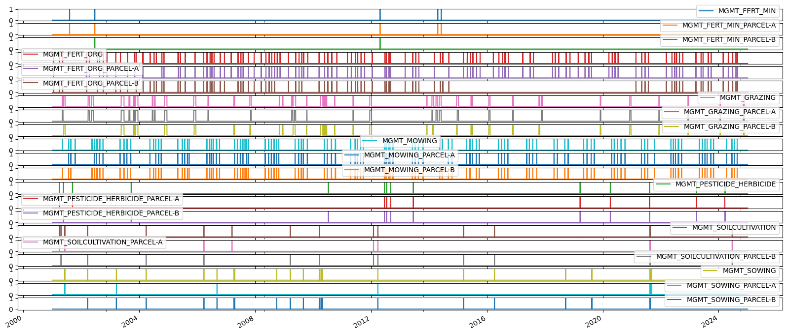
Calculate TIMESINCE management event#
timesincedf = pd.DataFrame()
for v in mgmt_daily.columns:
series = mgmt_daily[v].squeeze()
ts = TimeSince(series, lower_lim=1, include_lim=True)
ts.calc()
# ts_full_results = ts.get_full_results()
timesince = ts.get_timesince()
timesincedf[timesince.name] = timesince
timesincedf
| TIMESINCE_MGMT_FERT_MIN | TIMESINCE_MGMT_FERT_MIN_PARCEL-A | TIMESINCE_MGMT_FERT_MIN_PARCEL-B | TIMESINCE_MGMT_FERT_ORG | TIMESINCE_MGMT_FERT_ORG_PARCEL-A | TIMESINCE_MGMT_FERT_ORG_PARCEL-B | TIMESINCE_MGMT_GRAZING | TIMESINCE_MGMT_GRAZING_PARCEL-A | TIMESINCE_MGMT_GRAZING_PARCEL-B | TIMESINCE_MGMT_MOWING | TIMESINCE_MGMT_MOWING_PARCEL-A | TIMESINCE_MGMT_MOWING_PARCEL-B | TIMESINCE_MGMT_PESTICIDE_HERBICIDE | TIMESINCE_MGMT_PESTICIDE_HERBICIDE_PARCEL-A | TIMESINCE_MGMT_PESTICIDE_HERBICIDE_PARCEL-B | TIMESINCE_MGMT_SOILCULTIVATION | TIMESINCE_MGMT_SOILCULTIVATION_PARCEL-A | TIMESINCE_MGMT_SOILCULTIVATION_PARCEL-B | TIMESINCE_MGMT_SOWING | TIMESINCE_MGMT_SOWING_PARCEL-A | TIMESINCE_MGMT_SOWING_PARCEL-B | |
|---|---|---|---|---|---|---|---|---|---|---|---|---|---|---|---|---|---|---|---|---|---|
| 2001-01-01 | 1 | 1 | 1 | 1 | 1 | 1 | 1 | 1 | 1 | 1 | 1 | 1 | 1 | 1 | 1 | 1 | 1 | 1 | 1 | 1 | 1 |
| 2001-01-02 | 2 | 2 | 2 | 2 | 2 | 2 | 2 | 2 | 2 | 2 | 2 | 2 | 2 | 2 | 2 | 2 | 2 | 2 | 2 | 2 | 2 |
| 2001-01-03 | 3 | 3 | 3 | 3 | 3 | 3 | 3 | 3 | 3 | 3 | 3 | 3 | 3 | 3 | 3 | 3 | 3 | 3 | 3 | 3 | 3 |
| 2001-01-04 | 4 | 4 | 4 | 4 | 4 | 4 | 4 | 4 | 4 | 4 | 4 | 4 | 4 | 4 | 4 | 4 | 4 | 4 | 4 | 4 | 4 |
| 2001-01-05 | 5 | 5 | 5 | 5 | 5 | 5 | 5 | 5 | 5 | 5 | 5 | 5 | 5 | 5 | 5 | 5 | 5 | 5 | 5 | 5 | 5 |
| ... | ... | ... | ... | ... | ... | ... | ... | ... | ... | ... | ... | ... | ... | ... | ... | ... | ... | ... | ... | ... | ... |
| 2024-12-28 | 3859 | 3859 | 4630 | 123 | 123 | 123 | 39 | 39 | 39 | 128 | 128 | 128 | 281 | 284 | 281 | 191 | 191 | 191 | 1206 | 1206 | 1226 |
| 2024-12-29 | 3860 | 3860 | 4631 | 124 | 124 | 124 | 40 | 40 | 40 | 129 | 129 | 129 | 282 | 285 | 282 | 192 | 192 | 192 | 1207 | 1207 | 1227 |
| 2024-12-30 | 3861 | 3861 | 4632 | 125 | 125 | 125 | 41 | 41 | 41 | 130 | 130 | 130 | 283 | 286 | 283 | 193 | 193 | 193 | 1208 | 1208 | 1228 |
| 2024-12-31 | 3862 | 3862 | 4633 | 126 | 126 | 126 | 42 | 42 | 42 | 131 | 131 | 131 | 284 | 287 | 284 | 194 | 194 | 194 | 1209 | 1209 | 1229 |
| 2025-01-01 | 3863 | 3863 | 4634 | 127 | 127 | 127 | 43 | 43 | 43 | 132 | 132 | 132 | 285 | 288 | 285 | 195 | 195 | 195 | 1210 | 1210 | 1230 |
8767 rows × 21 columns
Plots#
for v in mgmt_daily.columns:
fig = plt.figure(facecolor='white', figsize=(40, 4), dpi=100, layout='constrained')
gs = gridspec.GridSpec(2, 1) # rows, cols
gs.update(wspace=0.3, hspace=.5, left=0.03, right=0.97, top=0.97, bottom=0.03)
ax1 = fig.add_subplot(gs[0, 0])
ax2 = fig.add_subplot(gs[1, 0])
TimeSeries(ax=ax1, series=mgmt_daily[v]).plot(color='#1565C0')
TimeSeries(ax=ax2, series=timesincedf[f'TIMESINCE_{v}']).plot(color='#D32F2F')
ax1.set_title("Management event occurrence", color='black')
ax2.set_title("Time since last management event (in number of records)", color='black')
C:\Users\nopan\AppData\Local\Temp\ipykernel_20820\448018422.py:2: RuntimeWarning: More than 20 figures have been opened. Figures created through the pyplot interface (`matplotlib.pyplot.figure`) are retained until explicitly closed and may consume too much memory. (To control this warning, see the rcParam `figure.max_open_warning`). Consider using `matplotlib.pyplot.close()`.
fig = plt.figure(facecolor='white', figsize=(40, 4), dpi=100, layout='constrained')
C:\Users\nopan\miniconda3\envs\cha_fp2024\Lib\site-packages\IPython\core\events.py:82: UserWarning: There are no gridspecs with layoutgrids. Possibly did not call parent GridSpec with the "figure" keyword
func(*args, **kwargs)
C:\Users\nopan\miniconda3\envs\cha_fp2024\Lib\site-packages\IPython\core\pylabtools.py:152: UserWarning: There are no gridspecs with layoutgrids. Possibly did not call parent GridSpec with the "figure" keyword
fig.canvas.print_figure(bytes_io, **kw)
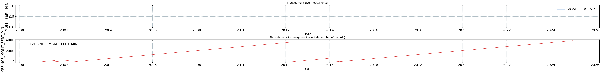
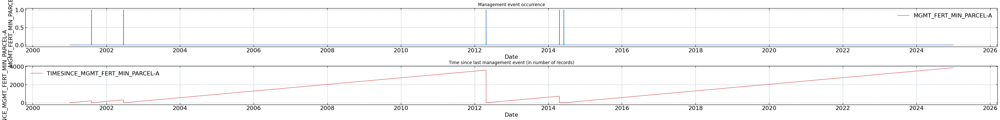
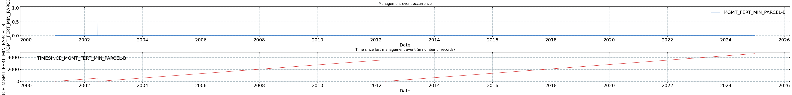
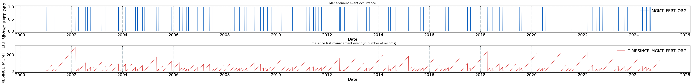
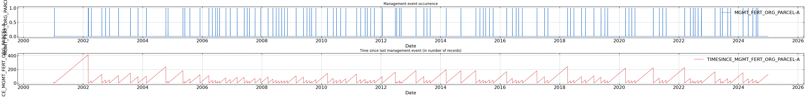
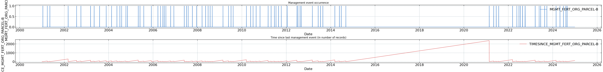
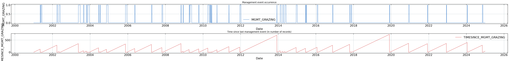
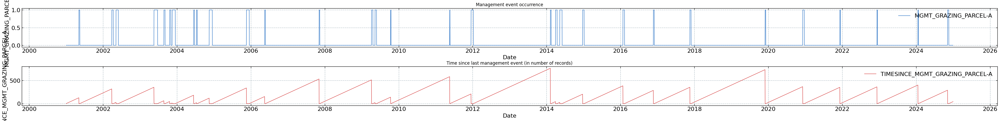
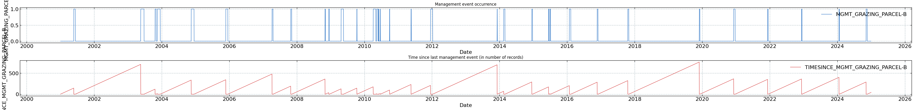
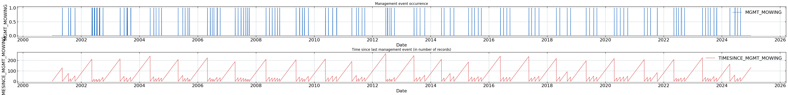
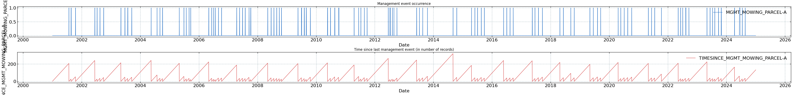
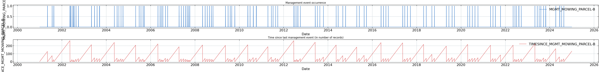
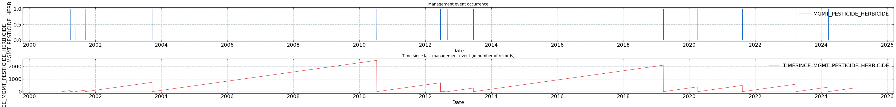
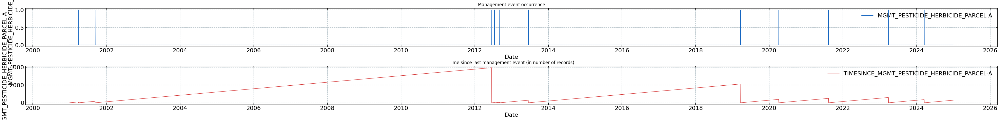
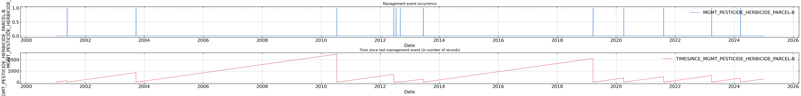
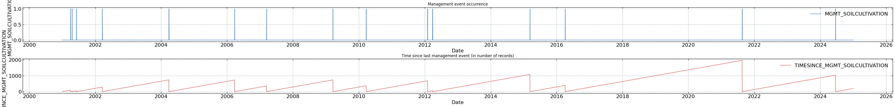
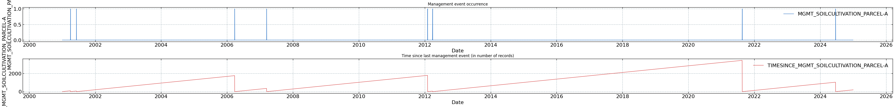
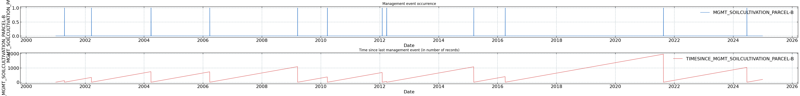
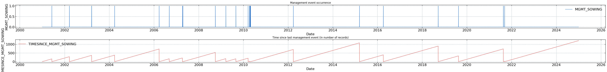
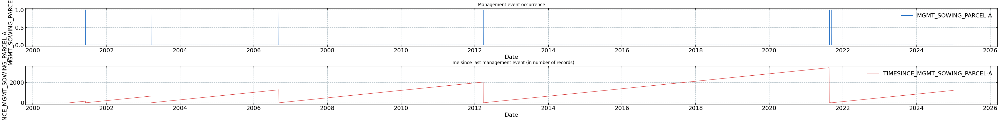
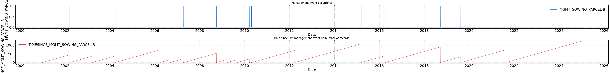
+ Add TIMESINCE variables to management data#
mgmt_daily = pd.concat([mgmt_daily, timesincedf], axis=1)
mgmt_daily
| MGMT_FERT_MIN | MGMT_FERT_MIN_PARCEL-A | MGMT_FERT_MIN_PARCEL-B | MGMT_FERT_ORG | MGMT_FERT_ORG_PARCEL-A | MGMT_FERT_ORG_PARCEL-B | MGMT_GRAZING | MGMT_GRAZING_PARCEL-A | MGMT_GRAZING_PARCEL-B | MGMT_MOWING | MGMT_MOWING_PARCEL-A | MGMT_MOWING_PARCEL-B | MGMT_PESTICIDE_HERBICIDE | MGMT_PESTICIDE_HERBICIDE_PARCEL-A | MGMT_PESTICIDE_HERBICIDE_PARCEL-B | ... | TIMESINCE_MGMT_GRAZING | TIMESINCE_MGMT_GRAZING_PARCEL-A | TIMESINCE_MGMT_GRAZING_PARCEL-B | TIMESINCE_MGMT_MOWING | TIMESINCE_MGMT_MOWING_PARCEL-A | TIMESINCE_MGMT_MOWING_PARCEL-B | TIMESINCE_MGMT_PESTICIDE_HERBICIDE | TIMESINCE_MGMT_PESTICIDE_HERBICIDE_PARCEL-A | TIMESINCE_MGMT_PESTICIDE_HERBICIDE_PARCEL-B | TIMESINCE_MGMT_SOILCULTIVATION | TIMESINCE_MGMT_SOILCULTIVATION_PARCEL-A | TIMESINCE_MGMT_SOILCULTIVATION_PARCEL-B | TIMESINCE_MGMT_SOWING | TIMESINCE_MGMT_SOWING_PARCEL-A | TIMESINCE_MGMT_SOWING_PARCEL-B | |
|---|---|---|---|---|---|---|---|---|---|---|---|---|---|---|---|---|---|---|---|---|---|---|---|---|---|---|---|---|---|---|---|
| 2001-01-01 | 0.0 | 0 | 0 | 0.0 | 0 | 0 | 0.0 | 0 | 0 | 0.0 | 0 | 0 | 0.0 | 0 | 0 | ... | 1 | 1 | 1 | 1 | 1 | 1 | 1 | 1 | 1 | 1 | 1 | 1 | 1 | 1 | 1 |
| 2001-01-02 | 0.0 | 0 | 0 | 0.0 | 0 | 0 | 0.0 | 0 | 0 | 0.0 | 0 | 0 | 0.0 | 0 | 0 | ... | 2 | 2 | 2 | 2 | 2 | 2 | 2 | 2 | 2 | 2 | 2 | 2 | 2 | 2 | 2 |
| 2001-01-03 | 0.0 | 0 | 0 | 0.0 | 0 | 0 | 0.0 | 0 | 0 | 0.0 | 0 | 0 | 0.0 | 0 | 0 | ... | 3 | 3 | 3 | 3 | 3 | 3 | 3 | 3 | 3 | 3 | 3 | 3 | 3 | 3 | 3 |
| 2001-01-04 | 0.0 | 0 | 0 | 0.0 | 0 | 0 | 0.0 | 0 | 0 | 0.0 | 0 | 0 | 0.0 | 0 | 0 | ... | 4 | 4 | 4 | 4 | 4 | 4 | 4 | 4 | 4 | 4 | 4 | 4 | 4 | 4 | 4 |
| 2001-01-05 | 0.0 | 0 | 0 | 0.0 | 0 | 0 | 0.0 | 0 | 0 | 0.0 | 0 | 0 | 0.0 | 0 | 0 | ... | 5 | 5 | 5 | 5 | 5 | 5 | 5 | 5 | 5 | 5 | 5 | 5 | 5 | 5 | 5 |
| ... | ... | ... | ... | ... | ... | ... | ... | ... | ... | ... | ... | ... | ... | ... | ... | ... | ... | ... | ... | ... | ... | ... | ... | ... | ... | ... | ... | ... | ... | ... | ... |
| 2024-12-28 | 0.0 | 0 | 0 | 0.0 | 0 | 0 | 0.0 | 0 | 0 | 0.0 | 0 | 0 | 0.0 | 0 | 0 | ... | 39 | 39 | 39 | 128 | 128 | 128 | 281 | 284 | 281 | 191 | 191 | 191 | 1206 | 1206 | 1226 |
| 2024-12-29 | 0.0 | 0 | 0 | 0.0 | 0 | 0 | 0.0 | 0 | 0 | 0.0 | 0 | 0 | 0.0 | 0 | 0 | ... | 40 | 40 | 40 | 129 | 129 | 129 | 282 | 285 | 282 | 192 | 192 | 192 | 1207 | 1207 | 1227 |
| 2024-12-30 | 0.0 | 0 | 0 | 0.0 | 0 | 0 | 0.0 | 0 | 0 | 0.0 | 0 | 0 | 0.0 | 0 | 0 | ... | 41 | 41 | 41 | 130 | 130 | 130 | 283 | 286 | 283 | 193 | 193 | 193 | 1208 | 1208 | 1228 |
| 2024-12-31 | 0.0 | 0 | 0 | 0.0 | 0 | 0 | 0.0 | 0 | 0 | 0.0 | 0 | 0 | 0.0 | 0 | 0 | ... | 42 | 42 | 42 | 131 | 131 | 131 | 284 | 287 | 284 | 194 | 194 | 194 | 1209 | 1209 | 1229 |
| 2025-01-01 | 0.0 | 0 | 0 | 0.0 | 0 | 0 | 0.0 | 0 | 0 | 0.0 | 0 | 0 | 0.0 | 0 | 0 | ... | 43 | 43 | 43 | 132 | 132 | 132 | 285 | 288 | 285 | 195 | 195 | 195 | 1210 | 1210 | 1230 |
8767 rows × 42 columns
collist = mgmt_daily.columns.tolist()
collist
['MGMT_FERT_MIN',
'MGMT_FERT_MIN_PARCEL-A',
'MGMT_FERT_MIN_PARCEL-B',
'MGMT_FERT_ORG',
'MGMT_FERT_ORG_PARCEL-A',
'MGMT_FERT_ORG_PARCEL-B',
'MGMT_GRAZING',
'MGMT_GRAZING_PARCEL-A',
'MGMT_GRAZING_PARCEL-B',
'MGMT_MOWING',
'MGMT_MOWING_PARCEL-A',
'MGMT_MOWING_PARCEL-B',
'MGMT_PESTICIDE_HERBICIDE',
'MGMT_PESTICIDE_HERBICIDE_PARCEL-A',
'MGMT_PESTICIDE_HERBICIDE_PARCEL-B',
'MGMT_SOILCULTIVATION',
'MGMT_SOILCULTIVATION_PARCEL-A',
'MGMT_SOILCULTIVATION_PARCEL-B',
'MGMT_SOWING',
'MGMT_SOWING_PARCEL-A',
'MGMT_SOWING_PARCEL-B',
'TIMESINCE_MGMT_FERT_MIN',
'TIMESINCE_MGMT_FERT_MIN_PARCEL-A',
'TIMESINCE_MGMT_FERT_MIN_PARCEL-B',
'TIMESINCE_MGMT_FERT_ORG',
'TIMESINCE_MGMT_FERT_ORG_PARCEL-A',
'TIMESINCE_MGMT_FERT_ORG_PARCEL-B',
'TIMESINCE_MGMT_GRAZING',
'TIMESINCE_MGMT_GRAZING_PARCEL-A',
'TIMESINCE_MGMT_GRAZING_PARCEL-B',
'TIMESINCE_MGMT_MOWING',
'TIMESINCE_MGMT_MOWING_PARCEL-A',
'TIMESINCE_MGMT_MOWING_PARCEL-B',
'TIMESINCE_MGMT_PESTICIDE_HERBICIDE',
'TIMESINCE_MGMT_PESTICIDE_HERBICIDE_PARCEL-A',
'TIMESINCE_MGMT_PESTICIDE_HERBICIDE_PARCEL-B',
'TIMESINCE_MGMT_SOILCULTIVATION',
'TIMESINCE_MGMT_SOILCULTIVATION_PARCEL-A',
'TIMESINCE_MGMT_SOILCULTIVATION_PARCEL-B',
'TIMESINCE_MGMT_SOWING',
'TIMESINCE_MGMT_SOWING_PARCEL-A',
'TIMESINCE_MGMT_SOWING_PARCEL-B']
mgmt_daily.to_csv("22.4_mgmt_daily.csv")
HALF-HOURLY#
Initiate footprint management columns#
mgmt_cols = [sub.replace('_PARCEL-A', '') for sub in collist]
mgmt_cols = [sub.replace('_PARCEL-B', '') for sub in mgmt_cols]
mgmt_cols = [sub.replace('TIMESINCE_', '') for sub in mgmt_cols]
mgmt_cols = list(set(mgmt_cols))
display(mgmt_cols)
['MGMT_PESTICIDE_HERBICIDE',
'MGMT_GRAZING',
'MGMT_SOILCULTIVATION',
'MGMT_SOWING',
'MGMT_FERT_ORG',
'MGMT_FERT_MIN',
'MGMT_MOWING']
fp_mgmt_cols = [f"{c}_FOOTPRINT" for c in mgmt_cols]
fp_mgmt_cols
['MGMT_PESTICIDE_HERBICIDE_FOOTPRINT',
'MGMT_GRAZING_FOOTPRINT',
'MGMT_SOILCULTIVATION_FOOTPRINT',
'MGMT_SOWING_FOOTPRINT',
'MGMT_FERT_ORG_FOOTPRINT',
'MGMT_FERT_MIN_FOOTPRINT',
'MGMT_MOWING_FOOTPRINT']
# Add empty footprint columns to dataframe
mgmt_daily = mgmt_daily.reindex(columns = mgmt_daily.columns.tolist() + fp_mgmt_cols)
mgmt_daily
| MGMT_FERT_MIN | MGMT_FERT_MIN_PARCEL-A | MGMT_FERT_MIN_PARCEL-B | MGMT_FERT_ORG | MGMT_FERT_ORG_PARCEL-A | MGMT_FERT_ORG_PARCEL-B | MGMT_GRAZING | MGMT_GRAZING_PARCEL-A | MGMT_GRAZING_PARCEL-B | MGMT_MOWING | MGMT_MOWING_PARCEL-A | MGMT_MOWING_PARCEL-B | MGMT_PESTICIDE_HERBICIDE | MGMT_PESTICIDE_HERBICIDE_PARCEL-A | MGMT_PESTICIDE_HERBICIDE_PARCEL-B | ... | TIMESINCE_MGMT_PESTICIDE_HERBICIDE_PARCEL-A | TIMESINCE_MGMT_PESTICIDE_HERBICIDE_PARCEL-B | TIMESINCE_MGMT_SOILCULTIVATION | TIMESINCE_MGMT_SOILCULTIVATION_PARCEL-A | TIMESINCE_MGMT_SOILCULTIVATION_PARCEL-B | TIMESINCE_MGMT_SOWING | TIMESINCE_MGMT_SOWING_PARCEL-A | TIMESINCE_MGMT_SOWING_PARCEL-B | MGMT_PESTICIDE_HERBICIDE_FOOTPRINT | MGMT_GRAZING_FOOTPRINT | MGMT_SOILCULTIVATION_FOOTPRINT | MGMT_SOWING_FOOTPRINT | MGMT_FERT_ORG_FOOTPRINT | MGMT_FERT_MIN_FOOTPRINT | MGMT_MOWING_FOOTPRINT | |
|---|---|---|---|---|---|---|---|---|---|---|---|---|---|---|---|---|---|---|---|---|---|---|---|---|---|---|---|---|---|---|---|
| 2001-01-01 | 0.0 | 0 | 0 | 0.0 | 0 | 0 | 0.0 | 0 | 0 | 0.0 | 0 | 0 | 0.0 | 0 | 0 | ... | 1 | 1 | 1 | 1 | 1 | 1 | 1 | 1 | NaN | NaN | NaN | NaN | NaN | NaN | NaN |
| 2001-01-02 | 0.0 | 0 | 0 | 0.0 | 0 | 0 | 0.0 | 0 | 0 | 0.0 | 0 | 0 | 0.0 | 0 | 0 | ... | 2 | 2 | 2 | 2 | 2 | 2 | 2 | 2 | NaN | NaN | NaN | NaN | NaN | NaN | NaN |
| 2001-01-03 | 0.0 | 0 | 0 | 0.0 | 0 | 0 | 0.0 | 0 | 0 | 0.0 | 0 | 0 | 0.0 | 0 | 0 | ... | 3 | 3 | 3 | 3 | 3 | 3 | 3 | 3 | NaN | NaN | NaN | NaN | NaN | NaN | NaN |
| 2001-01-04 | 0.0 | 0 | 0 | 0.0 | 0 | 0 | 0.0 | 0 | 0 | 0.0 | 0 | 0 | 0.0 | 0 | 0 | ... | 4 | 4 | 4 | 4 | 4 | 4 | 4 | 4 | NaN | NaN | NaN | NaN | NaN | NaN | NaN |
| 2001-01-05 | 0.0 | 0 | 0 | 0.0 | 0 | 0 | 0.0 | 0 | 0 | 0.0 | 0 | 0 | 0.0 | 0 | 0 | ... | 5 | 5 | 5 | 5 | 5 | 5 | 5 | 5 | NaN | NaN | NaN | NaN | NaN | NaN | NaN |
| ... | ... | ... | ... | ... | ... | ... | ... | ... | ... | ... | ... | ... | ... | ... | ... | ... | ... | ... | ... | ... | ... | ... | ... | ... | ... | ... | ... | ... | ... | ... | ... |
| 2024-12-28 | 0.0 | 0 | 0 | 0.0 | 0 | 0 | 0.0 | 0 | 0 | 0.0 | 0 | 0 | 0.0 | 0 | 0 | ... | 284 | 281 | 191 | 191 | 191 | 1206 | 1206 | 1226 | NaN | NaN | NaN | NaN | NaN | NaN | NaN |
| 2024-12-29 | 0.0 | 0 | 0 | 0.0 | 0 | 0 | 0.0 | 0 | 0 | 0.0 | 0 | 0 | 0.0 | 0 | 0 | ... | 285 | 282 | 192 | 192 | 192 | 1207 | 1207 | 1227 | NaN | NaN | NaN | NaN | NaN | NaN | NaN |
| 2024-12-30 | 0.0 | 0 | 0 | 0.0 | 0 | 0 | 0.0 | 0 | 0 | 0.0 | 0 | 0 | 0.0 | 0 | 0 | ... | 286 | 283 | 193 | 193 | 193 | 1208 | 1208 | 1228 | NaN | NaN | NaN | NaN | NaN | NaN | NaN |
| 2024-12-31 | 0.0 | 0 | 0 | 0.0 | 0 | 0 | 0.0 | 0 | 0 | 0.0 | 0 | 0 | 0.0 | 0 | 0 | ... | 287 | 284 | 194 | 194 | 194 | 1209 | 1209 | 1229 | NaN | NaN | NaN | NaN | NaN | NaN | NaN |
| 2025-01-01 | 0.0 | 0 | 0 | 0.0 | 0 | 0 | 0.0 | 0 | 0 | 0.0 | 0 | 0 | 0.0 | 0 | 0 | ... | 288 | 285 | 195 | 195 | 195 | 1210 | 1210 | 1230 | NaN | NaN | NaN | NaN | NaN | NaN | NaN |
8767 rows × 49 columns
Half-hourly timestamp for management data#
first_hh = pd.to_datetime(mgmt_daily.index[0]) + pd.Timedelta(minutes=15)
last_hh = pd.to_datetime(mgmt_daily.index[-1]) + pd.Timedelta(hours=23, minutes=45)
print(first_hh)
print(last_hh)
2001-01-01 00:15:00
2025-01-01 23:45:00
Create half-hourly dataframe for management data#
timestamp_hh = pd.date_range(first_hh, last_hh, freq='30min')
mgmt_hh = pd.DataFrame(index=timestamp_hh)
mgmt_hh['TIMESTAMP_MIDDLE'] = pd.to_datetime(mgmt_hh.index) # For merging with daily time resolution management data
mgmt_hh['DATE'] = pd.to_datetime(mgmt_hh.index.date) # For merging with daily time resolution management data
mgmt_hh
| TIMESTAMP_MIDDLE | DATE | |
|---|---|---|
| 2001-01-01 00:15:00 | 2001-01-01 00:15:00 | 2001-01-01 |
| 2001-01-01 00:45:00 | 2001-01-01 00:45:00 | 2001-01-01 |
| 2001-01-01 01:15:00 | 2001-01-01 01:15:00 | 2001-01-01 |
| 2001-01-01 01:45:00 | 2001-01-01 01:45:00 | 2001-01-01 |
| 2001-01-01 02:15:00 | 2001-01-01 02:15:00 | 2001-01-01 |
| ... | ... | ... |
| 2025-01-01 21:45:00 | 2025-01-01 21:45:00 | 2025-01-01 |
| 2025-01-01 22:15:00 | 2025-01-01 22:15:00 | 2025-01-01 |
| 2025-01-01 22:45:00 | 2025-01-01 22:45:00 | 2025-01-01 |
| 2025-01-01 23:15:00 | 2025-01-01 23:15:00 | 2025-01-01 |
| 2025-01-01 23:45:00 | 2025-01-01 23:45:00 | 2025-01-01 |
420816 rows × 2 columns
mgmt_daily['DATE'] = mgmt_daily.index
mgmt_daily['DATE'] = pd.to_datetime(mgmt_daily['DATE'])
mgmt_daily.head(3)
| MGMT_FERT_MIN | MGMT_FERT_MIN_PARCEL-A | MGMT_FERT_MIN_PARCEL-B | MGMT_FERT_ORG | MGMT_FERT_ORG_PARCEL-A | MGMT_FERT_ORG_PARCEL-B | MGMT_GRAZING | MGMT_GRAZING_PARCEL-A | MGMT_GRAZING_PARCEL-B | MGMT_MOWING | MGMT_MOWING_PARCEL-A | MGMT_MOWING_PARCEL-B | MGMT_PESTICIDE_HERBICIDE | MGMT_PESTICIDE_HERBICIDE_PARCEL-A | MGMT_PESTICIDE_HERBICIDE_PARCEL-B | ... | TIMESINCE_MGMT_PESTICIDE_HERBICIDE_PARCEL-B | TIMESINCE_MGMT_SOILCULTIVATION | TIMESINCE_MGMT_SOILCULTIVATION_PARCEL-A | TIMESINCE_MGMT_SOILCULTIVATION_PARCEL-B | TIMESINCE_MGMT_SOWING | TIMESINCE_MGMT_SOWING_PARCEL-A | TIMESINCE_MGMT_SOWING_PARCEL-B | MGMT_PESTICIDE_HERBICIDE_FOOTPRINT | MGMT_GRAZING_FOOTPRINT | MGMT_SOILCULTIVATION_FOOTPRINT | MGMT_SOWING_FOOTPRINT | MGMT_FERT_ORG_FOOTPRINT | MGMT_FERT_MIN_FOOTPRINT | MGMT_MOWING_FOOTPRINT | DATE | |
|---|---|---|---|---|---|---|---|---|---|---|---|---|---|---|---|---|---|---|---|---|---|---|---|---|---|---|---|---|---|---|---|
| 2001-01-01 | 0.0 | 0 | 0 | 0.0 | 0 | 0 | 0.0 | 0 | 0 | 0.0 | 0 | 0 | 0.0 | 0 | 0 | ... | 1 | 1 | 1 | 1 | 1 | 1 | 1 | NaN | NaN | NaN | NaN | NaN | NaN | NaN | 2001-01-01 |
| 2001-01-02 | 0.0 | 0 | 0 | 0.0 | 0 | 0 | 0.0 | 0 | 0 | 0.0 | 0 | 0 | 0.0 | 0 | 0 | ... | 2 | 2 | 2 | 2 | 2 | 2 | 2 | NaN | NaN | NaN | NaN | NaN | NaN | NaN | 2001-01-02 |
| 2001-01-03 | 0.0 | 0 | 0 | 0.0 | 0 | 0 | 0.0 | 0 | 0 | 0.0 | 0 | 0 | 0.0 | 0 | 0 | ... | 3 | 3 | 3 | 3 | 3 | 3 | 3 | NaN | NaN | NaN | NaN | NaN | NaN | NaN | 2001-01-03 |
3 rows × 50 columns
# Merge on DATE column
mgmt_hh = pd.merge(mgmt_hh, mgmt_daily, on='DATE')
mgmt_hh = mgmt_hh.set_index('TIMESTAMP_MIDDLE')
mgmt_hh = mgmt_hh.drop('DATE', axis=1)
mgmt_hh
| MGMT_FERT_MIN | MGMT_FERT_MIN_PARCEL-A | MGMT_FERT_MIN_PARCEL-B | MGMT_FERT_ORG | MGMT_FERT_ORG_PARCEL-A | MGMT_FERT_ORG_PARCEL-B | MGMT_GRAZING | MGMT_GRAZING_PARCEL-A | MGMT_GRAZING_PARCEL-B | MGMT_MOWING | MGMT_MOWING_PARCEL-A | MGMT_MOWING_PARCEL-B | MGMT_PESTICIDE_HERBICIDE | MGMT_PESTICIDE_HERBICIDE_PARCEL-A | MGMT_PESTICIDE_HERBICIDE_PARCEL-B | ... | TIMESINCE_MGMT_PESTICIDE_HERBICIDE_PARCEL-A | TIMESINCE_MGMT_PESTICIDE_HERBICIDE_PARCEL-B | TIMESINCE_MGMT_SOILCULTIVATION | TIMESINCE_MGMT_SOILCULTIVATION_PARCEL-A | TIMESINCE_MGMT_SOILCULTIVATION_PARCEL-B | TIMESINCE_MGMT_SOWING | TIMESINCE_MGMT_SOWING_PARCEL-A | TIMESINCE_MGMT_SOWING_PARCEL-B | MGMT_PESTICIDE_HERBICIDE_FOOTPRINT | MGMT_GRAZING_FOOTPRINT | MGMT_SOILCULTIVATION_FOOTPRINT | MGMT_SOWING_FOOTPRINT | MGMT_FERT_ORG_FOOTPRINT | MGMT_FERT_MIN_FOOTPRINT | MGMT_MOWING_FOOTPRINT | |
|---|---|---|---|---|---|---|---|---|---|---|---|---|---|---|---|---|---|---|---|---|---|---|---|---|---|---|---|---|---|---|---|
| TIMESTAMP_MIDDLE | |||||||||||||||||||||||||||||||
| 2001-01-01 00:15:00 | 0.0 | 0 | 0 | 0.0 | 0 | 0 | 0.0 | 0 | 0 | 0.0 | 0 | 0 | 0.0 | 0 | 0 | ... | 1 | 1 | 1 | 1 | 1 | 1 | 1 | 1 | NaN | NaN | NaN | NaN | NaN | NaN | NaN |
| 2001-01-01 00:45:00 | 0.0 | 0 | 0 | 0.0 | 0 | 0 | 0.0 | 0 | 0 | 0.0 | 0 | 0 | 0.0 | 0 | 0 | ... | 1 | 1 | 1 | 1 | 1 | 1 | 1 | 1 | NaN | NaN | NaN | NaN | NaN | NaN | NaN |
| 2001-01-01 01:15:00 | 0.0 | 0 | 0 | 0.0 | 0 | 0 | 0.0 | 0 | 0 | 0.0 | 0 | 0 | 0.0 | 0 | 0 | ... | 1 | 1 | 1 | 1 | 1 | 1 | 1 | 1 | NaN | NaN | NaN | NaN | NaN | NaN | NaN |
| 2001-01-01 01:45:00 | 0.0 | 0 | 0 | 0.0 | 0 | 0 | 0.0 | 0 | 0 | 0.0 | 0 | 0 | 0.0 | 0 | 0 | ... | 1 | 1 | 1 | 1 | 1 | 1 | 1 | 1 | NaN | NaN | NaN | NaN | NaN | NaN | NaN |
| 2001-01-01 02:15:00 | 0.0 | 0 | 0 | 0.0 | 0 | 0 | 0.0 | 0 | 0 | 0.0 | 0 | 0 | 0.0 | 0 | 0 | ... | 1 | 1 | 1 | 1 | 1 | 1 | 1 | 1 | NaN | NaN | NaN | NaN | NaN | NaN | NaN |
| ... | ... | ... | ... | ... | ... | ... | ... | ... | ... | ... | ... | ... | ... | ... | ... | ... | ... | ... | ... | ... | ... | ... | ... | ... | ... | ... | ... | ... | ... | ... | ... |
| 2025-01-01 21:45:00 | 0.0 | 0 | 0 | 0.0 | 0 | 0 | 0.0 | 0 | 0 | 0.0 | 0 | 0 | 0.0 | 0 | 0 | ... | 288 | 285 | 195 | 195 | 195 | 1210 | 1210 | 1230 | NaN | NaN | NaN | NaN | NaN | NaN | NaN |
| 2025-01-01 22:15:00 | 0.0 | 0 | 0 | 0.0 | 0 | 0 | 0.0 | 0 | 0 | 0.0 | 0 | 0 | 0.0 | 0 | 0 | ... | 288 | 285 | 195 | 195 | 195 | 1210 | 1210 | 1230 | NaN | NaN | NaN | NaN | NaN | NaN | NaN |
| 2025-01-01 22:45:00 | 0.0 | 0 | 0 | 0.0 | 0 | 0 | 0.0 | 0 | 0 | 0.0 | 0 | 0 | 0.0 | 0 | 0 | ... | 288 | 285 | 195 | 195 | 195 | 1210 | 1210 | 1230 | NaN | NaN | NaN | NaN | NaN | NaN | NaN |
| 2025-01-01 23:15:00 | 0.0 | 0 | 0 | 0.0 | 0 | 0 | 0.0 | 0 | 0 | 0.0 | 0 | 0 | 0.0 | 0 | 0 | ... | 288 | 285 | 195 | 195 | 195 | 1210 | 1210 | 1230 | NaN | NaN | NaN | NaN | NaN | NaN | NaN |
| 2025-01-01 23:45:00 | 0.0 | 0 | 0 | 0.0 | 0 | 0 | 0.0 | 0 | 0 | 0.0 | 0 | 0 | 0.0 | 0 | 0 | ... | 288 | 285 | 195 | 195 | 195 | 1210 | 1210 | 1230 | NaN | NaN | NaN | NaN | NaN | NaN | NaN |
420816 rows × 49 columns
+ Add wind direction to management data#
mgmt_hh['WD'] = winddir.copy()
mgmt_hh['WD']
TIMESTAMP_MIDDLE
2001-01-01 00:15:00 NaN
2001-01-01 00:45:00 NaN
2001-01-01 01:15:00 NaN
2001-01-01 01:45:00 NaN
2001-01-01 02:15:00 NaN
..
2025-01-01 21:45:00 NaN
2025-01-01 22:15:00 NaN
2025-01-01 22:45:00 NaN
2025-01-01 23:15:00 NaN
2025-01-01 23:45:00 NaN
Name: WD, Length: 420816, dtype: float64
List of managments in half-hourly dataframe#
mgmt_hh_cols = mgmt_hh.columns.to_list()
mgmt_hh_cols = [sub.replace('_PARCEL-A', '') for sub in mgmt_hh_cols]
mgmt_hh_cols = [sub.replace('_PARCEL-B', '') for sub in mgmt_hh_cols]
mgmt_hh_cols = [sub.replace('TIMESINCE_', '') for sub in mgmt_hh_cols]
mgmt_hh_cols = [sub.replace('_FOOTPRINT', '') for sub in mgmt_hh_cols]
mgmt_hh_cols.remove("WD")
mgmt_hh_cols = list(set(mgmt_hh_cols))
mgmt_hh_cols
['MGMT_PESTICIDE_HERBICIDE',
'MGMT_GRAZING',
'MGMT_SOILCULTIVATION',
'MGMT_SOWING',
'MGMT_FERT_ORG',
'MGMT_FERT_MIN',
'MGMT_MOWING']
Fill footprint management columns depending on wind direction#
Parcel division runs from 250° to 70°
Parcel A (south of station): >= 70, < 250
Parcel B (north of station: )>= 250, < 70
locs_parcel_a = (mgmt_hh['WD'] >= 70) & (mgmt_hh['WD'] < 250) # parcel south of station
locs_parcel_b = (mgmt_hh['WD'] >= 250) | (mgmt_hh['WD'] < 70) # parcel north of station
for m in mgmt_hh_cols:
fp_var = f"{m}_FOOTPRINT"
fp_timesince_var = f"TIMESINCE_{m}_FOOTPRINT"
parcela_var = f"{m}_PARCEL-A"
if parcela_var in mgmt_hh.columns:
parcela_timesince_var = f"TIMESINCE_{m}_PARCEL-A"
mgmt_hh.loc[locs_parcel_a, fp_var] = mgmt_hh.loc[locs_parcel_a, parcela_var]
mgmt_hh.loc[locs_parcel_a, fp_timesince_var] = mgmt_hh.loc[locs_parcel_a, parcela_timesince_var]
parcelb_var = f"{m}_PARCEL-B"
if parcelb_var in mgmt_hh.columns:
parcelb_timesince_var = f"TIMESINCE_{m}_PARCEL-B"
mgmt_hh.loc[locs_parcel_b, fp_var] = mgmt_hh.loc[locs_parcel_b, parcelb_var]
mgmt_hh.loc[locs_parcel_b, fp_timesince_var] = mgmt_hh.loc[locs_parcel_b, parcelb_timesince_var]
Fill footprint management columns for 2005 (no wind data available)#
pd.options.display.max_rows = 4000
mgmt_hh.count()
MGMT_FERT_MIN 420816
MGMT_FERT_MIN_PARCEL-A 420816
MGMT_FERT_MIN_PARCEL-B 420816
MGMT_FERT_ORG 420816
MGMT_FERT_ORG_PARCEL-A 420816
MGMT_FERT_ORG_PARCEL-B 420816
MGMT_GRAZING 420816
MGMT_GRAZING_PARCEL-A 420816
MGMT_GRAZING_PARCEL-B 420816
MGMT_MOWING 420816
MGMT_MOWING_PARCEL-A 420816
MGMT_MOWING_PARCEL-B 420816
MGMT_PESTICIDE_HERBICIDE 420816
MGMT_PESTICIDE_HERBICIDE_PARCEL-A 420816
MGMT_PESTICIDE_HERBICIDE_PARCEL-B 420816
MGMT_SOILCULTIVATION 420816
MGMT_SOILCULTIVATION_PARCEL-A 420816
MGMT_SOILCULTIVATION_PARCEL-B 420816
MGMT_SOWING 420816
MGMT_SOWING_PARCEL-A 420816
MGMT_SOWING_PARCEL-B 420816
TIMESINCE_MGMT_FERT_MIN 420816
TIMESINCE_MGMT_FERT_MIN_PARCEL-A 420816
TIMESINCE_MGMT_FERT_MIN_PARCEL-B 420816
TIMESINCE_MGMT_FERT_ORG 420816
TIMESINCE_MGMT_FERT_ORG_PARCEL-A 420816
TIMESINCE_MGMT_FERT_ORG_PARCEL-B 420816
TIMESINCE_MGMT_GRAZING 420816
TIMESINCE_MGMT_GRAZING_PARCEL-A 420816
TIMESINCE_MGMT_GRAZING_PARCEL-B 420816
TIMESINCE_MGMT_MOWING 420816
TIMESINCE_MGMT_MOWING_PARCEL-A 420816
TIMESINCE_MGMT_MOWING_PARCEL-B 420816
TIMESINCE_MGMT_PESTICIDE_HERBICIDE 420816
TIMESINCE_MGMT_PESTICIDE_HERBICIDE_PARCEL-A 420816
TIMESINCE_MGMT_PESTICIDE_HERBICIDE_PARCEL-B 420816
TIMESINCE_MGMT_SOILCULTIVATION 420816
TIMESINCE_MGMT_SOILCULTIVATION_PARCEL-A 420816
TIMESINCE_MGMT_SOILCULTIVATION_PARCEL-B 420816
TIMESINCE_MGMT_SOWING 420816
TIMESINCE_MGMT_SOWING_PARCEL-A 420816
TIMESINCE_MGMT_SOWING_PARCEL-B 420816
MGMT_PESTICIDE_HERBICIDE_FOOTPRINT 329717
MGMT_GRAZING_FOOTPRINT 329717
MGMT_SOILCULTIVATION_FOOTPRINT 329717
MGMT_SOWING_FOOTPRINT 329717
MGMT_FERT_ORG_FOOTPRINT 329717
MGMT_FERT_MIN_FOOTPRINT 329717
MGMT_MOWING_FOOTPRINT 329717
WD 329717
TIMESINCE_MGMT_PESTICIDE_HERBICIDE_FOOTPRINT 329717
TIMESINCE_MGMT_GRAZING_FOOTPRINT 329717
TIMESINCE_MGMT_SOILCULTIVATION_FOOTPRINT 329717
TIMESINCE_MGMT_SOWING_FOOTPRINT 329717
TIMESINCE_MGMT_FERT_ORG_FOOTPRINT 329717
TIMESINCE_MGMT_FERT_MIN_FOOTPRINT 329717
TIMESINCE_MGMT_MOWING_FOOTPRINT 329717
dtype: int64
for m in mgmt_hh_cols:
col_to_fill = f"{m}_FOOTPRINT"
mgmt_hh[col_to_fill] = mgmt_hh[col_to_fill].fillna(mgmt_hh[m]) # Fill missing values in footprint management with general management info (both parcels)
print(f"Filled missing values in column {col_to_fill} with values from column {m}.")
col_to_fill_timesince = f"TIMESINCE_{m}_FOOTPRINT"
m_timesince = f"TIMESINCE_{m}"
mgmt_hh[col_to_fill_timesince] = mgmt_hh[col_to_fill_timesince].fillna(mgmt_hh[m_timesince]) # Fill missing values in footprint management with general management info (both parcels)
print(f"Filled missing values in column {col_to_fill_timesince} with values from column {m_timesince}.")
Filled missing values in column MGMT_PESTICIDE_HERBICIDE_FOOTPRINT with values from column MGMT_PESTICIDE_HERBICIDE.
Filled missing values in column TIMESINCE_MGMT_PESTICIDE_HERBICIDE_FOOTPRINT with values from column TIMESINCE_MGMT_PESTICIDE_HERBICIDE.
Filled missing values in column MGMT_GRAZING_FOOTPRINT with values from column MGMT_GRAZING.
Filled missing values in column TIMESINCE_MGMT_GRAZING_FOOTPRINT with values from column TIMESINCE_MGMT_GRAZING.
Filled missing values in column MGMT_SOILCULTIVATION_FOOTPRINT with values from column MGMT_SOILCULTIVATION.
Filled missing values in column TIMESINCE_MGMT_SOILCULTIVATION_FOOTPRINT with values from column TIMESINCE_MGMT_SOILCULTIVATION.
Filled missing values in column MGMT_SOWING_FOOTPRINT with values from column MGMT_SOWING.
Filled missing values in column TIMESINCE_MGMT_SOWING_FOOTPRINT with values from column TIMESINCE_MGMT_SOWING.
Filled missing values in column MGMT_FERT_ORG_FOOTPRINT with values from column MGMT_FERT_ORG.
Filled missing values in column TIMESINCE_MGMT_FERT_ORG_FOOTPRINT with values from column TIMESINCE_MGMT_FERT_ORG.
Filled missing values in column MGMT_FERT_MIN_FOOTPRINT with values from column MGMT_FERT_MIN.
Filled missing values in column TIMESINCE_MGMT_FERT_MIN_FOOTPRINT with values from column TIMESINCE_MGMT_FERT_MIN.
Filled missing values in column MGMT_MOWING_FOOTPRINT with values from column MGMT_MOWING.
Filled missing values in column TIMESINCE_MGMT_MOWING_FOOTPRINT with values from column TIMESINCE_MGMT_MOWING.
pd.options.display.max_rows = 4000
mgmt_hh.isnull().sum()
MGMT_FERT_MIN 0
MGMT_FERT_MIN_PARCEL-A 0
MGMT_FERT_MIN_PARCEL-B 0
MGMT_FERT_ORG 0
MGMT_FERT_ORG_PARCEL-A 0
MGMT_FERT_ORG_PARCEL-B 0
MGMT_GRAZING 0
MGMT_GRAZING_PARCEL-A 0
MGMT_GRAZING_PARCEL-B 0
MGMT_MOWING 0
MGMT_MOWING_PARCEL-A 0
MGMT_MOWING_PARCEL-B 0
MGMT_PESTICIDE_HERBICIDE 0
MGMT_PESTICIDE_HERBICIDE_PARCEL-A 0
MGMT_PESTICIDE_HERBICIDE_PARCEL-B 0
MGMT_SOILCULTIVATION 0
MGMT_SOILCULTIVATION_PARCEL-A 0
MGMT_SOILCULTIVATION_PARCEL-B 0
MGMT_SOWING 0
MGMT_SOWING_PARCEL-A 0
MGMT_SOWING_PARCEL-B 0
TIMESINCE_MGMT_FERT_MIN 0
TIMESINCE_MGMT_FERT_MIN_PARCEL-A 0
TIMESINCE_MGMT_FERT_MIN_PARCEL-B 0
TIMESINCE_MGMT_FERT_ORG 0
TIMESINCE_MGMT_FERT_ORG_PARCEL-A 0
TIMESINCE_MGMT_FERT_ORG_PARCEL-B 0
TIMESINCE_MGMT_GRAZING 0
TIMESINCE_MGMT_GRAZING_PARCEL-A 0
TIMESINCE_MGMT_GRAZING_PARCEL-B 0
TIMESINCE_MGMT_MOWING 0
TIMESINCE_MGMT_MOWING_PARCEL-A 0
TIMESINCE_MGMT_MOWING_PARCEL-B 0
TIMESINCE_MGMT_PESTICIDE_HERBICIDE 0
TIMESINCE_MGMT_PESTICIDE_HERBICIDE_PARCEL-A 0
TIMESINCE_MGMT_PESTICIDE_HERBICIDE_PARCEL-B 0
TIMESINCE_MGMT_SOILCULTIVATION 0
TIMESINCE_MGMT_SOILCULTIVATION_PARCEL-A 0
TIMESINCE_MGMT_SOILCULTIVATION_PARCEL-B 0
TIMESINCE_MGMT_SOWING 0
TIMESINCE_MGMT_SOWING_PARCEL-A 0
TIMESINCE_MGMT_SOWING_PARCEL-B 0
MGMT_PESTICIDE_HERBICIDE_FOOTPRINT 0
MGMT_GRAZING_FOOTPRINT 0
MGMT_SOILCULTIVATION_FOOTPRINT 0
MGMT_SOWING_FOOTPRINT 0
MGMT_FERT_ORG_FOOTPRINT 0
MGMT_FERT_MIN_FOOTPRINT 0
MGMT_MOWING_FOOTPRINT 0
WD 91099
TIMESINCE_MGMT_PESTICIDE_HERBICIDE_FOOTPRINT 0
TIMESINCE_MGMT_GRAZING_FOOTPRINT 0
TIMESINCE_MGMT_SOILCULTIVATION_FOOTPRINT 0
TIMESINCE_MGMT_SOWING_FOOTPRINT 0
TIMESINCE_MGMT_FERT_ORG_FOOTPRINT 0
TIMESINCE_MGMT_FERT_MIN_FOOTPRINT 0
TIMESINCE_MGMT_MOWING_FOOTPRINT 0
dtype: int64
Final half-hourly management dataframe#
# Sort columns
mgmt_hh = mgmt_hh.reindex(sorted(mgmt_hh.columns), axis=1)
mgmt_hh
| MGMT_FERT_MIN | MGMT_FERT_MIN_FOOTPRINT | MGMT_FERT_MIN_PARCEL-A | MGMT_FERT_MIN_PARCEL-B | MGMT_FERT_ORG | MGMT_FERT_ORG_FOOTPRINT | MGMT_FERT_ORG_PARCEL-A | MGMT_FERT_ORG_PARCEL-B | MGMT_GRAZING | MGMT_GRAZING_FOOTPRINT | MGMT_GRAZING_PARCEL-A | MGMT_GRAZING_PARCEL-B | MGMT_MOWING | MGMT_MOWING_FOOTPRINT | MGMT_MOWING_PARCEL-A | ... | TIMESINCE_MGMT_MOWING_PARCEL-A | TIMESINCE_MGMT_MOWING_PARCEL-B | TIMESINCE_MGMT_PESTICIDE_HERBICIDE | TIMESINCE_MGMT_PESTICIDE_HERBICIDE_FOOTPRINT | TIMESINCE_MGMT_PESTICIDE_HERBICIDE_PARCEL-A | TIMESINCE_MGMT_PESTICIDE_HERBICIDE_PARCEL-B | TIMESINCE_MGMT_SOILCULTIVATION | TIMESINCE_MGMT_SOILCULTIVATION_FOOTPRINT | TIMESINCE_MGMT_SOILCULTIVATION_PARCEL-A | TIMESINCE_MGMT_SOILCULTIVATION_PARCEL-B | TIMESINCE_MGMT_SOWING | TIMESINCE_MGMT_SOWING_FOOTPRINT | TIMESINCE_MGMT_SOWING_PARCEL-A | TIMESINCE_MGMT_SOWING_PARCEL-B | WD | |
|---|---|---|---|---|---|---|---|---|---|---|---|---|---|---|---|---|---|---|---|---|---|---|---|---|---|---|---|---|---|---|---|
| TIMESTAMP_MIDDLE | |||||||||||||||||||||||||||||||
| 2001-01-01 00:15:00 | 0.0 | 0.0 | 0 | 0 | 0.0 | 0.0 | 0 | 0 | 0.0 | 0.0 | 0 | 0 | 0.0 | 0.0 | 0 | ... | 1 | 1 | 1 | 1.0 | 1 | 1 | 1 | 1.0 | 1 | 1 | 1 | 1.0 | 1 | 1 | NaN |
| 2001-01-01 00:45:00 | 0.0 | 0.0 | 0 | 0 | 0.0 | 0.0 | 0 | 0 | 0.0 | 0.0 | 0 | 0 | 0.0 | 0.0 | 0 | ... | 1 | 1 | 1 | 1.0 | 1 | 1 | 1 | 1.0 | 1 | 1 | 1 | 1.0 | 1 | 1 | NaN |
| 2001-01-01 01:15:00 | 0.0 | 0.0 | 0 | 0 | 0.0 | 0.0 | 0 | 0 | 0.0 | 0.0 | 0 | 0 | 0.0 | 0.0 | 0 | ... | 1 | 1 | 1 | 1.0 | 1 | 1 | 1 | 1.0 | 1 | 1 | 1 | 1.0 | 1 | 1 | NaN |
| 2001-01-01 01:45:00 | 0.0 | 0.0 | 0 | 0 | 0.0 | 0.0 | 0 | 0 | 0.0 | 0.0 | 0 | 0 | 0.0 | 0.0 | 0 | ... | 1 | 1 | 1 | 1.0 | 1 | 1 | 1 | 1.0 | 1 | 1 | 1 | 1.0 | 1 | 1 | NaN |
| 2001-01-01 02:15:00 | 0.0 | 0.0 | 0 | 0 | 0.0 | 0.0 | 0 | 0 | 0.0 | 0.0 | 0 | 0 | 0.0 | 0.0 | 0 | ... | 1 | 1 | 1 | 1.0 | 1 | 1 | 1 | 1.0 | 1 | 1 | 1 | 1.0 | 1 | 1 | NaN |
| ... | ... | ... | ... | ... | ... | ... | ... | ... | ... | ... | ... | ... | ... | ... | ... | ... | ... | ... | ... | ... | ... | ... | ... | ... | ... | ... | ... | ... | ... | ... | ... |
| 2025-01-01 21:45:00 | 0.0 | 0.0 | 0 | 0 | 0.0 | 0.0 | 0 | 0 | 0.0 | 0.0 | 0 | 0 | 0.0 | 0.0 | 0 | ... | 132 | 132 | 285 | 285.0 | 288 | 285 | 195 | 195.0 | 195 | 195 | 1210 | 1210.0 | 1210 | 1230 | NaN |
| 2025-01-01 22:15:00 | 0.0 | 0.0 | 0 | 0 | 0.0 | 0.0 | 0 | 0 | 0.0 | 0.0 | 0 | 0 | 0.0 | 0.0 | 0 | ... | 132 | 132 | 285 | 285.0 | 288 | 285 | 195 | 195.0 | 195 | 195 | 1210 | 1210.0 | 1210 | 1230 | NaN |
| 2025-01-01 22:45:00 | 0.0 | 0.0 | 0 | 0 | 0.0 | 0.0 | 0 | 0 | 0.0 | 0.0 | 0 | 0 | 0.0 | 0.0 | 0 | ... | 132 | 132 | 285 | 285.0 | 288 | 285 | 195 | 195.0 | 195 | 195 | 1210 | 1210.0 | 1210 | 1230 | NaN |
| 2025-01-01 23:15:00 | 0.0 | 0.0 | 0 | 0 | 0.0 | 0.0 | 0 | 0 | 0.0 | 0.0 | 0 | 0 | 0.0 | 0.0 | 0 | ... | 132 | 132 | 285 | 285.0 | 288 | 285 | 195 | 195.0 | 195 | 195 | 1210 | 1210.0 | 1210 | 1230 | NaN |
| 2025-01-01 23:45:00 | 0.0 | 0.0 | 0 | 0 | 0.0 | 0.0 | 0 | 0 | 0.0 | 0.0 | 0 | 0 | 0.0 | 0.0 | 0 | ... | 132 | 132 | 285 | 285.0 | 288 | 285 | 195 | 195.0 | 195 | 195 | 1210 | 1210.0 | 1210 | 1230 | NaN |
420816 rows × 57 columns
[print(c) for c in mgmt_hh];
MGMT_FERT_MIN
MGMT_FERT_MIN_FOOTPRINT
MGMT_FERT_MIN_PARCEL-A
MGMT_FERT_MIN_PARCEL-B
MGMT_FERT_ORG
MGMT_FERT_ORG_FOOTPRINT
MGMT_FERT_ORG_PARCEL-A
MGMT_FERT_ORG_PARCEL-B
MGMT_GRAZING
MGMT_GRAZING_FOOTPRINT
MGMT_GRAZING_PARCEL-A
MGMT_GRAZING_PARCEL-B
MGMT_MOWING
MGMT_MOWING_FOOTPRINT
MGMT_MOWING_PARCEL-A
MGMT_MOWING_PARCEL-B
MGMT_PESTICIDE_HERBICIDE
MGMT_PESTICIDE_HERBICIDE_FOOTPRINT
MGMT_PESTICIDE_HERBICIDE_PARCEL-A
MGMT_PESTICIDE_HERBICIDE_PARCEL-B
MGMT_SOILCULTIVATION
MGMT_SOILCULTIVATION_FOOTPRINT
MGMT_SOILCULTIVATION_PARCEL-A
MGMT_SOILCULTIVATION_PARCEL-B
MGMT_SOWING
MGMT_SOWING_FOOTPRINT
MGMT_SOWING_PARCEL-A
MGMT_SOWING_PARCEL-B
TIMESINCE_MGMT_FERT_MIN
TIMESINCE_MGMT_FERT_MIN_FOOTPRINT
TIMESINCE_MGMT_FERT_MIN_PARCEL-A
TIMESINCE_MGMT_FERT_MIN_PARCEL-B
TIMESINCE_MGMT_FERT_ORG
TIMESINCE_MGMT_FERT_ORG_FOOTPRINT
TIMESINCE_MGMT_FERT_ORG_PARCEL-A
TIMESINCE_MGMT_FERT_ORG_PARCEL-B
TIMESINCE_MGMT_GRAZING
TIMESINCE_MGMT_GRAZING_FOOTPRINT
TIMESINCE_MGMT_GRAZING_PARCEL-A
TIMESINCE_MGMT_GRAZING_PARCEL-B
TIMESINCE_MGMT_MOWING
TIMESINCE_MGMT_MOWING_FOOTPRINT
TIMESINCE_MGMT_MOWING_PARCEL-A
TIMESINCE_MGMT_MOWING_PARCEL-B
TIMESINCE_MGMT_PESTICIDE_HERBICIDE
TIMESINCE_MGMT_PESTICIDE_HERBICIDE_FOOTPRINT
TIMESINCE_MGMT_PESTICIDE_HERBICIDE_PARCEL-A
TIMESINCE_MGMT_PESTICIDE_HERBICIDE_PARCEL-B
TIMESINCE_MGMT_SOILCULTIVATION
TIMESINCE_MGMT_SOILCULTIVATION_FOOTPRINT
TIMESINCE_MGMT_SOILCULTIVATION_PARCEL-A
TIMESINCE_MGMT_SOILCULTIVATION_PARCEL-B
TIMESINCE_MGMT_SOWING
TIMESINCE_MGMT_SOWING_FOOTPRINT
TIMESINCE_MGMT_SOWING_PARCEL-A
TIMESINCE_MGMT_SOWING_PARCEL-B
WD
Plot (example one day)#
locs = (mgmt_hh.index.year == 2014) & (mgmt_hh.index.month == 7) & (mgmt_hh.index.day == 17)
mgmt_hh.loc[locs, ['TIMESINCE_MGMT_MOWING_FOOTPRINT', 'TIMESINCE_MGMT_MOWING_PARCEL-A', 'TIMESINCE_MGMT_MOWING_PARCEL-B', 'WD']].plot(x_compat=True, subplots=True, figsize=(20, 5))
plt.axhline(250)
plt.axhline(70)
plt.grid();
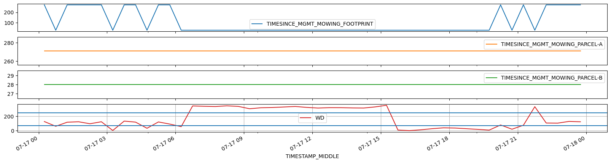
Plot complete management dataframe#
plt.rcParams["figure.dpi"] = 100
mgmt_hh.plot(x_compat=True, subplots=True, figsize=(20, 40));
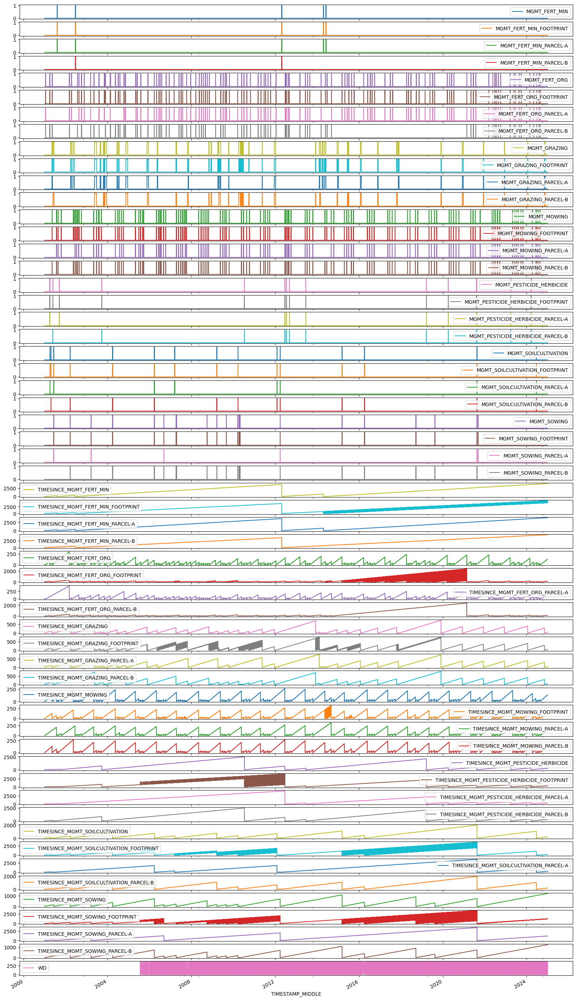
Export data to file#
Keep management info from 2005 onwards#
keeplocs = (mgmt_hh.index.year >= 2005) & (mgmt_hh.index.year <= 2024)
mgmt_hh = mgmt_hh.loc[keeplocs].copy()
mgmt_hh
| MGMT_FERT_MIN | MGMT_FERT_MIN_FOOTPRINT | MGMT_FERT_MIN_PARCEL-A | MGMT_FERT_MIN_PARCEL-B | MGMT_FERT_ORG | MGMT_FERT_ORG_FOOTPRINT | MGMT_FERT_ORG_PARCEL-A | MGMT_FERT_ORG_PARCEL-B | MGMT_GRAZING | MGMT_GRAZING_FOOTPRINT | MGMT_GRAZING_PARCEL-A | MGMT_GRAZING_PARCEL-B | MGMT_MOWING | MGMT_MOWING_FOOTPRINT | MGMT_MOWING_PARCEL-A | ... | TIMESINCE_MGMT_MOWING_PARCEL-A | TIMESINCE_MGMT_MOWING_PARCEL-B | TIMESINCE_MGMT_PESTICIDE_HERBICIDE | TIMESINCE_MGMT_PESTICIDE_HERBICIDE_FOOTPRINT | TIMESINCE_MGMT_PESTICIDE_HERBICIDE_PARCEL-A | TIMESINCE_MGMT_PESTICIDE_HERBICIDE_PARCEL-B | TIMESINCE_MGMT_SOILCULTIVATION | TIMESINCE_MGMT_SOILCULTIVATION_FOOTPRINT | TIMESINCE_MGMT_SOILCULTIVATION_PARCEL-A | TIMESINCE_MGMT_SOILCULTIVATION_PARCEL-B | TIMESINCE_MGMT_SOWING | TIMESINCE_MGMT_SOWING_FOOTPRINT | TIMESINCE_MGMT_SOWING_PARCEL-A | TIMESINCE_MGMT_SOWING_PARCEL-B | WD | |
|---|---|---|---|---|---|---|---|---|---|---|---|---|---|---|---|---|---|---|---|---|---|---|---|---|---|---|---|---|---|---|---|
| TIMESTAMP_MIDDLE | |||||||||||||||||||||||||||||||
| 2005-01-01 00:15:00 | 0.0 | 0.0 | 0 | 0 | 0.0 | 0.0 | 0 | 0 | 0.0 | 0.0 | 0 | 0 | 0.0 | 0.0 | 0 | ... | 88 | 88 | 467 | 467.0 | 1207 | 467 | 278 | 278.0 | 1304 | 278 | 278 | 278.0 | 653 | 278 | NaN |
| 2005-01-01 00:45:00 | 0.0 | 0.0 | 0 | 0 | 0.0 | 0.0 | 0 | 0 | 0.0 | 0.0 | 0 | 0 | 0.0 | 0.0 | 0 | ... | 88 | 88 | 467 | 467.0 | 1207 | 467 | 278 | 278.0 | 1304 | 278 | 278 | 278.0 | 653 | 278 | NaN |
| 2005-01-01 01:15:00 | 0.0 | 0.0 | 0 | 0 | 0.0 | 0.0 | 0 | 0 | 0.0 | 0.0 | 0 | 0 | 0.0 | 0.0 | 0 | ... | 88 | 88 | 467 | 467.0 | 1207 | 467 | 278 | 278.0 | 1304 | 278 | 278 | 278.0 | 653 | 278 | NaN |
| 2005-01-01 01:45:00 | 0.0 | 0.0 | 0 | 0 | 0.0 | 0.0 | 0 | 0 | 0.0 | 0.0 | 0 | 0 | 0.0 | 0.0 | 0 | ... | 88 | 88 | 467 | 467.0 | 1207 | 467 | 278 | 278.0 | 1304 | 278 | 278 | 278.0 | 653 | 278 | NaN |
| 2005-01-01 02:15:00 | 0.0 | 0.0 | 0 | 0 | 0.0 | 0.0 | 0 | 0 | 0.0 | 0.0 | 0 | 0 | 0.0 | 0.0 | 0 | ... | 88 | 88 | 467 | 467.0 | 1207 | 467 | 278 | 278.0 | 1304 | 278 | 278 | 278.0 | 653 | 278 | NaN |
| ... | ... | ... | ... | ... | ... | ... | ... | ... | ... | ... | ... | ... | ... | ... | ... | ... | ... | ... | ... | ... | ... | ... | ... | ... | ... | ... | ... | ... | ... | ... | ... |
| 2024-12-31 21:45:00 | 0.0 | 0.0 | 0 | 0 | 0.0 | 0.0 | 0 | 0 | 0.0 | 0.0 | 0 | 0 | 0.0 | 0.0 | 0 | ... | 131 | 131 | 284 | 287.0 | 287 | 284 | 194 | 194.0 | 194 | 194 | 1209 | 1209.0 | 1209 | 1229 | 192.547 |
| 2024-12-31 22:15:00 | 0.0 | 0.0 | 0 | 0 | 0.0 | 0.0 | 0 | 0 | 0.0 | 0.0 | 0 | 0 | 0.0 | 0.0 | 0 | ... | 131 | 131 | 284 | 287.0 | 287 | 284 | 194 | 194.0 | 194 | 194 | 1209 | 1209.0 | 1209 | 1229 | 191.328 |
| 2024-12-31 22:45:00 | 0.0 | 0.0 | 0 | 0 | 0.0 | 0.0 | 0 | 0 | 0.0 | 0.0 | 0 | 0 | 0.0 | 0.0 | 0 | ... | 131 | 131 | 284 | 287.0 | 287 | 284 | 194 | 194.0 | 194 | 194 | 1209 | 1209.0 | 1209 | 1229 | 183.899 |
| 2024-12-31 23:15:00 | 0.0 | 0.0 | 0 | 0 | 0.0 | 0.0 | 0 | 0 | 0.0 | 0.0 | 0 | 0 | 0.0 | 0.0 | 0 | ... | 131 | 131 | 284 | 287.0 | 287 | 284 | 194 | 194.0 | 194 | 194 | 1209 | 1209.0 | 1209 | 1229 | 198.289 |
| 2024-12-31 23:45:00 | 0.0 | 0.0 | 0 | 0 | 0.0 | 0.0 | 0 | 0 | 0.0 | 0.0 | 0 | 0 | 0.0 | 0.0 | 0 | ... | 131 | 131 | 284 | 287.0 | 287 | 284 | 194 | 194.0 | 194 | 194 | 1209 | 1209.0 | 1209 | 1229 | 200.110 |
350640 rows × 57 columns
Save to file#
mgmt_hh.to_csv("22.5_mgmt_full_timestamp.csv")